B3 · Opus 5.5 · attempt nQgA6Be
Batch tb8 · job tb8_B_EXP22004363_run1_221202_claude-opus-5-5 · trial B_EXP22004363_run1_221202__nQgA6Be. Long tool outputs are cut at 6,000 characters.
0.44
69.3
$13.75
903
168
cd /task; ls -la inputs inputs/raw | head; cat inputs/plan.md; echo; cat inputs/plate_layout.csv
inputs: total 52 dr-xr-xr-x 3 root root 4096 Nov 5 21:59 . drwxr-xr-x 4 root root 4096 Nov 5 22:01 .. -r--r--r-- 1 root root 6547 Nov 5 21:59 plan.md -r--r--r-- 1 root root 6889 Nov 5 21:59 plate_layout.csv dr-xr-xr-x 2 root root 4096 Nov 5 21:59 raw -r--r--r-- 1 root root 20898 Nov 5 21:59 start.flow inputs/raw: # EXP22004363 | 2022.11.28 Caspase Activity Assay Dev: Progranulin Conditioned Media This is the notebook entry text up to flow acquisition on 2022-12-02. People's names have been removed. - **Tags:** Target PGRN; Technology Assay development; Model System Cell based; Methodology Flow; Cell Type H4. - **Plate maps:** shown below as grids (rows A-H, columns 1-12). Empty cells are blank. - **Highlight colours:** the notebook encodes conditioned-media treatment by highlight colour. The colours are listed at the end. ## DAY 2022-11-28 ### Purpose To determine if progranulin conditioned media can restore wild-type levels of caspase activity in H4 GRN KO cells. ### Rationale Previous literature evidence suggests that applying exogenous progranulin to cells can restore molecular phenotypes in progranulin deficient lines. Our previous experiment with caspase activity on H4 GRN WT and KO cells showed that GRN KO lines had increased caspase activity. This difference was enhanced after campothesin challenge in both GRN WT and KO cells ( ). In this experiment, we will determine if applying conditioned media from WT cell lines onto KO lines can reduce caspase activity closer to WT levels. ### Materials - H4 WT cells - H4 PGRN KO E1 - H4 PGRN KO E3 - H4 media (DMEM + 10% FBS) - CellEvent Caspase-3/7 Green Flow Cytometry Assay Kit - Camptothecin - Plate 10k cells according to plate: | | 1 | 2 | 3 | 4 | 5 | 6 | 7 | 8 | 9 | 10 | 11 | 12 | |---|---|---|---|---|---|---|---|---|---|---|---|---| | A | WT | WT | WT | WT | WT | WT | WT | WT | WT | | | | | B | WT | WT | WT | WT | WT | WT | WT | WT | WT | | | | | C | WT | WT | WT | WT | WT | WT | WT | WT | WT | | | | | D | WT | WT | WT | WT | WT | WT | WT | WT | WT | | | | | E | E1 | E1 | E1 | E1 | E1 | E1 | E1 | E1 | E1 | | | | | F | E3 | E3 | E3 | E3 | E3 | E3 | E3 | E3 | E3 | | | | | G | | | | | | | | | Serum free media | | | | | H | 24 hr | | | | 48 hr | | | | | | | | - WT-330K for 33 wells-resuspend in 3300mL - E1 and E3-90K for 9 wells-resuspend in 900uL ## DAY 2022-11-29 - Harvest media after 24 and 48 hrs and place in 4 C until ready to use. ## DAY 2022-11-30 - Plate cells according to the following plate map and incubate at 37C: | | 1 | 2 | 3 | 4 | 5 | 6 | 7 | 8 | 9 | 10 | 11 | 12 | |---|---|---|---|---|---|---|---|---|---|---|---|---| | A | WT | WT | WT | WT | WT | WT | WT | WT | WT | WT | WT | WT | | B | E1 | E1 | E1 | E1 | E1 | E1 | E1 | E1 | E1 | E1 | E1 | E1 | | C | E3 | E3 | E3 | E3 | E3 | E3 | E3 | E3 | E3 | E3 | E3 | E3 | | D | WT | WT | WT | WT | WT | WT | WT | WT | WT | WT | WT | WT | | E | E1 | E1 | E1 | E1 | E1 | E1 | E1 | E1 | E1 | E1 | E1 | E1 | | F | E3 | E3 | E3 | E3 | E3 | E3 | E3 | E3 | E3 | E3 | E3 | E3 | | G | WT no treatment | WT no treatment | E3 no treatment | E3 no treatment | | | | | | | | | | H | E1 no treatment | E1 no treatment | WT (flow control) | WT (flow control) | | | | | | | | | ## DAY 2022-12-01 - Gently wash cells with DMEM. - Replace media with conditioned media collected previously. Conditioned media added at 9AM ## DAY 2022-12-02 - After 24 hours, add campthothesin according to the plate map: | | 1 | 2 | 3 | 4 | 5 | 6 | 7 | 8 | 9 | 10 | 11 | 12 | |---|---|---|---|---|---|---|---|---|---|---|---|---| | A | WT 10uM | WT 5uM | WT 2uM | WT DMSO | WT 10uM | WT 5uM | WT 2uM | WT DMSO | WT 10uM | WT 5uM | WT 2uM | WT DMSO | | B | E1 10uM | E1 5uM | E1 2uM | E1 DMSO | E1 10uM | E1 5uM | E1 2uM | E1 DMSO | E1 10uM | E1 5uM | E1 2uM | E1 DMSO | | C | E3 10uM | E3 5uM | E3 2uM | E3 DMSO | E3 10uM | E3 5uM | E3 2uM | E3 DMSO | E3 10uM | E3 5uM | E3 2uM | E3 DMSO | | D | WT 10uM | WT 5uM | WT 2uM | WT DMSO | WT 10uM | WT 5uM | WT 2uM | WT DMSO | WT 10uM | WT 5uM | WT 2uM | WT DMSO | | E | E1 10uM | E1 5uM | E1 2uM | E1 DMSO | E1 10uM | E1 5uM | E1 2uM | E1 DMSO | E1 10uM | E1 5uM | E1 2uM | E1 DMSO | | F | E3 10uM | E3 5uM | E3 2uM | E3 DMSO | E3 10uM | E3 5uM | E3 2uM | E3 DMSO | E3 10uM | E3 5uM | E3 2uM | E3 DMSO | | G | WT no treatment (no stain) | WT no treatment | E3 no treatment | E3 no treatment | E1 no treatment | E1 no treatment | WT (caspase stain only) | WT (L/D stain only) | | | | | | H | | | | | | | | | | | | | - Blue highlight=treated with WT 24hr conditoned media - Green highlight= treated with WT 48hr conditioned media - No highlight= no conditioned media treatment - Incubate and run flow. - Aspirate media and wash with PBS - Add 150uL trypsin incubate for 5min - Add 75uL FBS and collect into 96w round bottom plate - spin down 200xg for 5min - Add 200uL of Cell Event Caspase 3/7 Detection reagent (1:1000) in flow staining buffer. Incubate for 30min at 37C - Prepare SYTOX AAdvanced Dead Cell Stain at 100uM concentration by adding 1000uL DMSO to stain. Mix well - During the final 5 minutes of 30min Caspase incubation add 2uL of the 100uM Dead Cell stain (final concentration of 1uM) - Analyze the samples without fixing. Flow cytometer settings: FSC-20; SSC-290; BL1 (caspase)-225, BL2 (AAddvanced Dead Cell Stain)-350 ## Plate-map cell colours (from the notebook's highlighting; the plain-text maps above drop colour) ### Plate map of 2022-11-28 - row A: WT [light cyan #C2EDF8] x8 (cols 1-8) | WT (col 9, no highlight) | - | - | - - row B: WT [light cyan #C2EDF8] x8 (cols 1-8) | WT (col 9, no highlight) | - | - | - - row C: WT [light cyan #C2EDF8] x8 (cols 1-8) | WT (col 9, no highlight) | - | - | - - row D: WT [light green #E8F9CF] x8 (cols 1-8) | WT (col 9, no highlight) | - | - | - - row E: E1 [light green #E8F9CF] x8 (cols 1-8) | E1 (col 9, no highlight) | - | - | - - row F: E3 [light green #E8F9CF] x8 (cols 1-8) | E3 (col 9, no highlight) | - | - | - - row G: cols 1-8 empty | … [7,763 more characters not shown]
cd /task; ls /root/.claude/projects/-task/memory/ 2>/dev/null; cat /root/.claude/projects/-task/memory/MEMORY.md 2>/dev/null; ls outputs; head -c 3000 inputs/start.flow | strings | head -50
/bin/bash: line 1: strings: command not found
cd /task; ls inputs/raw | wc -l; ls -la inputs/raw | head -5; ls -la outputs; head -c 4000 inputs/start.flow; echo; python3 -c "print(open('/task/inputs/start.flow','rb').read()[:200])"80
total 113516
dr-xr-xr-x 2 root root 4096 Nov 5 21:59 .
dr-xr-xr-x 3 root root 4096 Nov 5 21:59 ..
-r--r--r-- 1 root root 1637256 Nov 5 21:59 Caspase-assay-2-mlk_caspase_Group_A1.fcs
-r--r--r-- 1 root root 2207696 Nov 5 21:59 Caspase-assay-2-mlk_caspase_Group_A10.fcs
total 8
drwxrwsrwx 2 agent task 4096 Nov 5 22:01 .
drwxr-xr-x 4 root root 4096 Nov 5 22:01 ..
- !workflow-item;5
channels: []
conditions: {}
current_view: null
metadata: {}
operation: !import;4
channels_list: []
conditions:
well: category
sample: category
cell_line: category
camptothecin: category
conditioned_media: category
events: null
ignore_v_bool: false
name_metadata: null
tubes:
- !tube;1
conditions:
well: 'A1'
sample: 'WT 10uM'
cell_line: 'WT'
camptothecin: '10uM'
conditioned_media: 'WT 24hr conditioned media'
file: '/task/inputs/raw/Caspase-assay-2-mlk_caspase_Group_A1.fcs'
- !tube;1
conditions:
well: 'A2'
sample: 'WT 5uM'
cell_line: 'WT'
camptothecin: '5uM'
conditioned_media: 'WT 24hr conditioned media'
file: '/task/inputs/raw/Caspase-assay-2-mlk_caspase_Group_A2.fcs'
- !tube;1
conditions:
well: 'A3'
sample: 'WT 2uM'
cell_line: 'WT'
camptothecin: '2uM'
conditioned_media: 'WT 24hr conditioned media'
file: '/task/inputs/raw/Caspase-assay-2-mlk_caspase_Group_A3.fcs'
- !tube;1
conditions:
well: 'A4'
sample: 'WT DMSO'
cell_line: 'WT'
camptothecin: 'DMSO'
conditioned_media: 'WT 24hr conditioned media'
file: '/task/inputs/raw/Caspase-assay-2-mlk_caspase_Group_A4.fcs'
- !tube;1
conditions:
well: 'A5'
sample: 'WT 10uM'
cell_line: 'WT'
camptothecin: '10uM'
conditioned_media: 'WT 48hr conditioned media'
file: '/task/inputs/raw/Caspase-assay-2-mlk_caspase_Group_A5.fcs'
- !tube;1
conditions:
well: 'A6'
sample: 'WT 5uM'
cell_line: 'WT'
camptothecin: '5uM'
conditioned_media: 'WT 48hr conditioned media'
file: '/task/inputs/raw/Caspase-assay-2-mlk_caspase_Group_A6.fcs'
- !tube;1
conditions:
well: 'A7'
sample: 'WT 2uM'
cell_line: 'WT'
camptothecin: '2uM'
conditioned_media: 'WT 48hr conditioned media'
file: '/task/inputs/raw/Caspase-assay-2-mlk_caspase_Group_A7.fcs'
- !tube;1
conditions:
well: 'A8'
sample: 'WT DMSO'
cell_line: 'WT'
camptothecin: 'DMSO'
conditioned_media: 'WT 48hr conditioned media'
file: '/task/inputs/raw/Caspase-assay-2-mlk_caspase_Group_A8.fcs'
- !tube;1
conditions:
well: 'A9'
sample: 'WT 10uM'
cell_line: 'WT'
camptothecin: '10uM'
conditioned_media: 'no conditioned media'
file: '/task/inputs/raw/Caspase-assay-2-mlk_caspase_Group_A9.fcs'
- !tube;1
conditions:
well: 'A10'
sample: 'WT 5uM'
cell_line: 'WT'
camptothecin: '5uM'
conditioned_media: 'no conditioned media'
file: '/task/inputs/raw/Caspase-assay-2-mlk_caspase_Group_A10.fcs'
- !tube;1
conditions:
well: 'A11'
sample: 'WT 2uM'
cell_line: 'WT'
camptothecin: '2uM'
conditioned_media: 'no conditioned media'
file: '/task/inputs/raw/Caspase-assay-2-mlk_caspase_Group_A11.fcs'
- !tube;1
conditions:
well: 'A12'
sample: 'WT DMSO'
cell_line: 'WT'
camptothecin: 'DMSO'
conditioned_media: 'no conditioned media'
file: '/task/inputs/raw/Caspase-assay-2-mlk_caspase_Group_A12.fcs'
- !tube;1
conditions:
well: 'B1'
sample: 'E1 10uM'
cell_line: 'E1'
camptothecin: '10uM'
conditioned_media: 'WT 24hr conditioned media'
file: '/task/inputs/raw/Caspase-assay-2-mlk_caspase_Group_B1.fcs'
- !tube;1
conditions:
well: 'B2'
sample: 'E1 5uM'
cell_line: 'E1'
camptothecin: '5uM'
conditioned_media: 'WT 24hr conditioned media'
file: '/task/inputs/raw/Caspase-assay-2-mlk_caspase_Group_B2.fcs'
- !tube;1
conditions:
well: 'B3'
sample: 'E1 2
b'- !workflow-item;5\n channels: []\n conditions: {}\n current_view: null\n metadata: {}\n operation: !import;4\n channels_list: []\n conditions:\n well: category\n sample: category\n ce'cd /task; ls -l inputs/raw | awk '{print $5, $9}' | sort -n | head -20; echo; ls -l inputs/raw | awk '{print $5, $9}' | sort -n | tail -5; tail -40 inputs/start.flow612128 Caspase-assay-2-mlk_caspase_Group_F1.fcs
623568 Caspase-assay-2-mlk_caspase_Group_F4.fcs
721484 Caspase-assay-2-mlk_caspase_Group_F8.fcs
737812 Caspase-assay-2-mlk_caspase_Group_F5.fcs
770624 Caspase-assay-2-mlk_caspase_Group_F6.fcs
822104 Caspase-assay-2-mlk_caspase_Group_F12.fcs
824912 Caspase-assay-2-mlk_caspase_Group_E8.fcs
829488 Caspase-assay-2-mlk_caspase_Group_C10.fcs
838172 Caspase-assay-2-mlk_caspase_Group_G5.fcs
869632 Caspase-assay-2-mlk_caspase_Group_F9.fcs
879772 Caspase-assay-2-mlk_caspase_Group_G6.fcs
881592 Caspase-assay-2-mlk_caspase_Group_F10.fcs
927612 Caspase-assay-2-mlk_caspase_Group_C1.fcs
936504 Caspase-assay-2-mlk_caspase_Group_B5.fcs
950076 Caspase-assay-2-mlk_caspase_Group_C4.fcs
958136 Caspase-assay-2-mlk_caspase_Group_F2.fcs
975608 Caspase-assay-2-mlk_caspase_Group_C8.fcs
982108 Caspase-assay-2-mlk_caspase_Group_C5.fcs
982628 Caspase-assay-2-mlk_caspase_Group_E4.fcs
2260788 Caspase-assay-2-mlk_caspase_Group_D11.fcs
2263752 Caspase-assay-2-mlk_caspase_Group_A11.fcs
2264324 Caspase-assay-2-mlk_caspase_Group_E11.fcs
2333172 Caspase-assay-2-mlk_caspase_Group_D3.fcs
2469724 Caspase-assay-2-mlk_caspase_Group_A3.fcs
well: 'G4'
sample: 'E3 no treatment'
cell_line: 'E3'
camptothecin: 'no treatment'
conditioned_media: 'no conditioned media'
file: '/task/inputs/raw/Caspase-assay-2-mlk_caspase_Group_G4.fcs'
- !tube;1
conditions:
well: 'G5'
sample: 'E1 no treatment'
cell_line: 'E1'
camptothecin: 'no treatment'
conditioned_media: 'no conditioned media'
file: '/task/inputs/raw/Caspase-assay-2-mlk_caspase_Group_G5.fcs'
- !tube;1
conditions:
well: 'G6'
sample: 'E1 no treatment'
cell_line: 'E1'
camptothecin: 'no treatment'
conditioned_media: 'no conditioned media'
file: '/task/inputs/raw/Caspase-assay-2-mlk_caspase_Group_G6.fcs'
- !tube;1
conditions:
well: 'G7'
sample: 'WT (caspase stain only)'
cell_line: 'WT'
camptothecin: 'not stated'
conditioned_media: 'no conditioned media'
file: '/task/inputs/raw/Caspase-assay-2-mlk_caspase_Group_G7.fcs'
- !tube;1
conditions:
well: 'G8'
sample: 'WT (L/D stain only)'
cell_line: 'WT'
camptothecin: 'not stated'
conditioned_media: 'no conditioned media'
file: '/task/inputs/raw/Caspase-assay-2-mlk_caspase_Group_G8.fcs'
statistics: {}
views: []cd /task; which cu; cu screenshot /tmp/screen.png; echo done
/usr/local/bin/cu /tmp/screen.png done
{
"file_path": "/tmp/screen.png"
}
cu click 915 493; sleep 1; cu click 90 75; sleep 2; cu screenshot /tmp/screen.png
{
"file_path": "/tmp/screen.png"
}/tmp/screen.png

cu click 1038 744; cu paste "/task/inputs/start.flow"; cu key Return; sleep 2; cu screenshot /tmp/screen.png
{
"file_path": "/tmp/screen.png"
}/tmp/screen.png

cu click 746 449; sleep 8; cu screenshot /tmp/screen.png
{
"file_path": "/tmp/screen.png"
}/tmp/screen.png

cu click 230 183; sleep 2; cu screenshot /tmp/screen.png
{
"file_path": "/tmp/screen.png"
}/tmp/screen.png

cu drag 210 808 210 420; sleep 1; cu screenshot /tmp/screen.png
{
"file_path": "/tmp/screen.png"
}/tmp/screen.png

cu click 43 483; sleep 1; cu screenshot /tmp/screen.png
{
"file_path": "/tmp/screen.png"
}/tmp/screen.png
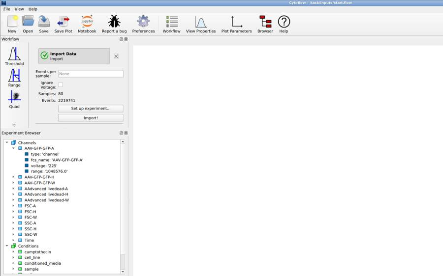
cu click 43 483; sleep 0.5; cu click 43 540; sleep 0.5; cu click 43 596; sleep 0.5; cu screenshot /tmp/screen.png
{
"file_path": "/tmp/screen.png"
}/tmp/screen.png
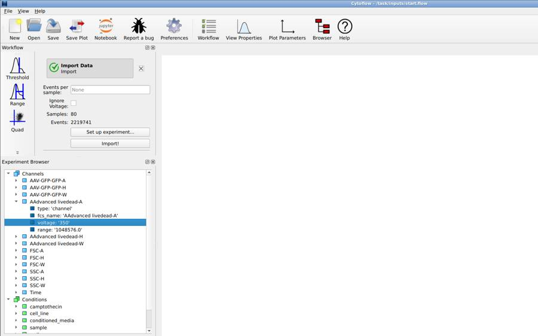
cu click 43 540; sleep 0.5; cu click 652 75; sleep 1; cu screenshot /tmp/screen.png
{
"file_path": "/tmp/screen.png"
}/tmp/screen.png

cu click 652 75; sleep 1; cu screenshot /tmp/screen.png
{
"file_path": "/tmp/screen.png"
}/tmp/screen.png
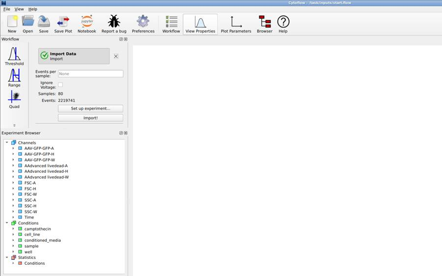
cu click 600 9 double; sleep 1.5; cu screenshot /tmp/screen.png
{
"file_path": "/tmp/screen.png"
}/tmp/screen.png
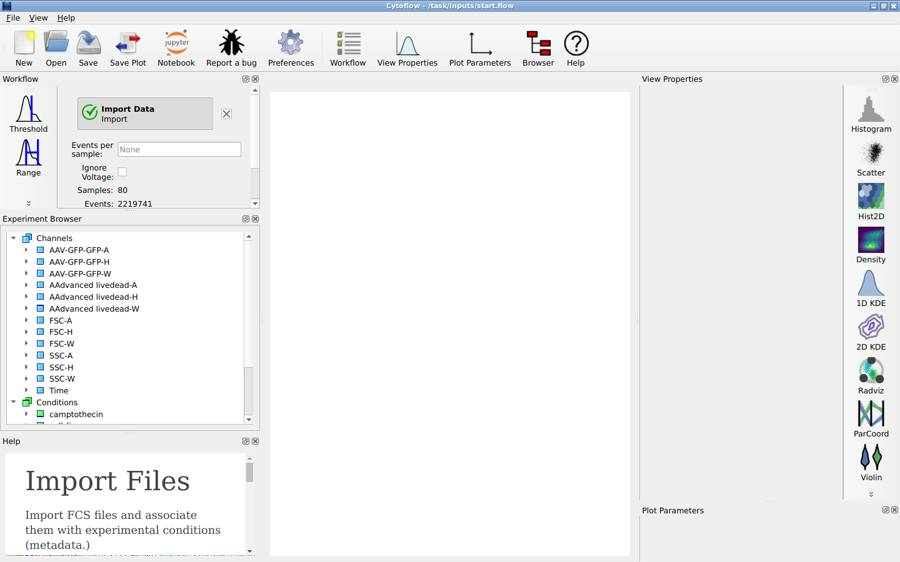
cu click 408 706; sleep 0.5; cu click 1393 250; sleep 2; cu screenshot /tmp/screen.png
{
"file_path": "/tmp/screen.png"
}/tmp/screen.png
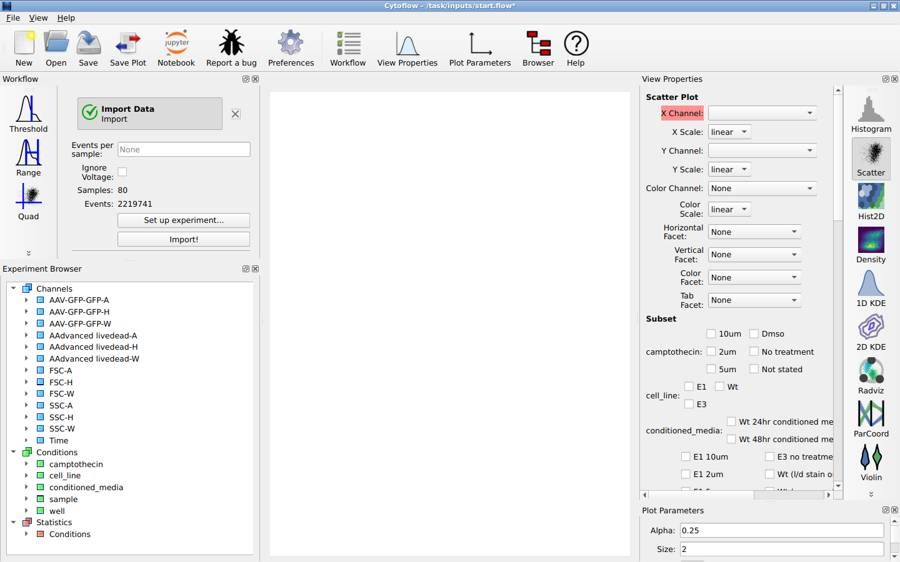
cu click 1393 390; sleep 1.5; cu screenshot /tmp/screen.png
{
"file_path": "/tmp/screen.png"
}/tmp/screen.png
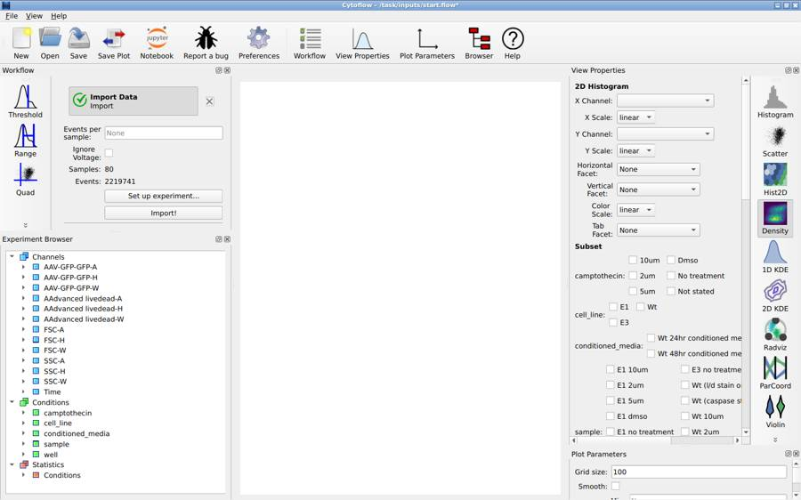
cu click 1195 181; sleep 1; cu screenshot /tmp/screen.png
{
"file_path": "/tmp/screen.png"
}/tmp/screen.png
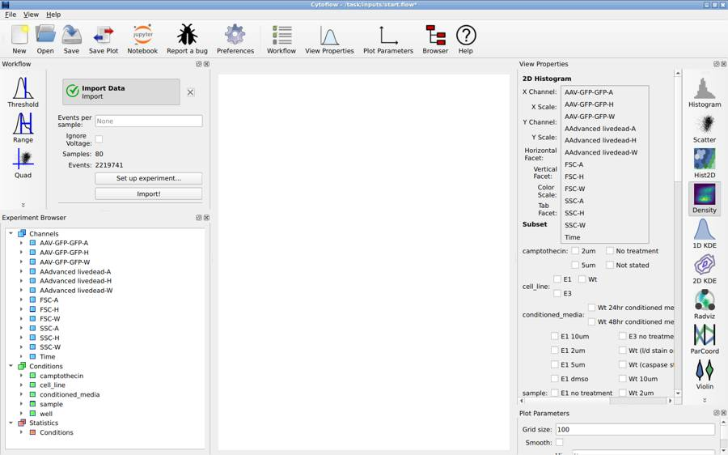
cu click 1135 325; sleep 0.7; cu click 1195 241; sleep 0.7; cu screenshot /tmp/screen.png
{
"file_path": "/tmp/screen.png"
}/tmp/screen.png
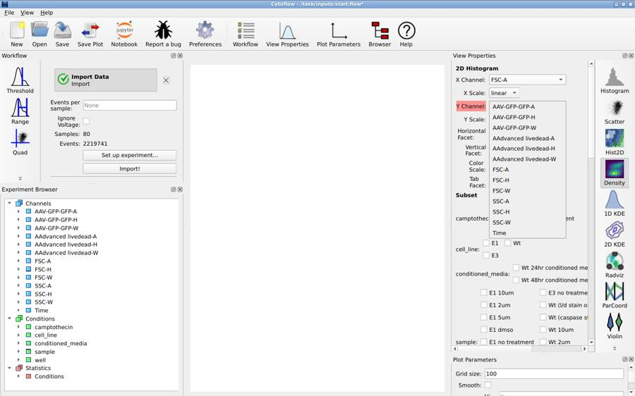
cu click 1135 457; sleep 5; cu screenshot /tmp/screen.png
{
"file_path": "/tmp/screen.png"
}/tmp/screen.png
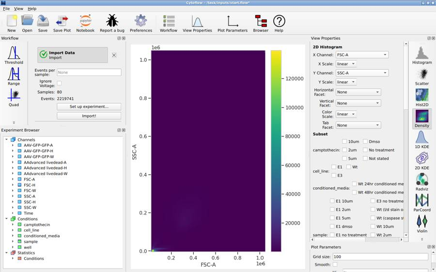
cu click 1142 377; sleep 0.7; cu screenshot /tmp/screen.png
{
"file_path": "/tmp/screen.png"
}/tmp/screen.png
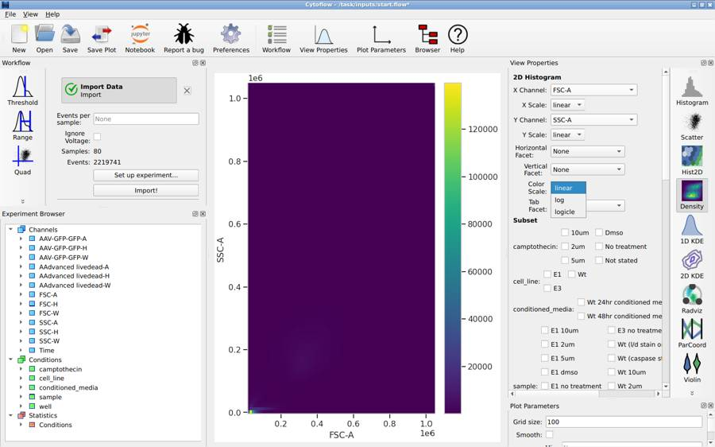
cu click 1127 402; sleep 5; cu screenshot /tmp/screen.png
{
"file_path": "/tmp/screen.png"
}/tmp/screen.png
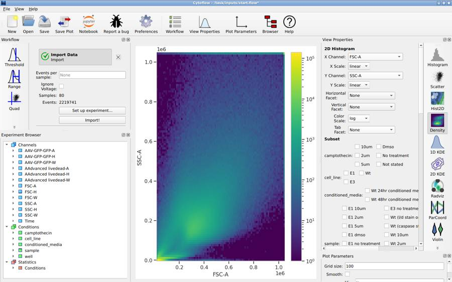
cu click 1182 304; sleep 0.7; cu screenshot /tmp/screen.png
{
"file_path": "/tmp/screen.png"
}/tmp/screen.png
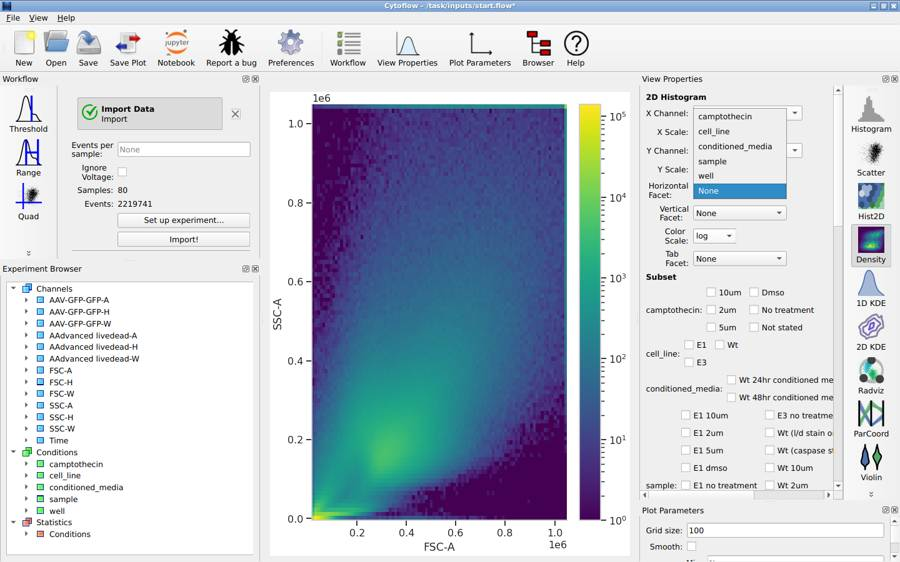
cu click 1130 281; sleep 15; cu screenshot /tmp/screen.png
{
"file_path": "/tmp/screen.png"
}/tmp/screen.png
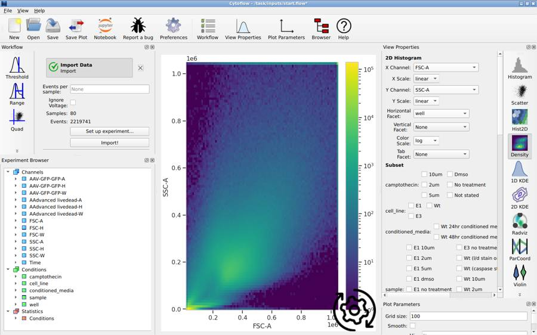
sleep 30; cu screenshot /tmp/screen.png
<tool_use_error>Blocked: sleep 30 followed by: cu screenshot /tmp/screen.png. To wait for a condition, use Monitor with an until-loop (e.g. `until <check>; do sleep 2; done`). To wait for a command you started, use run_in_background: true. Do not chain shorter sleeps to work around this block.</tool_use_error>
{
"file_path": "/tmp/screen.png"
}
python3 -c "import PIL; print(PIL.__version__)"; python3 -c "import numpy, matplotlib; print('ok')"10.2.0 ok
mkdir -p /tmp/tools; cat > /tmp/tools/waitidle.py <<'EOF'
import subprocess, time, sys
import numpy as np
from PIL import Image
# wait until screen is stable (2 consecutive identical shots) and spinner absent; max timeout
maxt = float(sys.argv[1]) if len(sys.argv)>1 else 120
t0=time.time(); prev=None; stable=0
time.sleep(1.5)
while time.time()-t0 < maxt:
subprocess.run(['cu','screenshot','/tmp/screen.png'],capture_output=True)
a=np.asarray(Image.open('/tmp/screen.png').convert('L'),dtype=np.int16)
if prev is not None and a.shape==prev.shape and np.abs(a-prev).mean()<0.05:
stable+=1
else:
stable=0
prev=a
if stable>=2: break
time.sleep(2)
print('waited %.1fs'%(time.time()-t0))
EOF
python3 /tmp/tools/waitidle.py 180waited 5.8s
{
"file_path": "/tmp/screen.png"
}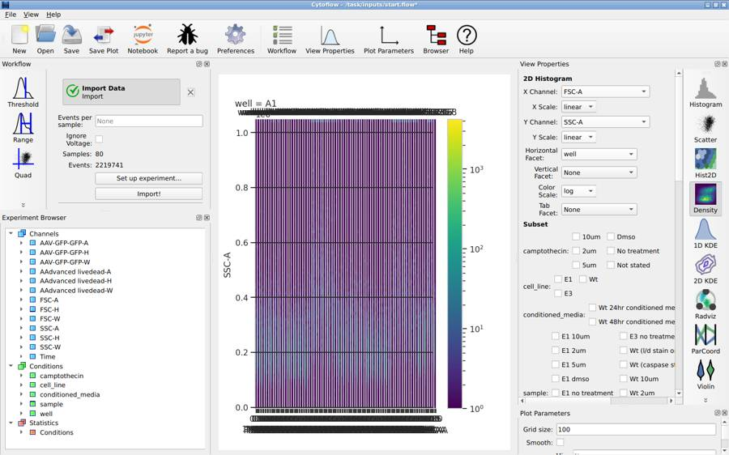
cu click 1182 304; sleep 0.7; cu click 1130 305; sleep 0.5; cu click 1182 414; sleep 0.7; cu screenshot /tmp/screen.png
{
"file_path": "/tmp/screen.png"
}/tmp/screen.png
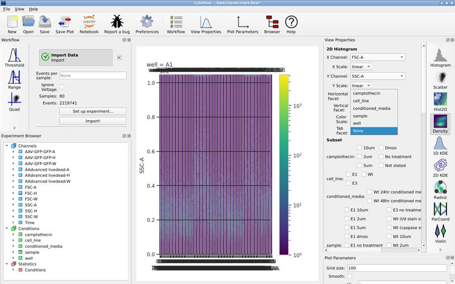
cu click 1130 390; python3 /tmp/tools/waitidle.py 120
{
"file_path": "/tmp/screen.png"
}waited 5.8s
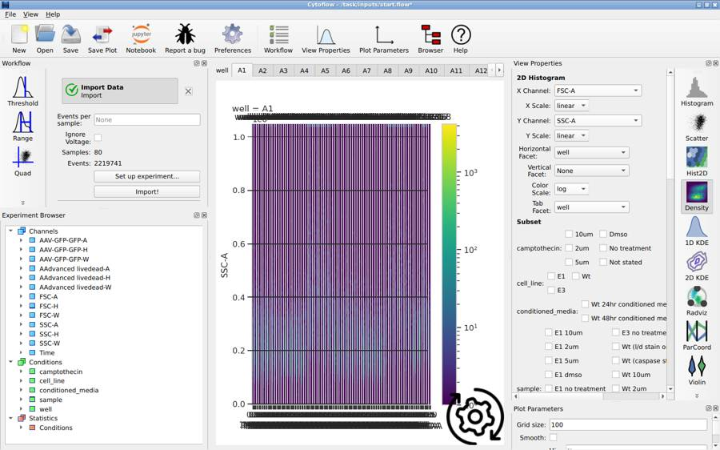
cat > /tmp/tools/waitidle.py <<'EOF'
import subprocess, time, sys
import numpy as np
from PIL import Image
maxt = float(sys.argv[1]) if len(sys.argv)>1 else 120
t0=time.time(); prev=None; stable=0
time.sleep(2)
while time.time()-t0 < maxt:
subprocess.run(['cu','screenshot','/tmp/screen.png'],capture_output=True)
a=np.asarray(Image.open('/tmp/screen.png').convert('L'),dtype=np.int16)
spin = (a[780:890,930:1005]<60).sum()
if prev is not None and a.shape==prev.shape and np.abs(a-prev).mean()<0.05 and spin<700:
stable+=1
else:
stable=0
prev=a
if stable>=1: break
time.sleep(1.5)
print('waited %.1fs spin=%d'%(time.time()-t0, spin))
EOF
python3 /tmp/tools/waitidle.py 5waited 5.2s spin=2343
cu click 1182 304; sleep 0.8; cu screenshot /tmp/screen.png
{
"file_path": "/tmp/screen.png"
}/tmp/screen.png
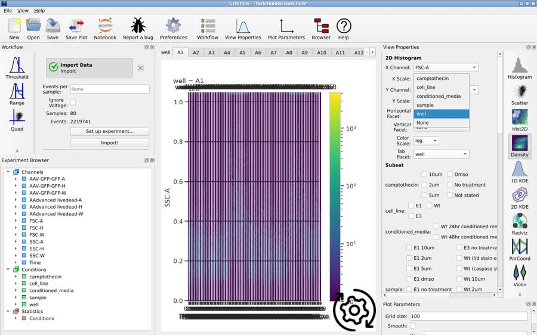
cu click 1133 329; python3 /tmp/tools/waitidle.py 240
{
"file_path": "/tmp/screen.png"
}waited 3.7s spin=39
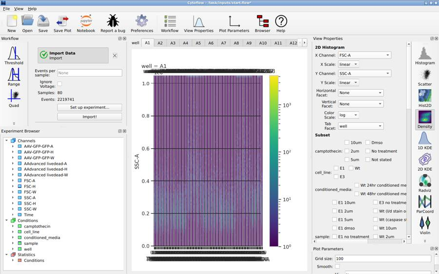
python3 /tmp/tools/waitidle.py 60; cu screenshot /tmp/screen.png
{
"file_path": "/tmp/screen.png"
}waited 60.5s spin=1615 /tmp/screen.png
cat > /tmp/tools/waitidle.py <<'EOF'
import subprocess, time, sys
import numpy as np
from PIL import Image
maxt = float(sys.argv[1]) if len(sys.argv)>1 else 120
t0=time.time(); prev=None; stable=0
time.sleep(2)
while time.time()-t0 < maxt:
subprocess.run(['cu','screenshot','/tmp/screen.png'],capture_output=True)
rgb=np.asarray(Image.open('/tmp/screen.png').convert('RGB'),dtype=np.int16)
a=rgb.mean(axis=2)
reg=rgb[775:890,895:1005]
spin=(reg.max(axis=2)<20).sum()
if prev is not None and a.shape==prev.shape and np.abs(a-prev).mean()<0.05 and spin<600:
stable+=1
else:
stable=0
prev=a
if stable>=1: break
time.sleep(1.5)
print('waited %.1fs spin=%d'%(time.time()-t0, spin))
EOF
python3 /tmp/tools/waitidle.py 5waited 3.7s spin=0
cu click 483 141; sleep 0.3; cu key Right; python3 /tmp/tools/waitidle.py 60
{
"file_path": "/tmp/screen.png"
}waited 3.7s spin=0
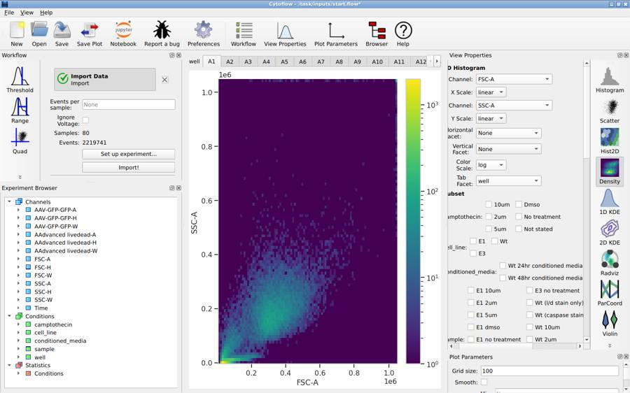
cu click 525 141; python3 /tmp/tools/waitidle.py 60
{
"file_path": "/tmp/screen.png"
}waited 3.7s spin=0
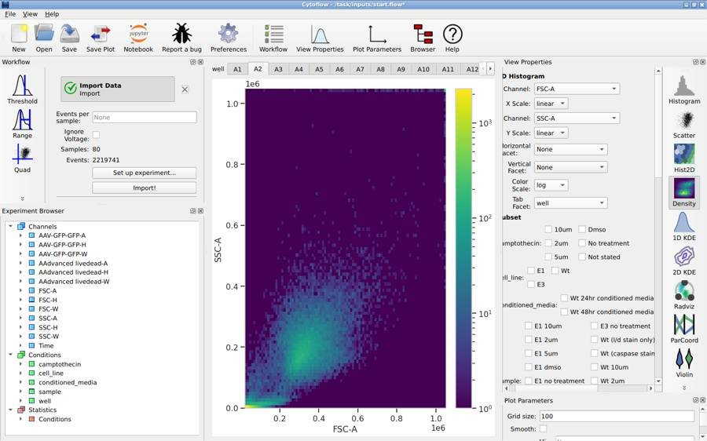
cu key Right; python3 /tmp/tools/waitidle.py 60; python3 -c "
from PIL import Image; im=Image.open('/tmp/screen.png'); im.crop((430,125,1010,160)).save('/tmp/c.png')"{
"file_path": "/tmp/c.png"
}waited 3.7s spin=0
cu scroll 700 141 down 1; python3 /tmp/tools/waitidle.py 60; python3 -c "
from PIL import Image; im=Image.open('/tmp/screen.png'); im.crop((430,125,1010,160)).save('/tmp/c.png')"{
"file_path": "/tmp/c.png"
}waited 3.7s spin=0
mkdir -p /tmp/tiles; cat > /tmp/tools/capture.py <<'EOF'
import subprocess, time, sys, os
import numpy as np
from PIL import Image
view=sys.argv[1]; n=int(sys.argv[2]) if len(sys.argv)>2 else 80
wells=[l.split(',')[1] for l in open('/task/inputs/plate_layout.csv').read().strip().split('\n')[1:]]
def shot():
subprocess.run(['cu','screenshot','/tmp/cap.png'],capture_output=True)
return Image.open('/tmp/cap.png').convert('RGB')
def wait(maxt=90):
t0=time.time(); prev=None
time.sleep(1.8)
while time.time()-t0<maxt:
im=shot(); a=np.asarray(im,dtype=np.int16)
spin=(a[775:890,895:1005].max(axis=2)<20).sum()
if prev is not None and np.abs(a-prev).mean()<0.05 and spin<600: return im
prev=a; time.sleep(1.2)
return im
# go to first tab
for k in range(10): subprocess.run(['cu','scroll','700','141','up','10'],capture_output=True)
im=wait()
for i in range(n):
im.crop((432,125,1008,890)).save(f'/tmp/tiles/{view}_{i:02d}_{wells[i]}.png')
if i<n-1:
subprocess.run(['cu','scroll','700','141','down','1'],capture_output=True)
im=wait()
print('done')
EOF
echo okok
cd /tmp && timeout 900 python3 /tmp/tools/capture.py fscssc 80 2>&1 | tail -2
done Shell cwd was reset to /task
cat > /tmp/tools/montage.py <<'EOF'
import sys, glob
from PIL import Image, ImageDraw
view=sys.argv[1]; start=int(sys.argv[2]); cnt=int(sys.argv[3]); cols=int(sys.argv[4]); out=sys.argv[5]
crop=tuple(map(int,sys.argv[6].split(','))) if len(sys.argv)>6 else None
scale=float(sys.argv[7]) if len(sys.argv)>7 else 0.5
files=sorted(glob.glob(f'/tmp/tiles/{view}_*.png'))[start:start+cnt]
ims=[]
for f in files:
im=Image.open(f)
if crop: im=im.crop(crop)
im=im.resize((int(im.width*scale),int(im.height*scale)))
d=ImageDraw.Draw(im); w=f.split('_')[-1][:-4]
d.rectangle((0,0,60,22),fill='white'); d.text((3,3),w,fill='red')
ims.append(im)
W,H=ims[0].size; rows=(len(ims)+cols-1)//cols
M=Image.new('RGB',(W*cols,H*rows),'white')
for k,im in enumerate(ims): M.paste(im,((k%cols)*W,(k//cols)*H))
M.save(out); print(M.size)
EOF
python3 /tmp/tools/montage.py fscssc 0 24 6 /tmp/m1.png 60,40,480,720 0.4(1008, 1088)
cd /tmp; python3 -c "
from PIL import Image
for f in ['/tmp/tiles/fscssc_13_B2.png','/tmp/tiles/fscssc_79_G8.png','/tmp/tiles/fscssc_50_E3.png']:
im=Image.open(f).crop((0,0,576,35)); im.save(f.replace('tiles/','tab_'))
"; python3 -c "
from PIL import Image
ims=[Image.open(f) for f in ['/tmp/tab_fscssc_13_B2.png','/tmp/tab_fscssc_79_G8.png','/tmp/tab_fscssc_50_E3.png']]
M=Image.new('RGB',(576,105)); [M.paste(im,(0,35*i)) for i,im in enumerate(ims)]; M.save('/tmp/tabs.png')"Shell cwd was reset to /task
{
"file_path": "/tmp/tabs.png"
}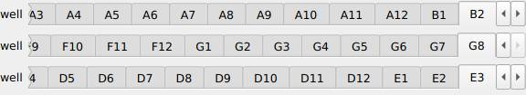
{
"file_path": "/tmp/m1.png"
}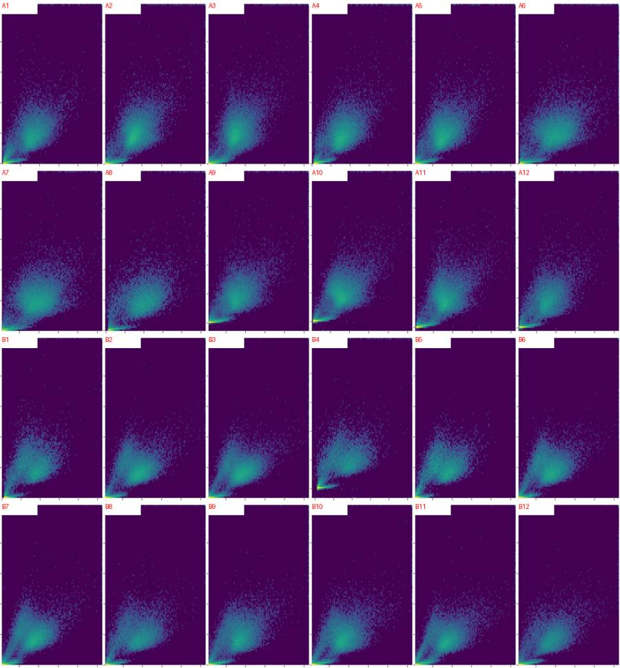
python3 /tmp/tools/montage.py fscssc 24 28 7 /tmp/m2.png 60,40,480,720 0.34; python3 /tmp/tools/montage.py fscssc 52 28 7 /tmp/m3.png 60,40,480,720 0.34
{
"file_path": "/tmp/m2.png"
}{
"file_path": "/tmp/m3.png"
}(994, 924) (994, 924)
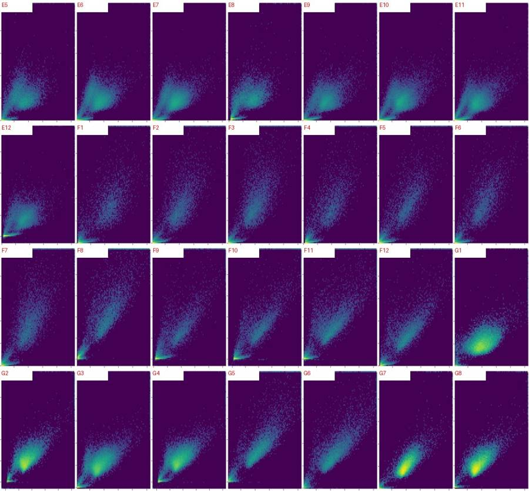
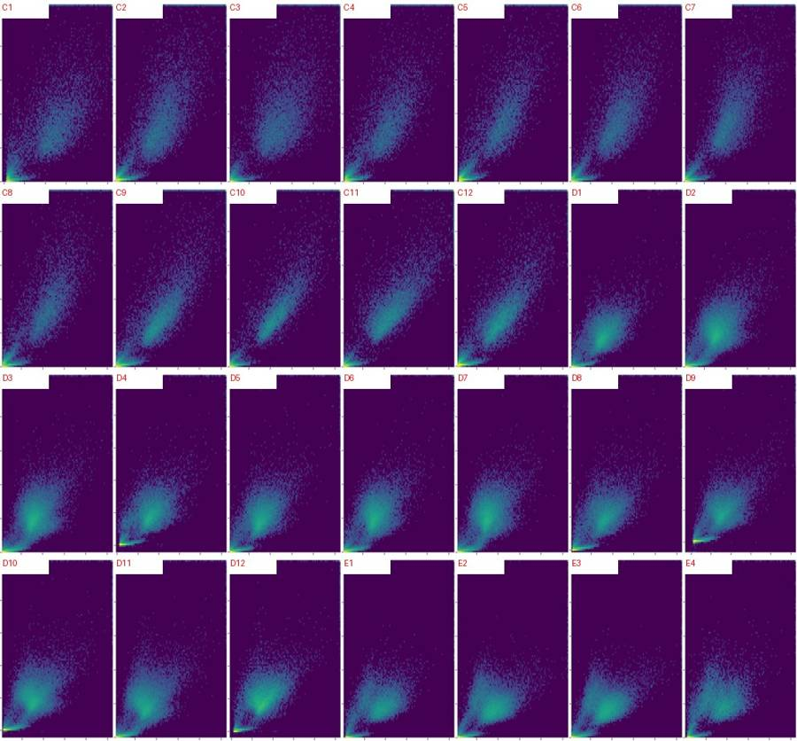
thinking
The FSC/SSC screen is done, and E3 rows look distinct while G5/G6 and G3/G4 may have swapped labels, which I'll check next with Time vs FSC-A for clogs.
cu click 1175 181; sleep 0.8; cu screenshot /tmp/screen.png
{
"file_path": "/tmp/screen.png"
}/tmp/screen.png
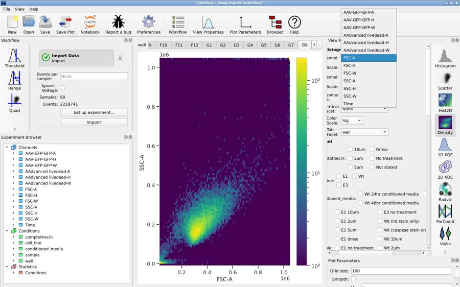
cu click 1090 325; sleep 1; cu click 1150 241; sleep 0.8; cu screenshot /tmp/screen.png
{
"file_path": "/tmp/screen.png"
}/tmp/screen.png
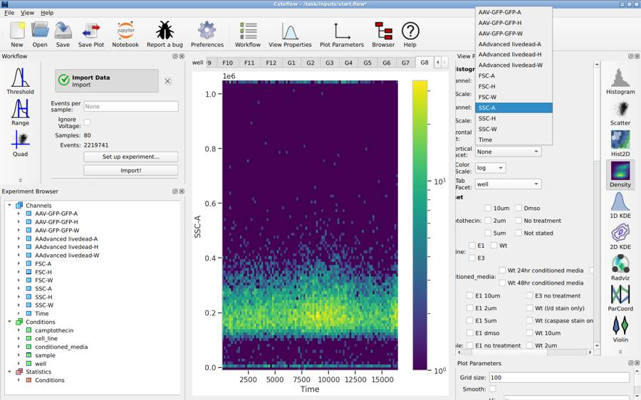
cu click 1093 170; python3 /tmp/tools/waitidle.py 60; cd /tmp && timeout 900 python3 /tmp/tools/capture.py time 80 2>&1 | tail -2
waited 3.7s spin=0 done Shell cwd was reset to /task
python3 /tmp/tools/montage.py time 0 40 8 /tmp/m1.png 0,40,576,765 0.22; python3 /tmp/tools/montage.py time 40 40 8 /tmp/m2.png 0,40,576,765 0.22
{
"file_path": "/tmp/m1.png"
}{
"file_path": "/tmp/m2.png"
}(1008, 795) (1008, 795)
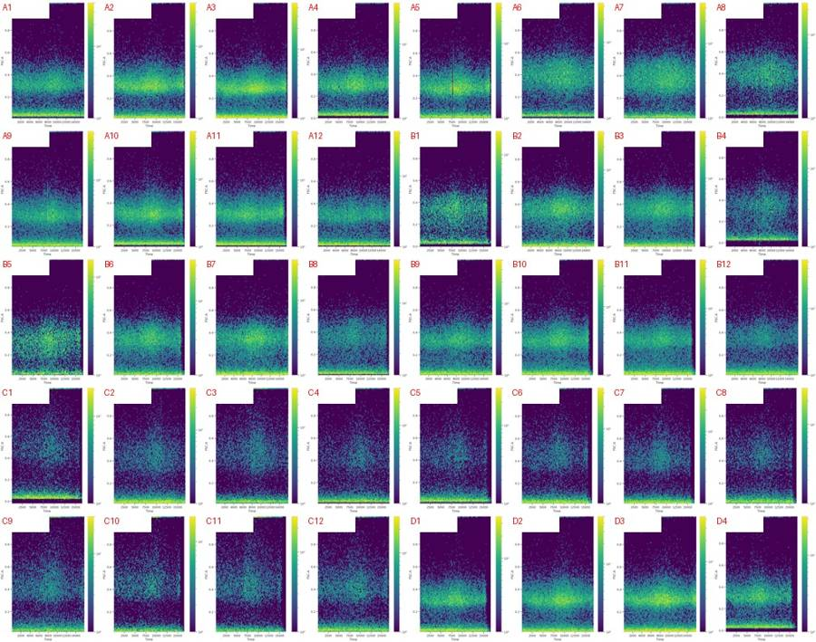
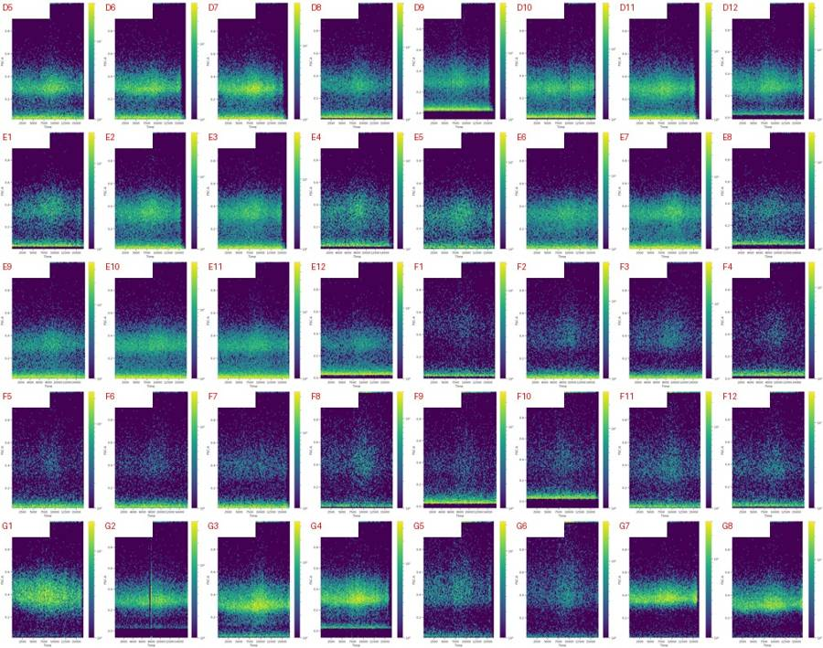
cat > /tmp/tools/pick.py <<'EOF'
import sys, glob
from PIL import Image, ImageDraw
view=sys.argv[1]; wells=sys.argv[2].split(','); cols=int(sys.argv[3]); out=sys.argv[4]
crop=tuple(map(int,sys.argv[5].split(','))); scale=float(sys.argv[6])
ims=[]
for w in wells:
f=glob.glob(f'/tmp/tiles/{view}_*_{w}.png')[0]
im=Image.open(f).crop(crop); im=im.resize((int(im.width*scale),int(im.height*scale)))
d=ImageDraw.Draw(im); d.rectangle((0,0,40,16),fill='white'); d.text((3,2),w,fill='red'); ims.append(im)
W,H=ims[0].size; rows=(len(ims)+cols-1)//cols
M=Image.new('RGB',(W*cols,H*rows),'white')
for k,im in enumerate(ims): M.paste(im,((k%cols)*W,(k//cols)*H))
M.save(out); print(M.size)
EOF
python3 /tmp/tools/pick.py time A5,G2,D9,D10,D11,A9 3 /tmp/p.png 0,40,576,765 0.55(948, 796)
{
"file_path": "/tmp/p.png"
}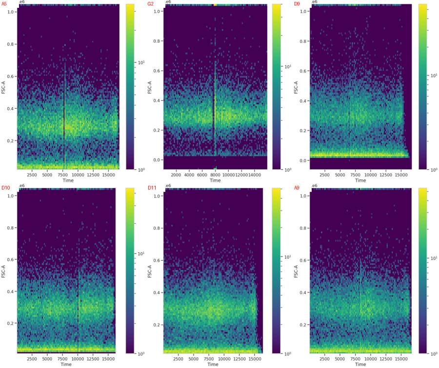
python3 /tmp/tools/pick.py time A5,G2 2 /tmp/p.png 60,40,480,765 1.0
(840, 725)
{
"file_path": "/tmp/p.png"
}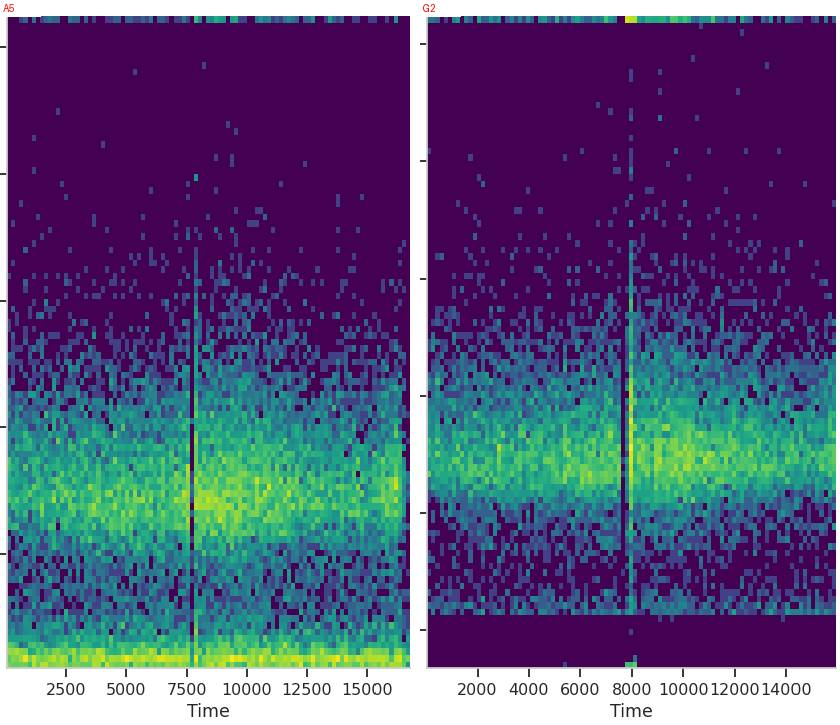
python3 /tmp/tools/montage.py time 0 30 10 /tmp/m1.png 60,40,480,700 0.24; python3 /tmp/tools/montage.py time 30 30 10 /tmp/m2.png 60,40,480,700 0.24; python3 /tmp/tools/montage.py time 60 20 10 /tmp/m3.png 60,40,480,700 0.24
{
"file_path": "/tmp/m1.png"
}(1000, 474) (1000, 474) (1000, 316)
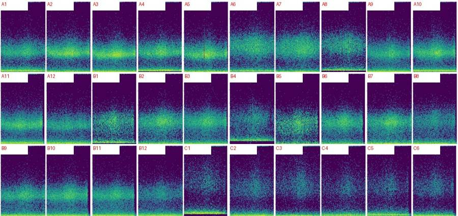
cu scroll 1180 400 up 5; cu key Home; sleep 0.5; cu screenshot /tmp/screen.png
{
"file_path": "/tmp/screen.png"
}/tmp/screen.png
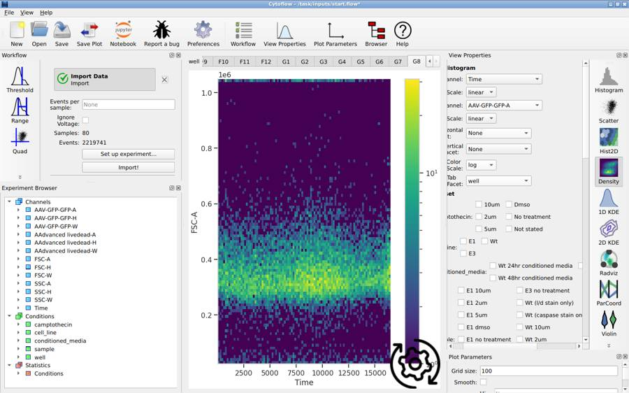
for i in 1 2 3 4 5; do cu click 1030 792; done; sleep 0.5; cu click 1153 181; sleep 0.8; cu screenshot /tmp/screen.png
{
"file_path": "/tmp/screen.png"
}/tmp/screen.png
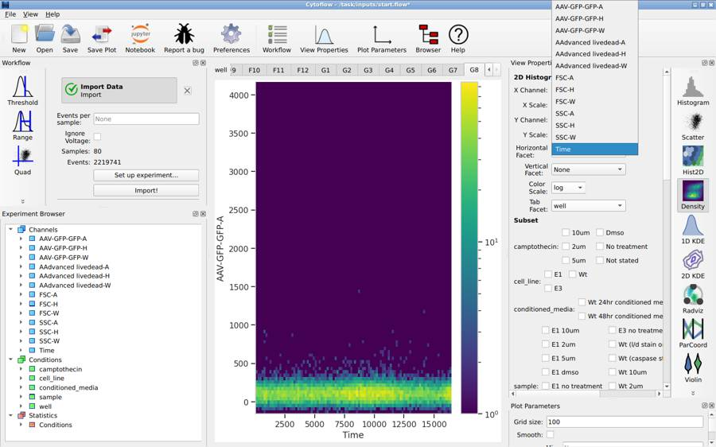
cu click 1165 13; sleep 1; cu click 1195 241; sleep 0.8; cu screenshot /tmp/screen.png
{
"file_path": "/tmp/screen.png"
}/tmp/screen.png
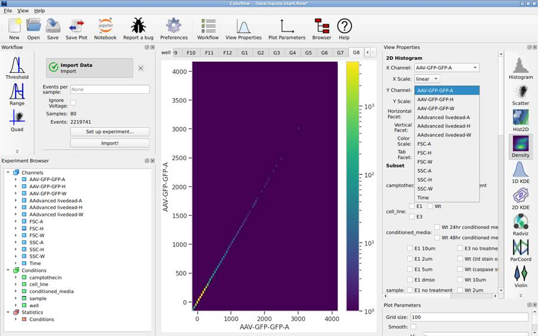
cu click 1187 314; sleep 1; cu click 1142 211; sleep 0.8; cu screenshot /tmp/screen.png
{
"file_path": "/tmp/screen.png"
}/tmp/screen.png
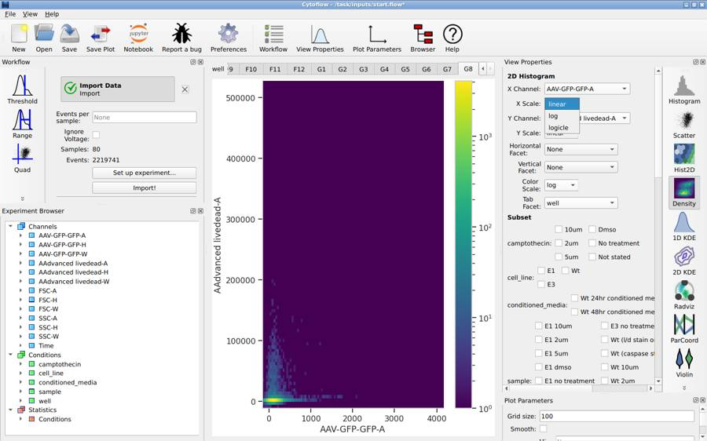
cu click 1137 260; sleep 1.5; cu click 1142 271; sleep 0.8; cu screenshot /tmp/screen.png
{
"file_path": "/tmp/screen.png"
}/tmp/screen.png
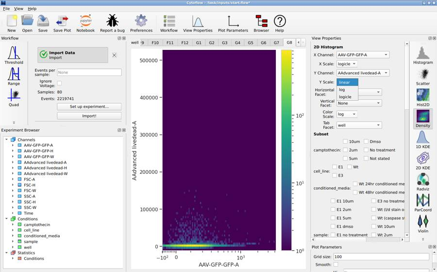
cu click 1137 320; python3 /tmp/tools/waitidle.py 60
{
"file_path": "/tmp/screen.png"
}waited 3.7s spin=0
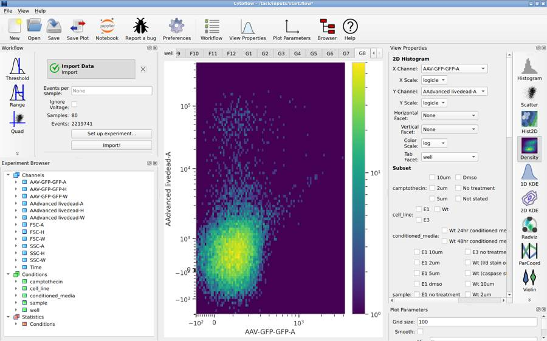
cu drag 1230 803 1230 450; sleep 1; cu screenshot /tmp/screen.png
{
"file_path": "/tmp/screen.png"
}/tmp/screen.png
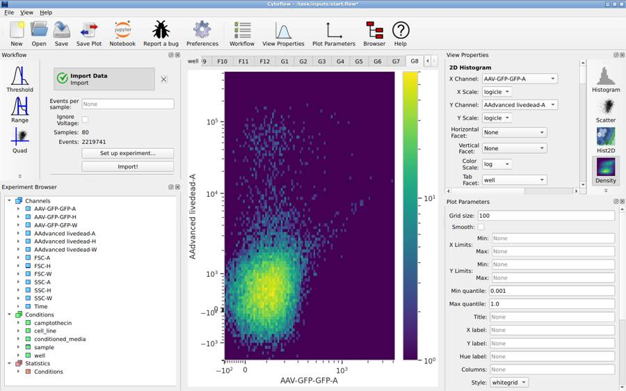
cu click 911 141; python3 /tmp/tools/waitidle.py 60; cp /tmp/screen.png /tmp/g7.png; cu click 655 141; python3 /tmp/tools/waitidle.py 60; cp /tmp/screen.png /tmp/g1.png; python3 -c "
from PIL import Image
a=Image.open('/tmp/g7.png').crop((432,147,1008,890)); b=Image.open('/tmp/g1.png').crop((432,147,1008,890))
M=Image.new('RGB',(1152,743)); M.paste(a,(0,0)); M.paste(b,(576,0)); M.save('/tmp/p.png')"{
"file_path": "/tmp/p.png"
}waited 3.7s spin=0 waited 3.7s spin=0
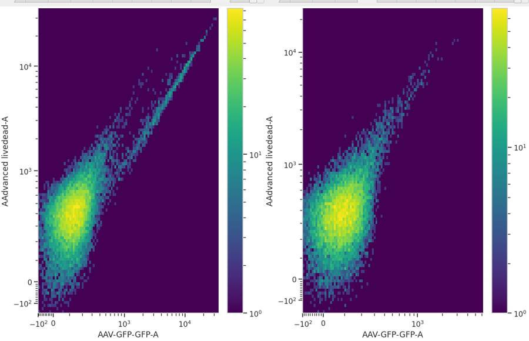
cu scroll 700 141 up 100; python3 /tmp/tools/waitidle.py 60; cp /tmp/screen.png /tmp/a1.png; cu scroll 700 141 down 3; python3 /tmp/tools/waitidle.py 60; cp /tmp/screen.png /tmp/a4.png; python3 -c "
from PIL import Image
a=Image.open('/tmp/a1.png').crop((432,125,1008,890)); b=Image.open('/tmp/a4.png').crop((432,125,1008,890))
M=Image.new('RGB',(1152,765)); M.paste(a,(0,0)); M.paste(b,(576,0)); M.save('/tmp/p.png')"{
"file_path": "/tmp/p.png"
}waited 61.3s spin=3068 waited 34.2s spin=0
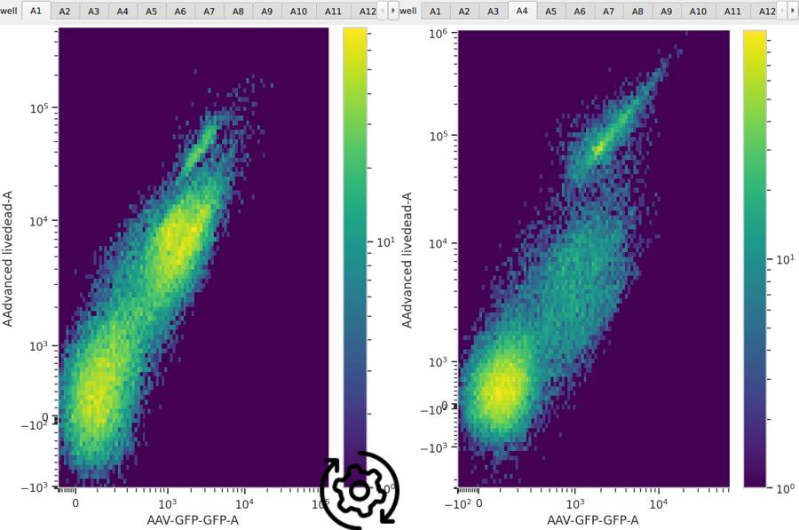
thinking
Controls look right: the unstained well is dim, the caspase-only control shows GFP spillover into the L/D channel, and the L/D-only control has a bright SYTOX population. I'm fixing the axis limits next so the caspase-vs-L/D plots are comparable across all wells.
cu click 1270 548; cu type "-500"; cu key Tab; cu click 1270 578; cu type "200000"; cu key Tab; cu click 1270 608; cu type "-3000"; cu key Tab; cu click 1270 639; cu type "1000000"; cu key Tab; python3 /tmp/tools/waitidle.py 90
{
"file_path": "/tmp/screen.png"
}waited 6.9s spin=0
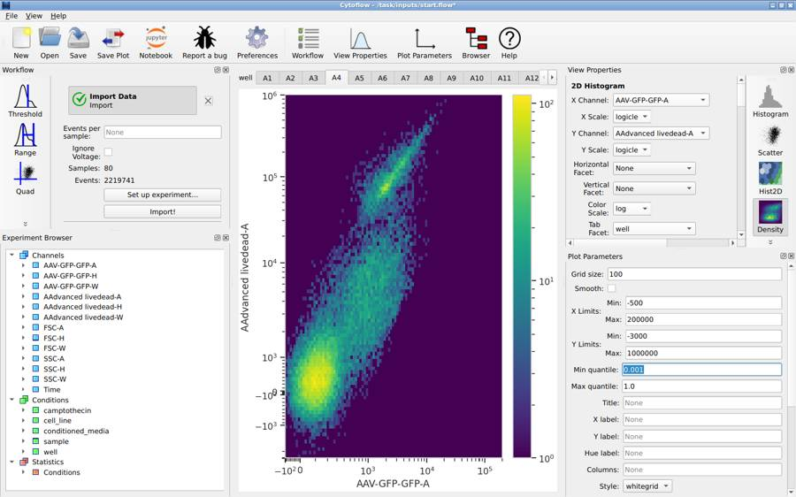
cd /tmp && timeout 900 python3 /tmp/tools/capture.py casld 80 2>&1 | tail -2; python3 /tmp/tools/montage.py casld 0 40 8 /tmp/m1.png 60,40,480,700 0.3; python3 /tmp/tools/montage.py casld 40 40 8 /tmp/m2.png 60,40,480,700 0.3
{
"file_path": "/tmp/m1.png"
}{
"file_path": "/tmp/m2.png"
}done (1008, 990) (1008, 990) Shell cwd was reset to /task
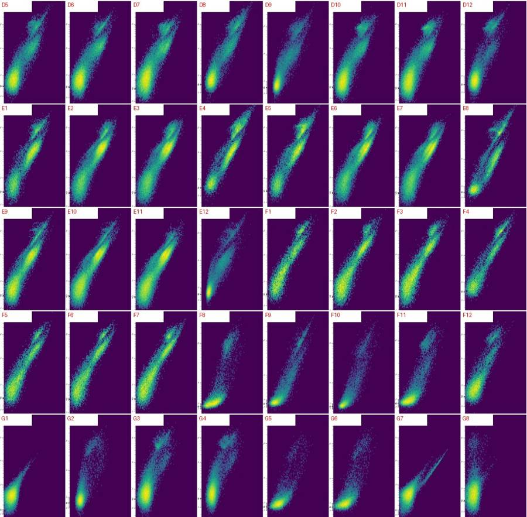
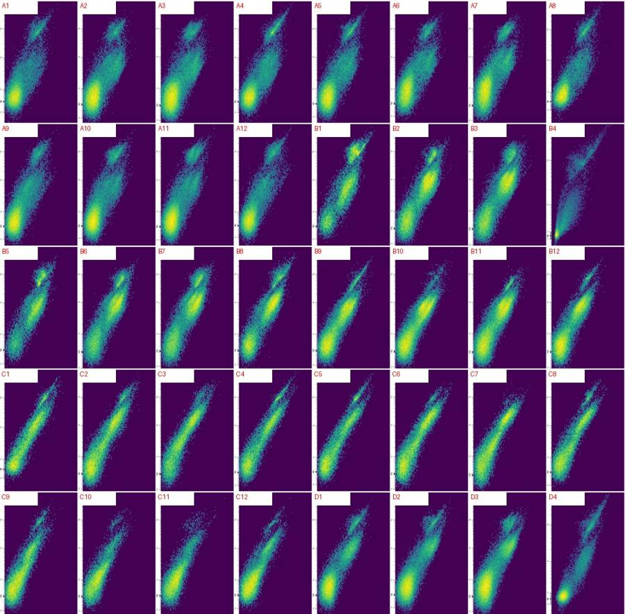
cu drag 210 417 210 760; sleep 1; cu screenshot /tmp/screen.png
{
"file_path": "/tmp/screen.png"
}/tmp/screen.png
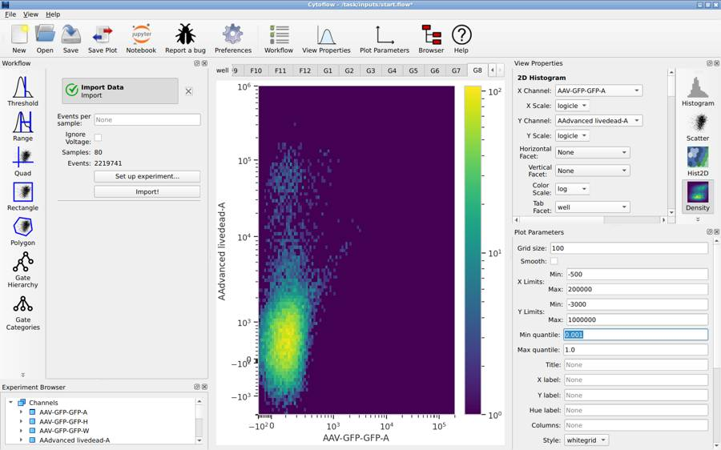
cu click 45 460; sleep 2; cu screenshot /tmp/screen.png
{
"file_path": "/tmp/screen.png"
}/tmp/screen.png
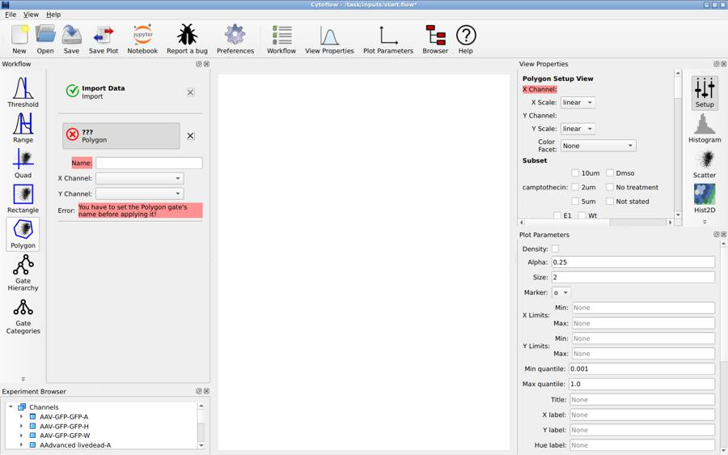
cu click 295 322; cu type "cells"; cu key Tab; sleep 0.5; cu click 276 352; sleep 0.8; cu screenshot /tmp/screen.png
{
"file_path": "/tmp/screen.png"
}/tmp/screen.png
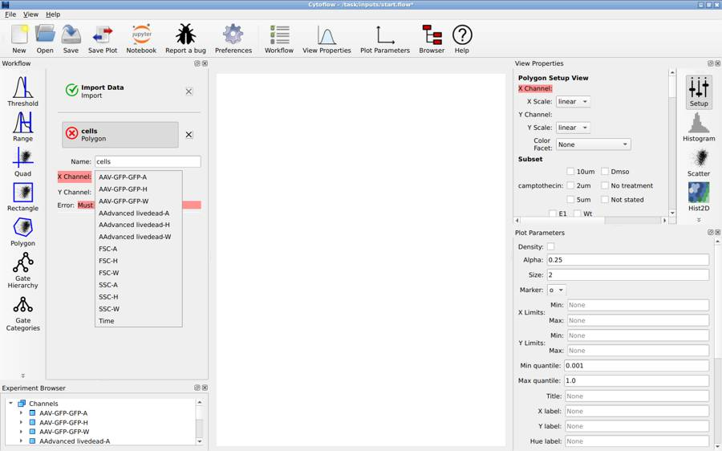
cu click 215 496; sleep 0.8; cu click 276 383; sleep 0.8; cu screenshot /tmp/screen.png
{
"file_path": "/tmp/screen.png"
}/tmp/screen.png
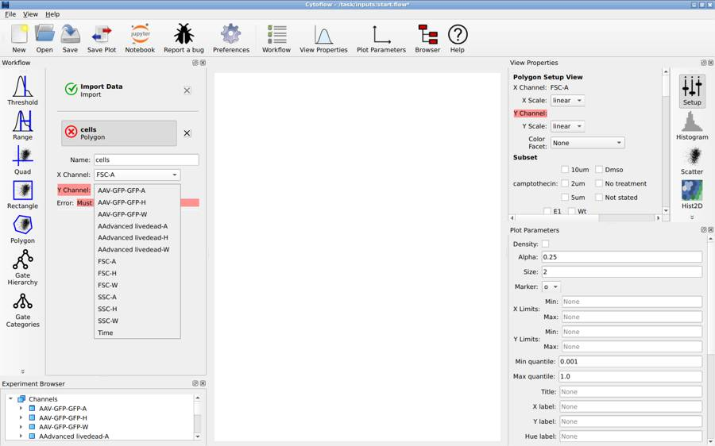
cu click 215 599; sleep 0.5; cu click 1098 492; python3 /tmp/tools/waitidle.py 120
{
"file_path": "/tmp/screen.png"
}waited 8.5s spin=0
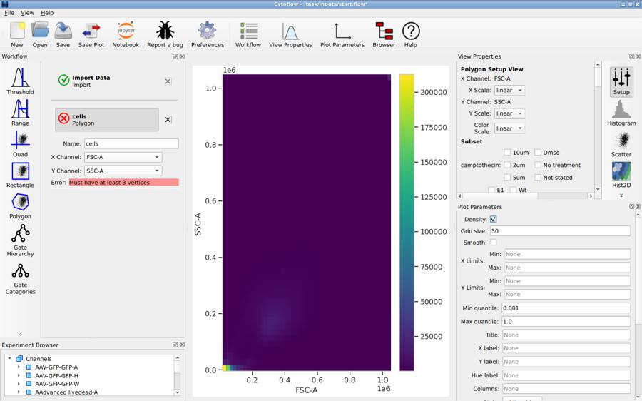
cu click 1142 288; sleep 0.6; cu screenshot /tmp/screen.png
{
"file_path": "/tmp/screen.png"
}/tmp/screen.png
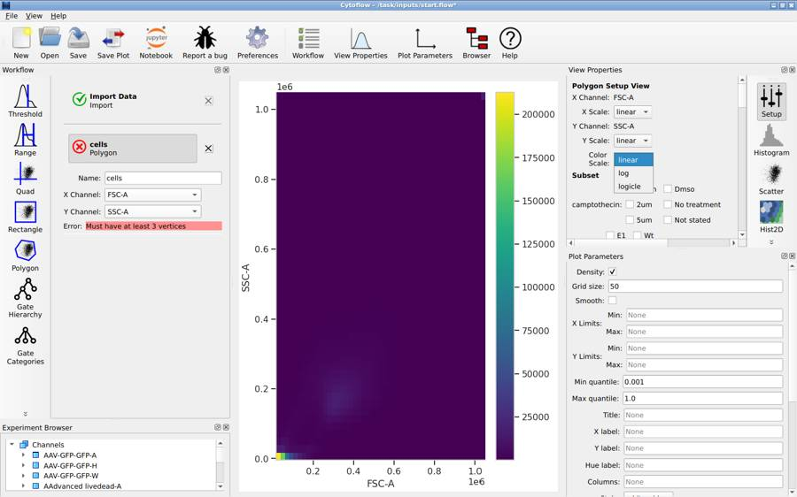
cu click 1127 313; sleep 1; cu triple 2>/dev/null; cu click 1255 518 double; cu key ctrl+a; cu type "100"; cu key Tab; python3 /tmp/tools/waitidle.py 120
{
"file_path": "/tmp/screen.png"
}# Computer-use helper: the agent's only way to act on the screen.
# cu screenshot [path] -> PNG of the screen (default /tmp/screen.png); prints path
# cu click X Y [left|right|double]
# cu move X Y | cu drag X1 Y1 X2 Y2 | cu scroll X Y up|down [N]
# cu type "text" (keystrokes) | cu paste "text" (clipboard) | cu key KEYS (e.g. ctrl+s, Return)
# cu cursor -> current mouse position
export DISPLAY=${DISPLAY:-:1}
cmd=$1; shift
waited 5.3s spin=0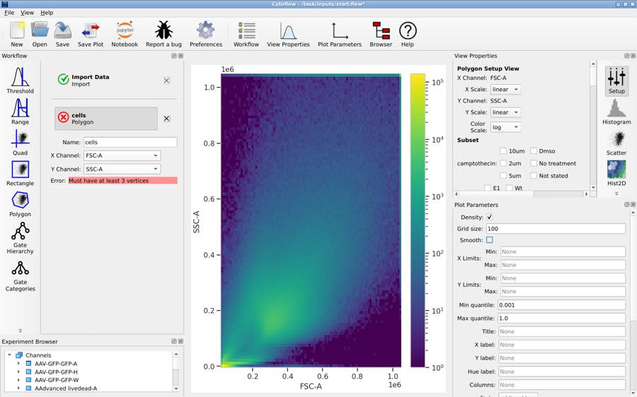
for p in "524 787" "551 809" "650 809" "789 768" "899 672" "899 178" "611 178"; do cu click $p; sleep 0.4; done; cu click 524 641 double; sleep 1; python3 /tmp/tools/waitidle.py 60
{
"file_path": "/tmp/screen.png"
}waited 3.7s spin=0
cu click 524 787 double; sleep 1; python3 /tmp/tools/waitidle.py 60
{
"file_path": "/tmp/screen.png"
}waited 5.3s spin=0
cu click 20 28; sleep 0.8; cu screenshot /tmp/screen.png
{
"file_path": "/tmp/screen.png"
}/tmp/screen.png
cu click 65 100; sleep 1.5; cu screenshot /tmp/screen.png
{
"file_path": "/tmp/screen.png"
}/tmp/screen.png
cu click 706 576; cu paste "/task/outputs/workflow.flow"; cu key Return; sleep 2; cu screenshot /tmp/screen.png; ls -la /task/outputs
{
"file_path": "/tmp/screen.png"
}/tmp/screen.png total 68 drwxrwsrwx 2 agent task 4096 Nov 6 01:02 . drwxr-xr-x 4 root root 4096 Nov 5 22:01 .. -rw-rw-r-- 1 cfapp task 60344 Nov 6 01:02 workflow.flow
cd /task/outputs; grep -n -A30 "polygon" workflow.flow | head -60
2291: current_view: &id005 !polygon-view;3 2292- current_plot: null 2293- huefacet: '' 2294- huescale: log 2295: op: &id004 !polygon;1 2296- name: cells 2297- vertices: 2298- - !!python/tuple 2299- - 78633.6339113196 2300- - 68747.21543175253 2301- - !!python/tuple 2302- - 147252.78075480246 2303- - 34173.113335363305 2304- - !!python/tuple 2305- - 397976.58652906684 2306- - 34173.113335363305 2307- - !!python/tuple 2308- - 751629.1125685554 2309- - 98382.1600858004 2310- - !!python/tuple 2311- - 1031384.095853524 2312- - 251496.04079838117 2313- - !!python/tuple 2314- - 1031384.095853524 2315- - 1031882.9166883088 2316- - !!python/tuple 2317- - 300326.26217487967 2318- - 1031882.9166883088 2319- - !!python/tuple 2320- - 78633.6339113196 2321- - 299241.22940768057 2322- - !!python/tuple 2323- - 78633.6339113196 2324- - 299241.22940768057 2325- xchannel: FSC-A -- 2329: plot_params: !polygon-params;1 2330- alpha: 0.25 2331- col_wrap: null 2332- density: true 2333- despine: true 2334- gridsize: 100 2335- huelabel: '' 2336- legend: true 2337- marker: o 2338- max_quantile: 1.0 2339- min_quantile: 0.001 2340- s: 2 2341- sharex: true 2342- sharey: true 2343- smoothed: false 2344- smoothed_sigma: 1.0 2345- sns_context: notebook 2346- sns_style: whitegrid 2347- title: '' 2348- xlabel: '' 2349- xlim: *id002 2350- ylabel: '' 2351- ylim: *id003 2352- subset_list:
cu click 45 460; sleep 2; cu click 295 408; cu type "singlets"; cu key Tab; sleep 0.5; cu screenshot /tmp/screen.png
{
"file_path": "/tmp/screen.png"
}/tmp/screen.png
cu click 1098 492; sleep 0.5; cu click 276 439; sleep 0.8; cu screenshot /tmp/screen.png
{
"file_path": "/tmp/screen.png"
}/tmp/screen.png
cu click 215 583; sleep 0.8; cu click 276 469; sleep 0.8; cu screenshot /tmp/screen.png
{
"file_path": "/tmp/screen.png"
}/tmp/screen.png
cu click 215 637; sleep 1; python3 /tmp/tools/waitidle.py 120
{
"file_path": "/tmp/screen.png"
}waited 3.7s spin=0
cu click 1142 288; sleep 0.6; cu click 1127 313; sleep 0.8; cu click 1255 518 double; cu key ctrl+a; cu type "100"; cu key Tab; sleep 1; cu scroll 1180 380 down 10; sleep 1; cu screenshot /tmp/screen.png
{
"file_path": "/tmp/screen.png"
}/tmp/screen.png
cu scroll 1180 300 down 30; sleep 1; cu screenshot /tmp/screen.png
{
"file_path": "/tmp/screen.png"
}/tmp/screen.png
cu scroll 1180 300 up 30; sleep 0.5; cu scroll 1180 300 down 3; sleep 1; cu screenshot /tmp/screen.png
{
"file_path": "/tmp/screen.png"
}/tmp/screen.png
cu click 1085 292; sleep 1; python3 /tmp/tools/waitidle.py 120
{
"file_path": "/tmp/screen.png"
}waited 3.7s spin=0
python3 -c "
from PIL import Image
im=Image.open('/tmp/screen.png').crop((530,400,910,835)); im=im.resize((760,870)); im.save('/tmp/p.png')"(Bash completed with no output)
{
"file_path": "/tmp/p.png"
}for p in "549 829" "571 817" "636 728" "745 593" "904 384" "904 160" "672 160"; do cu click $p; sleep 0.4; done; cu click 549 650; sleep 0.4; cu click 549 829 double; sleep 1; python3 /tmp/tools/waitidle.py 60
{
"file_path": "/tmp/screen.png"
}waited 5.3s spin=0
cu click 45 460; sleep 2; cu screenshot /tmp/screen.png
{
"file_path": "/tmp/screen.png"
}/tmp/screen.png
cu click 295 495; cu type "live"; cu key Tab; sleep 0.5; cu click 1098 492; sleep 0.5; cu click 1085 292; sleep 0.5; cu click 276 525; sleep 0.8; cu screenshot /tmp/screen.png
{
"file_path": "/tmp/screen.png"
}/tmp/screen.png
cu click 245 526; sleep 0.8; cu click 276 555; sleep 0.8; cu screenshot /tmp/screen.png
{
"file_path": "/tmp/screen.png"
}/tmp/screen.png
cu click 267 628; sleep 1.5; cu scroll 1180 300 up 20; sleep 0.8; cu screenshot /tmp/screen.png
{
"file_path": "/tmp/screen.png"
}/tmp/screen.png
cu click 1142 202; sleep 0.6; cu click 1137 250; sleep 1.5; cu click 1142 254; sleep 0.6; cu click 1137 302; sleep 1.5; cu click 1142 288; sleep 0.6; cu click 1127 313; sleep 1; cu click 1255 518 double; cu key ctrl+a; cu type "100"; cu key Tab; python3 /tmp/tools/waitidle.py 60
{
"file_path": "/tmp/screen.png"
}waited 6.9s spin=0
thinking
Three populations are visible: live caspase−, caspase+ with dim BL2, and SYTOX-bright dead cells. I'm checking the L/D histogram for a valley so I can gate "live" as SYTOX-not-bright.
cu click 377 441; sleep 1.5; cu click 46 250; sleep 2; cu screenshot /tmp/screen.png
{
"file_path": "/tmp/screen.png"
}/tmp/screen.png
cu click 288 495; cu type "live"; cu key Tab; sleep 0.5; cu click 1085 427; sleep 0.5; cu click 1130 202; sleep 0.6; cu screenshot /tmp/screen.png
{
"file_path": "/tmp/screen.png"
}/tmp/screen.png
cu click 1124 252; sleep 0.8; cu scroll 1180 300 down 2; sleep 0.8; cu screenshot /tmp/screen.png
{
"file_path": "/tmp/screen.png"
}/tmp/screen.png
cu scroll 1180 300 down 8; sleep 0.8; cu screenshot /tmp/screen.png
{
"file_path": "/tmp/screen.png"
}/tmp/screen.png
cu scroll 1180 300 up 1; sleep 0.8; cu screenshot /tmp/screen.png
{
"file_path": "/tmp/screen.png"
}/tmp/screen.png
cu click 1106 196; sleep 0.5; cu click 264 525; sleep 0.8; cu screenshot /tmp/screen.png
{
"file_path": "/tmp/screen.png"
}/tmp/screen.png
cu click 255 598; sleep 1; python3 /tmp/tools/waitidle.py 120
{
"file_path": "/tmp/screen.png"
}waited 3.7s spin=0
thinking
The L/D histogram shows three peaks (live, caspase-positive, and SYTOX-bright dead), with the dead/non-dead valley near 3.5×10^4, so I'm setting live as L/D ≤ 35,000.
cu click 288 555; cu key ctrl+a; cu type "-100000"; cu key Tab; sleep 0.5; cu click 288 585; cu key ctrl+a; cu type "35000"; cu key Tab; sleep 1; python3 /tmp/tools/waitidle.py 120
{
"file_path": "/tmp/screen.png"
}waited 5.3s spin=0
cu click 46 180; sleep 2; cu screenshot /tmp/screen.png
{
"file_path": "/tmp/screen.png"
}/tmp/screen.png
cu click 293 581; cu type "caspase_pos"; cu key Tab; sleep 0.5; cu click 1106 240; sleep 0.5; cu scroll 1180 300 up 5; sleep 0.6; cu screenshot /tmp/screen.png
{
"file_path": "/tmp/screen.png"
}/tmp/screen.png
cu click 1085 199; sleep 0.4; cu click 1080 277; sleep 0.4; cu click 274 612; sleep 0.8; cu screenshot /tmp/screen.png
{
"file_path": "/tmp/screen.png"
}/tmp/screen.png
cu click 243 600; sleep 1; cu scroll 1180 300 up 20; sleep 0.6; cu screenshot /tmp/screen.png
{
"file_path": "/tmp/screen.png"
}/tmp/screen.png
cu click 1140 224; sleep 0.6; cu click 1124 272; sleep 1; python3 /tmp/tools/waitidle.py 60
{
"file_path": "/tmp/screen.png"
}waited 3.7s spin=0
cu click 293 642; cu key ctrl+a; cu type "650"; cu key Tab; sleep 1; python3 /tmp/tools/waitidle.py 60
{
"file_path": "/tmp/screen.png"
}waited 5.3s spin=0
cu key ctrl+s; sleep 2; ls -la /task/outputs; grep -n "name: \|threshold:\|high:\|low:" /task/outputs/workflow.flow | grep -v "^.*sample" | head -30
total 128 drwxrwsrwx 2 agent task 4096 Nov 6 01:02 . drwxr-xr-x 4 root root 4096 Nov 5 22:01 .. -rw-rw-r-- 1 cfapp task 119720 Nov 6 01:08 workflow.flow 28: name: null 44: name: null 56: name: null 83: name: null 188: name: null 302: name: camptothecin 312: name: cell_line 319: name: conditioned_media 348: name: well 439: fcs_name: AAV-GFP-GFP-A 444: fcs_name: AAV-GFP-GFP-H 449: fcs_name: AAV-GFP-GFP-W 454: fcs_name: AAdvanced livedead-A 459: fcs_name: AAdvanced livedead-H 464: fcs_name: AAdvanced livedead-W 469: fcs_name: FSC-A 474: fcs_name: FSC-H 479: fcs_name: FSC-W 484: fcs_name: SSC-A 489: fcs_name: SSC-H 494: fcs_name: SSC-W 499: fcs_name: Time 1706: name: camptothecin 1716: name: cell_line 1723: name: conditioned_media 1752: name: well 1875: name: camptothecin 1885: name: cell_line 1892: name: conditioned_media 1921: name: well
cu click 45 748; sleep 1; cu screenshot /tmp/screen.png
{
"file_path": "/tmp/screen.png"
}/tmp/screen.png
cu click 130 185; sleep 2; cu screenshot /tmp/screen.png
{
"file_path": "/tmp/screen.png"
}/tmp/screen.png
cu click 45 748; sleep 1; cu screenshot /tmp/screen.png
{
"file_path": "/tmp/screen.png"
}/tmp/screen.png
cu drag 210 760 210 880; sleep 1; cu scroll 250 500 down 10; sleep 0.8; cu screenshot /tmp/screen.png
{
"file_path": "/tmp/screen.png"
}/tmp/screen.png
cu click 290 480; cu type "counts"; cu key Tab; sleep 0.5; cu click 255 541; sleep 0.8; cu screenshot /tmp/screen.png
{
"file_path": "/tmp/screen.png"
}/tmp/screen.png
cu click 205 542; sleep 0.8; cu drag 420 500 620 500; sleep 1; cu screenshot /tmp/screen.png
{
"file_path": "/tmp/screen.png"
}/tmp/screen.png
for p in "185 598" "185 654" "405 570" "405 626" "405 654"; do cu click $p; sleep 0.6; done; python3 /tmp/tools/waitidle.py 300
{
"file_path": "/tmp/screen.png"
}waited 5.3s spin=0
cu key ctrl+s; sleep 1.5; cu click 1393 438; sleep 1; cu screenshot /tmp/screen.png
{
"file_path": "/tmp/screen.png"
}/tmp/screen.png
cu click 1403 190; sleep 2; cu screenshot /tmp/screen.png
{
"file_path": "/tmp/screen.png"
}/tmp/screen.png
cu click 1393 438; sleep 1; cu screenshot /tmp/screen.png
{
"file_path": "/tmp/screen.png"
}/tmp/screen.png
cu click 1142 181; sleep 0.8; cu screenshot /tmp/screen.png
{
"file_path": "/tmp/screen.png"
}/tmp/screen.png
cu click 1125 206; sleep 1.5; cu screenshot /tmp/screen.png
{
"file_path": "/tmp/screen.png"
}/tmp/screen.png
mkdir -p /task/outputs/cytoflow_exports; cu click 1142 211; sleep 1.5; cu screenshot /tmp/screen.png
{
"file_path": "/tmp/screen.png"
}/tmp/screen.png
cu click 706 567; cu paste "/task/outputs/cytoflow_exports/counts_stat_v1.csv"; cu key Return; sleep 3; ls -la /task/outputs/cytoflow_exports; head -20 /task/outputs/cytoflow_exports/*.csv; wc -l /task/outputs/cytoflow_exports/*.csv
Exit code 1 total 8 drwxr-sr-x 2 root task 4096 Nov 6 01:09 . drwxrwsrwx 3 agent task 4096 Nov 6 01:09 .. head: cannot open '/task/outputs/cytoflow_exports/*.csv' for reading: No such file or directory wc: '/task/outputs/cytoflow_exports/*.csv': No such file or directory
chmod 777 /task/outputs/cytoflow_exports; cu screenshot /tmp/screen.png
/tmp/screen.png
{
"file_path": "/tmp/screen.png"
}cu click 950 468; sleep 1; cu click 1142 211; sleep 1.5; cu click 706 567; cu paste "/task/outputs/cytoflow_exports/counts_stat_v1.csv"; cu key Return; sleep 3; ls -la /task/outputs/cytoflow_exports; head -12 /task/outputs/cytoflow_exports/*.csv; wc -l /task/outputs/cytoflow_exports/*.csv
total 28 drwxrwsrwx 2 root task 4096 Nov 6 01:10 . drwxrwsrwx 3 agent task 4096 Nov 6 01:09 .. -rw-rw-r-- 1 cfapp task 19331 Nov 6 01:10 counts_stat_v1.csv caspase_pos,cells,live,singlets,well,FSC-A 0,0,0,0,A1,5.0 0,0,0,0,A12,2.0 0,0,0,0,A2,2.0 0,0,0,0,A4,3.0 0,0,0,0,A5,1.0 0,0,0,0,A6,14.0 0,0,0,0,A7,4.0 0,0,0,0,A8,9.0 0,0,0,0,A9,3.0 0,0,0,0,B4,1.0 0,0,0,0,B7,1.0 1114 /task/outputs/cytoflow_exports/counts_stat_v1.csv
cd /task/outputs; python3 -c "
import pandas as pd
d=pd.read_csv('cytoflow_exports/counts_stat_v1.csv')
d.columns=['cas','cells','live','sing','well','n']
print(d.groupby(['cells','sing','live','cas']).n.sum())
print(d.n.sum())
"cells sing live cas
0 0 0 0 163.0
1 26869.0
1 0 407989.0
1 24237.0
1 0 0 191.0
1 8298.0
1 0 250800.0
1 23986.0
1 0 0 0 193.0
1 37759.0
1 0 39483.0
1 106445.0
1 0 0 2260.0
1 135322.0
1 0 743873.0
1 411873.0
Name: n, dtype: float64
2219741.0mkdir -p /task/outputs/scripts; cat > /task/outputs/scripts/derive_counts.py <<'EOF'
import pandas as pd, sys
src=sys.argv[1]
lay=pd.read_csv('/task/inputs/plate_layout.csv')
d=pd.read_csv(src)
d.columns=['cas','cells','live','sing','well','n']
for c in ['cas','cells','live','sing']: d[c]=d[c].astype(int)
rows=[]
for w,g in d.groupby('well'):
tot=g.n.sum()
cells=g[g.cells==1].n.sum()
sing=g[(g.cells==1)&(g.sing==1)].n.sum()
live=g[(g.cells==1)&(g.sing==1)&(g.live==1)].n.sum()
cas=g[(g.cells==1)&(g.sing==1)&(g.live==1)&(g.cas==1)].n.sum()
rows.append(dict(well=w,all_events=int(tot),cells=int(cells),singlets=int(sing),live=int(live),caspase_pos=int(cas)))
t=pd.DataFrame(rows)
t=lay[['file','well','sample','cell_line','camptothecin','conditioned_media']].merge(t,on='well',how='left')
t['pct_cells']=100*t.cells/t.all_events
t['pct_sing']=100*t.singlets/t.cells
t['pct_live']=100*t.live/t.singlets
t['pct_cas']=100*t.caspase_pos/t.live
print(t.drop(columns=['file','sample']).round(1).to_string())
t.to_csv(sys.argv[2],index=False)
EOF
python3 /task/outputs/scripts/derive_counts.py /task/outputs/cytoflow_exports/counts_stat_v1.csv /tmp/wide_v1.csvwell cell_line camptothecin conditioned_media all_events cells singlets live caspase_pos pct_cells pct_sing pct_live pct_cas 0 A1 WT 10uM WT 24hr conditioned media 31328 20489 18290 16299 3105 65.4 89.3 89.1 19.1 1 A2 WT 5uM WT 24hr conditioned media 40169 28460 25052 23075 5104 70.9 88.0 92.1 22.1 2 A3 WT 2uM WT 24hr conditioned media 47337 31447 27858 25438 5796 66.4 88.6 91.3 22.8 3 A4 WT DMSO WT 24hr conditioned media 33079 23544 20902 18407 5409 71.2 88.8 88.1 29.4 4 A5 WT 10uM WT 48hr conditioned media 34963 24788 22024 19906 4735 70.9 88.8 90.4 23.8 5 A6 WT 5uM WT 48hr conditioned media 33431 24921 22561 20677 4559 74.5 90.5 91.6 22.0 6 A7 WT 2uM WT 48hr conditioned media 36445 27424 24916 22592 4746 75.2 90.9 90.7 21.0 7 A8 WT DMSO WT 48hr conditioned media 22867 16984 15408 13565 3157 74.3 90.7 88.0 23.3 8 A9 WT 10uM no conditioned media 40034 24401 21401 19280 3891 61.0 87.7 90.1 20.2 9 A10 WT 5uM no conditioned media 42298 28657 25570 22680 4125 67.8 89.2 88.7 18.2 10 A11 WT 2uM no conditioned media 43376 28537 25609 22506 4415 65.8 89.7 87.9 19.6 11 A12 WT DMSO no conditioned media 30724 19239 16735 14533 3056 62.6 87.0 86.8 21.0 12 B1 E1 10uM WT 24hr conditioned media 18757 14191 12473 8893 6109 75.7 87.9 71.3 68.7 13 B2 E1 5uM WT 24hr conditioned media 32477 23021 20273 17553 12224 70.9 88.1 86.6 69.6 14 B3 E1 2uM WT 24hr conditioned media 40067 27036 23618 20102 15054 67.5 87.4 85.1 74.9 15 B4 E1 DMSO WT 24hr conditioned media 19965 13663 11721 8921 6122 68.4 85.8 76.1 68.6 16 B5 E1 10uM WT 48hr conditioned media 17852 14121 12660 9893 6922 79.1 89.7 78.1 70.0 17 B6 E1 5uM WT 48hr conditioned media 31705 22742 20007 17168 12116 71.7 88.0 85.8 70.6 18 B7 E1 2uM WT 48hr conditioned media 35417 24362 21693 18076 13258 68.8 89.0 83.3 73.3 19 B8 E1 DMSO WT 48hr conditioned media 26222 17159 14458 12430 9063 65.4 84.3 86.0 72.9 20 B9 E1 10uM no conditioned media 34411 22171 19313 18196 9839 64.4 87.1 94.2 54.1 21 B10 E1 5uM no conditioned media 40098 25768 22376 21618 11824 64.3 86.8 96.6 54.7 22 B11 E1 2uM no conditioned media 41005 24584 21539 20474 12748 60.0 87.6 95.1 62.3 23 B12 E1 DMSO no conditioned media 31680 16248 13448 12542 7326 51.3 82.8 93.3 58.4 24 C1 E3 10uM WT 24hr conditioned media 17681 10514 7836 6794 3421 59.5 74.5 86.7 50.4 25 C2 E3 5uM WT 24hr conditioned media 25455 12911 9689 8711 4581 50.7 75.0 89.9 52.6 26 C3 E3 2uM WT 24hr conditioned media 21098 12478 9844 8941 3904 59.1 78.9 90.8 43.7 27 C4 E3 DMSO WT 24hr conditioned media 18113 9751 6952 6140 3105 53.8 71.3 88.3 50.6 28 C5 E3 10uM WT 48hr conditioned media 18729 9743 7006 6296 2680 52.0 71.9 89.9 42.6 29 C6 E3 5uM WT 48hr conditioned media 21716 11265 8330 7744 3712 51.9 73.9 93.0 47.9 30 C7 E3 2uM WT 48hr conditioned media 22874 12116 9481 9098 3710 53.0 78.3 96.0 40.8 31 C8 E3 DMSO WT 48hr conditioned media 18604 9994 7190 6546 2634 53.7 71.9 91.0 40.2 32 C9 E3 10uM no conditioned media 22962 13793 11214 10642 2058 60.1 81.3 94.9 19.3 33 C10 E3 5uM no conditioned media 15794 10231 8549 8265 1029 64.8 83.6 96.7 12.5 34 C11 E3 2uM no conditioned media 19854 13150 11437 11126 1317 66.2 87.0 97.3 11.8 35 C12 E3 DMSO no conditioned media 23104 13823 11463 11106 2149 59.8 82.9 96.9 19.3 36 D1 WT 10uM WT 24hr conditioned media 29965 19811 18005 16322 5565 66.1 90.9 90.7 34.1 37 D2 WT 5uM WT 24hr conditioned media 42557 29077 26143 24205 6318 68.3 89.9 92.6 26.1 38 D3 WT 2uM WT 24hr conditioned media 44711 29911 26786 24539 7145 66.9 89.6 91.6 29.1 39 D4 WT DMSO WT 24hr conditioned media 26104 17945 … [5,987 more characters not shown]
thinking
Counts match the import total of 2,219,741 events, and early results show no camptothecin dose response and higher caspase+ in both KO lines. I'm checking the gates on every well next, since D12 and F8 look like outliers.
cd /task/outputs; grep -n "AAdvanced livedead-A" -A4 workflow.flow | head; grep -n "voltage\|detector" workflow.flow | head
6: - AAdvanced livedead-A 7- - AAdvanced livedead-H 8- - AAdvanced livedead-W 9- - FSC-A 10- - FSC-H -- 434: ychannel: AAdvanced livedead-A 435- yfacet: '' 436- yscale: logicle 437- metadata: 442: voltage: '225' 447: voltage: '225' 452: voltage: '225' 457: voltage: '350' 462: voltage: '350' 467: voltage: '350' 472: voltage: '20' 477: voltage: '20' 482: voltage: '20' 487: voltage: '290'
cu click 250 340; sleep 1.5; cu click 1393 438; sleep 1; cu screenshot /tmp/screen.png
{
"file_path": "/tmp/screen.png"
}/tmp/screen.png
cu click 1187 180; sleep 2; cu drag 619 500 420 500; sleep 1.5; cu screenshot /tmp/screen.png
{
"file_path": "/tmp/screen.png"
}/tmp/screen.png
cu click 1195 181; sleep 0.8; cu screenshot /tmp/screen.png
{
"file_path": "/tmp/screen.png"
}/tmp/screen.png
cu click 1165 182; sleep 1; cu click 1195 241; sleep 0.8; cu screenshot /tmp/screen.png
{
"file_path": "/tmp/screen.png"
}/tmp/screen.png
cu click 1187 314; sleep 1; cu click 1142 211; sleep 0.6; cu click 1137 260; sleep 1.2; cu click 1142 271; sleep 0.6; cu click 1137 320; sleep 1.2; cu click 1142 377; sleep 0.6; cu screenshot /tmp/screen.png
{
"file_path": "/tmp/screen.png"
}/tmp/screen.png
cu click 1127 402; sleep 1.5; cu click 1182 414; sleep 0.8; cu screenshot /tmp/screen.png
{
"file_path": "/tmp/screen.png"
}/tmp/screen.png
cu click 1130 390; sleep 2; cu scroll 1180 300 down 3; sleep 0.8; cu screenshot /tmp/screen.png
{
"file_path": "/tmp/screen.png"
}/tmp/screen.png
python3 /tmp/tools/waitidle.py 120 >/dev/null; cu click 1270 548; cu type "-500"; cu key Tab; cu click 1270 578; cu type "200000"; cu key Tab; cu click 1270 608; cu type "-3000"; cu key Tab; cu click 1270 639; cu type "1000000"; cu key Tab; python3 /tmp/tools/waitidle.py 90; cu scroll 1180 300 down 3; sleep 1; cu screenshot /tmp/screen.png
{
"file_path": "/tmp/screen.png"
}waited 6.9s spin=0 /tmp/screen.png
cu drag 1340 170 1340 215; sleep 1; cu screenshot /tmp/screen.png
{
"file_path": "/tmp/screen.png"
}/tmp/screen.png
cu click 1085 293; python3 /tmp/tools/waitidle.py 60 >/dev/null; cu drag 1340 215 1340 300; sleep 1; cu screenshot /tmp/screen.png
{
"file_path": "/tmp/screen.png"
}/tmp/screen.png
cu drag 1340 300 1340 255; sleep 1; cu screenshot /tmp/screen.png
{
"file_path": "/tmp/screen.png"
}/tmp/screen.png
cu click 1106 342; python3 /tmp/tools/waitidle.py 60 >/dev/null; cd /tmp && timeout 1200 python3 /tmp/tools/capture.py gatechk 80 2>&1 | tail -1
done Shell cwd was reset to /task
cat > /tmp/tools/montage_gate.py <<'EOF'
import sys, glob
from PIL import Image, ImageDraw
view=sys.argv[1]; start=int(sys.argv[2]); cnt=int(sys.argv[3]); cols=int(sys.argv[4]); out=sys.argv[5]
crop=tuple(map(int,sys.argv[6].split(','))); scale=float(sys.argv[7])
xl=int(sys.argv[8]); yl=int(sys.argv[9])
files=sorted(glob.glob(f'/tmp/tiles/{view}_*.png'))[start:start+cnt]
ims=[]
for f in files:
im=Image.open(f).convert('RGB'); d=ImageDraw.Draw(im)
d.line((xl,0,xl,im.height),fill='red',width=2); d.line((0,yl,im.width,yl),fill='white',width=2)
im=im.crop(crop); im=im.resize((int(im.width*scale),int(im.height*scale)))
d=ImageDraw.Draw(im); w=f.split('_')[-1][:-4]
d.rectangle((0,0,38,15),fill='white'); d.text((2,2),w,fill='red'); ims.append(im)
W,H=ims[0].size; rows=(len(ims)+cols-1)//cols
M=Image.new('RGB',(W*cols,H*rows),'white')
for k,im in enumerate(ims): M.paste(im,((k%cols)*W,(k//cols)*H))
M.save(out); print(M.size)
EOF
python3 /tmp/tools/montage_gate.py gatechk 0 1 1 /tmp/p.png 0,0,576,765 1.0 216 268(576, 765)
{
"file_path": "/tmp/p.png"
}for i in 0 1 2 3; do python3 /tmp/tools/montage_gate.py gatechk $((i*20)) 20 5 /tmp/g$i.png 80,40,480,705 0.5 214 266; done
{
"file_path": "/tmp/g0.png"
}{
"file_path": "/tmp/g1.png"
}{
"file_path": "/tmp/g2.png"
}(1000, 1328) (1000, 1328) (1000, 1328) (1000, 1328)
{
"file_path": "/tmp/g3.png"
}python3 /tmp/tools/pick.py time B4,D4,D8,D9,D12,E4,E8,E12,F8,F9,F10,F11,G5,G6,A1,G2 8 /tmp/p.png 60,40,480,700 0.29; python3 /tmp/tools/pick.py fscssc B4,D4,D8,D9,D12,E4,E8,E12,F8,F9,F10,F11,G5,G6,A1,G2 8 /tmp/p2.png 60,40,480,700 0.29
{
"file_path": "/tmp/p.png"
}(968, 382) (968, 382)
{
"file_path": "/tmp/p2.png"
}python3 /tmp/tools/pick.py fscssc F1,F2,F3,F4,F5,F6,F7,F8,F9,F10,F11,F12,G1,G2,G3,G4,G5,G6,G7,G8,C9,C10,C11,C12 8 /tmp/p2.png 60,40,480,700 0.29
(968, 573)
{
"file_path": "/tmp/p2.png"
}for i in 0 1 2 3 4; do python3 /tmp/tools/montage.py time $((i*16)) 16 8 /tmp/t$i.png 60,40,480,700 0.29 >/dev/null; done; python3 -c "
from PIL import Image
ims=[Image.open(f'/tmp/t{i}.png') for i in range(5)]
W=max(i.width for i in ims); H=sum(i.height for i in ims[:2])
M=Image.new('RGB',(W,H),'white'); y=0
for im in ims[:2]: M.paste(im,(0,y)); y+=im.height
M.save('/tmp/ta.png')
H=sum(i.height for i in ims[2:]); M=Image.new('RGB',(W,H),'white'); y=0
for im in ims[2:]: M.paste(im,(0,y)); y+=im.height
M.save('/tmp/tb.png')"{
"file_path": "/tmp/ta.png"
}{
"file_path": "/tmp/tb.png"
}(Bash completed with no output)
python3 /tmp/tools/pick.py time D11,B10,D9,D10 4 /tmp/p.png 60,40,480,765 0.6
(1008, 435)
{
"file_path": "/tmp/p.png"
}thinking
QC found F8 is likely a mislabeled no-CM sample, D12 is a low outlier, and A5, D10, G2, D9 and D11 show flow or cell-loss problems; BL1 is caspase and BL2 is SYTOX. I'm adding a dead gate and a stricter caspase_bright gate for a sensitivity check, then re-exporting.
cu click 250 525; sleep 1.5; cu click 46 250; sleep 2; cu screenshot /tmp/screen.png
{
"file_path": "/tmp/screen.png"
}/tmp/screen.png
cu click 280 754; cu type "dead"; cu key Tab; sleep 0.5; cu click 262 784; sleep 0.8; cu screenshot /tmp/screen.png
{
"file_path": "/tmp/screen.png"
}/tmp/screen.png
cu key Escape; sleep 0.5; cu click 363 700; sleep 1.5; cu screenshot /tmp/screen.png
{
"file_path": "/tmp/screen.png"
}/tmp/screen.png
cu key ctrl+s; sleep 1.5; cp /tmp/wide_v1.csv /task/outputs/cytoflow_exports/ 2>/dev/null; python3 /tmp/tools/pick.py gatechk G7,G8,G1,G2 4 /tmp/p.png 0,40,576,765 0.6
{
"file_path": "/tmp/p.png"
}(1380, 435)
cu click 250 528; sleep 1.5; cu screenshot /tmp/screen.png
{
"file_path": "/tmp/screen.png"
}/tmp/screen.png
cu click 293 642; cu key ctrl+a; cu type "500"; cu key Tab; python3 /tmp/tools/waitidle.py 120 >/dev/null; cu click 250 705; python3 /tmp/tools/waitidle.py 120;
{
"file_path": "/tmp/screen.png"
}waited 3.7s spin=0
cat > /tmp/tools/export.sh <<'EOF' #!/bin/bash # usage: export.sh path cu click 1142 211; sleep 2 cu click 706 567; cu paste "$1"; cu key Return; sleep 3 ls -la "$1" EOF chmod +x /tmp/tools/export.sh; /tmp/tools/export.sh /task/outputs/cytoflow_exports/counts_stat_thr500.csv; cu screenshot /tmp/screen.png >/dev/null
-rw-rw-r-- 1 cfapp task 18796 Nov 6 01:24 /task/outputs/cytoflow_exports/counts_stat_thr500.csv
cu click 250 528; python3 /tmp/tools/waitidle.py 60 >/dev/null; cu click 293 642; cu key ctrl+a; cu type "1000"; cu key Tab; python3 /tmp/tools/waitidle.py 120 >/dev/null; cu click 250 705; python3 /tmp/tools/waitidle.py 120 >/dev/null; /tmp/tools/export.sh /task/outputs/cytoflow_exports/counts_stat_thr1000.csv; cu screenshot /tmp/screen.png >/dev/null
{
"file_path": "/tmp/screen.png"
}-rw-rw-r-- 1 cfapp task 20712 Nov 6 01:25 /task/outputs/cytoflow_exports/counts_stat_thr1000.csv
cd /task/outputs; for t in 500 1000; do python3 scripts/derive_counts.py cytoflow_exports/counts_stat_thr$t.csv /tmp/wide_$t.csv > /dev/null; done; python3 -c "
import pandas as pd
a=pd.read_csv('/tmp/wide_v1.csv'); b=pd.read_csv('/tmp/wide_500.csv'); c=pd.read_csv('/tmp/wide_1000.csv')
assert (a.live==b.live).all() and (a.live==c.live).all()
a['p500']=b.pct_cas; a['p1000']=c.pct_cas
def grp(r):
if r.well[0]=='G': return r.sample
cm={'WT 24hr conditioned media':'CM24','WT 48hr conditioned media':'CM48','no conditioned media':'noCM'}[r.conditioned_media]
return r.cell_line+'_'+cm
a['g']=a.apply(grp,axis=1)
print(a.groupby('g')[['pct_cas','p500','p1000']].mean().round(1))
"pct_cas p500 p1000 g <bound method NDFrame.sample of file ... 3.7 5.4 2.4 E1_CM24 73.1 77.5 61.9 E1_CM48 73.4 77.9 62.5 E1_noCM 58.5 64.2 45.4 E3_CM24 47.6 55.7 36.4 E3_CM48 38.7 47.8 28.2 E3_noCM 17.3 23.0 10.6 WT_CM24 27.3 30.2 21.4 WT_CM48 24.4 27.2 19.2 WT_noCM 19.6 22.8 14.2
cu click 250 528; python3 /tmp/tools/waitidle.py 60 >/dev/null; cu click 293 642; cu key ctrl+a; cu type "650"; cu key Tab; python3 /tmp/tools/waitidle.py 120 >/dev/null; cu screenshot /tmp/screen.png >/dev/null; python3 -c "
from PIL import Image; Image.open('/tmp/screen.png').crop((100,500,420,670)).save('/tmp/c.png')"{
"file_path": "/tmp/c.png"
}(Bash completed with no output)
cu click 250 705; python3 /tmp/tools/waitidle.py 120 >/dev/null; /tmp/tools/export.sh /task/outputs/cytoflow_exports/counts_stat_final.csv; cu key ctrl+s; sleep 2; cu screenshot /tmp/screen.png >/dev/null; cmp /task/outputs/cytoflow_exports/counts_stat_final.csv /task/outputs/cytoflow_exports/counts_stat_v1.csv && echo IDENTICAL_TO_V1; grep -n "threshold: \|high: \|low: \|name: cells\|name: singlets\|name: live\|name: caspase_pos\|events:" /task/outputs/workflow.flow | head -20; ls -la /task/outputs
-rw-rw-r-- 1 cfapp task 19331 Nov 6 01:25 /task/outputs/cytoflow_exports/counts_stat_final.csv IDENTICAL_TO_V1 653: events: null 2296: name: cells 3539: name: singlets 3611: name: cells 4802: high: 35000.0 4803: low: -100000.0 4804: name: live 4852: name: cells 4886: name: singlets 6103: name: caspase_pos 6117: name: cells 6131: name: live 6160: name: singlets 6494: name: caspase_pos 6495: threshold: 650.0 7089: name: cells 7103: name: live 7132: name: singlets 7540: name: caspase_pos 7547: name: cells total 280 drwxrwsrwx 4 agent task 4096 Nov 6 01:10 . drwxr-xr-x 4 root root 4096 Nov 5 22:01 .. drwxrwsrwx 2 root task 4096 Nov 6 01:25 cytoflow_exports drwxr-sr-x 2 root task 4096 Nov 6 01:10 scripts -rw-rw-r-- 1 cfapp task 268062 Nov 6 01:25 workflow.flow
cd /task/outputs; grep -n "^- !workflow-item\|^ operation: \|^ name: \|^ xchannel\|^ ychannel\|^ channel:\|^ threshold\|^ high\|^ low" workflow.flow | head -40; awk '/name: singlets/{f=1} f&&/vertices/{p=1} p{print} /ychannel/{if(p){exit}}' workflow.flow | head -401:- !workflow-item;5
431: xchannel: AAV-GFP-GFP-A
434: ychannel: AAdvanced livedead-A
645: operation: !import;4
2004: xchannel: ''
2007: ychannel: ''
2011:- !workflow-item;5
2698: operation: *id004
3244:- !workflow-item;5
3950: operation: *id006
4496:- !workflow-item;5
5203: operation: *id008
5749:- !workflow-item;5
6250: xchannel: AAV-GFP-GFP-A
6253: ychannel: AAdvanced livedead-A
6492: operation: &id010 !threshold;1
6493: channel: AAV-GFP-GFP-A
6494: name: caspase_pos
6495: threshold: 650.0
7223:- !workflow-item;5
7887: operation: !channel-statistic;2
7894: channel: FSC-A
7896: name: counts
vertices:
- !!python/tuple
- 55555.74320489459
- 29619.489881220055
- !!python/tuple
- 118971.37842323049
- 40588.602712478736
- !!python/tuple
- 297688.1685839954
- 126347.12121141021
- !!python/tuple
- 600353.7003078712
- 255982.09103537642
- !!python/tuple
- 1038498.0890891012
- 455420.5061491706
- !!python/tuple
- 1038498.0890891012
- 670813.9944720683
- !!python/tuple
- 398576.6791586206
- 670813.9944720683
- !!python/tuple
- 55555.74320489459
- 201136.52687908302
xchannel: FSC-A
xscale: linear
ychannel: FSC-Hpython3 /tmp/tools/pick.py time A9,A10,A11,B9,B10,B11,B12,C7,D6,D9,D10,D11,E2,E3,E11,F2 8 /tmp/p.png 60,40,480,700 0.3
(1008, 396)
{
"file_path": "/tmp/p.png"
}cu click 250 182; python3 /tmp/tools/waitidle.py 60 >/dev/null; cu click 1393 250; sleep 2; cu screenshot /tmp/screen.png
{
"file_path": "/tmp/screen.png"
}/tmp/screen.png
cu click 1393 180; sleep 2; cu click 1218 181; sleep 0.8; cu screenshot /tmp/screen.png
{
"file_path": "/tmp/screen.png"
}/tmp/screen.png
cu click 1127 469; sleep 1.5; cu click 1258 496; cu type "160"; cu key Tab; sleep 0.5; cu click 1190 398; sleep 0.8; cu screenshot /tmp/screen.png
{
"file_path": "/tmp/screen.png"
}/tmp/screen.png

cu key Escape; sleep 0.5; cu click 1178 390; sleep 0.8; cu screenshot /tmp/screen.png
{
"file_path": "/tmp/screen.png"
}/tmp/screen.png

cu click 1128 390; sleep 1; cu screenshot /tmp/screen.png; python3 -c "
from PIL import Image; Image.open('/tmp/screen.png').crop((1025,140,1340,440)).save('/tmp/c.png')"{
"file_path": "/tmp/c.png"
}/tmp/screen.png
cu click 1178 390; sleep 0.8; cu screenshot /tmp/screen.png
{
"file_path": "/tmp/screen.png"
}/tmp/screen.png
cu click 1125 366; python3 /tmp/tools/waitidle.py 120 >/dev/null; cu screenshot /tmp/screen.png
{
"file_path": "/tmp/screen.png"
}/tmp/screen.png
cd /tmp && timeout 1200 python3 /tmp/tools/capture.py rate 80 2>&1 | tail -1; for i in 0 1 2 3; do python3 /tmp/tools/montage.py rate $((i*20)) 20 5 /tmp/r$i.png 0,30,576,765 0.33 >/dev/null; done
{
"file_path": "/tmp/r0.png"
}{
"file_path": "/tmp/r1.png"
}{
"file_path": "/tmp/r2.png"
}{
"file_path": "/tmp/r3.png"
}done Shell cwd was reset to /task
python3 /tmp/tools/pick.py rate A4,A5,A9,D9,D10,G2,E8,E12,D7 3 /tmp/p.png 0,30,576,765 0.55
(948, 1212)
{
"file_path": "/tmp/p.png"
}python3 /tmp/tools/pick.py fscssc C1,F1,B1,A3 4 /tmp/p.png 0,30,576,765 0.6; python3 -c "import scipy; print(scipy.__version__)"
{
"file_path": "/tmp/p.png"
}(1380, 441) 1.11.4
cu click 46 250; sleep 2; cu screenshot /tmp/screen.png
{
"file_path": "/tmp/screen.png"
}/tmp/screen.png
cu click 280 322; cu type "fsc_saturated"; cu key Tab; sleep 0.5; cu click 262 352; sleep 0.8; cu screenshot /tmp/screen.png
{
"file_path": "/tmp/screen.png"
}/tmp/screen.png
cu click 204 496; sleep 1; cu click 280 383; cu key ctrl+a; cu type "1040000"; cu key Tab; sleep 0.5; cu click 280 413; cu key ctrl+a; cu type "10000000"; cu key Tab; python3 /tmp/tools/waitidle.py 120 >/dev/null; cu screenshot /tmp/screen.png
{
"file_path": "/tmp/screen.png"
}/tmp/screen.png
cu click 46 250; sleep 2; cu screenshot /tmp/screen.png
{
"file_path": "/tmp/screen.png"
}/tmp/screen.png
cu click 280 409; cu type "ssc_saturated"; cu key Tab; sleep 0.5; cu click 262 439; sleep 0.8; cu screenshot /tmp/screen.png
{
"file_path": "/tmp/screen.png"
}/tmp/screen.png
cu click 204 655; sleep 1; cu click 280 469; cu key ctrl+a; cu type "1040000"; cu key Tab; sleep 0.5; cu click 280 499; cu key ctrl+a; cu type "10000000"; cu key Tab; python3 /tmp/tools/waitidle.py 120 >/dev/null; cu screenshot /tmp/screen.png
{
"file_path": "/tmp/screen.png"
}/tmp/screen.png
cu scroll 250 600 down 15; sleep 1; cu screenshot /tmp/screen.png
{
"file_path": "/tmp/screen.png"
}/tmp/screen.png
cu click 250 745; python3 /tmp/tools/waitidle.py 60 >/dev/null; cu scroll 250 600 down 15; sleep 1; cu drag 420 500 620 500; sleep 1; cu screenshot /tmp/screen.png
{
"file_path": "/tmp/screen.png"
}/tmp/screen.png
cu scroll 350 400 up 4; sleep 1; cu screenshot /tmp/screen.png
{
"file_path": "/tmp/screen.png"
}/tmp/screen.png
cu click 185 221; sleep 0.8; cu click 405 165; python3 /tmp/tools/waitidle.py 300 >/dev/null; cu scroll 350 400 up 2; sleep 1; cu screenshot /tmp/screen.png
{
"file_path": "/tmp/screen.png"
}/tmp/screen.png
sleep 3; cu key ctrl+s; sleep 2; /tmp/tools/export.sh /task/outputs/cytoflow_exports/counts_stat_final.csv; head -3 /task/outputs/cytoflow_exports/counts_stat_final.csv; wc -l /task/outputs/cytoflow_exports/counts_stat_final.csv
-rw-rw-r-- 1 cfapp task 19331 Nov 6 01:25 /task/outputs/cytoflow_exports/counts_stat_final.csv caspase_pos,cells,live,singlets,well,FSC-A 0,0,0,0,A1,5.0 0,0,0,0,A12,2.0 1114 /task/outputs/cytoflow_exports/counts_stat_final.csv
cu screenshot /tmp/screen.png
/tmp/screen.png
{
"file_path": "/tmp/screen.png"
}cu click 716 409; sleep 3; ls -la /task/outputs/cytoflow_exports/; head -3 /task/outputs/cytoflow_exports/counts_stat_final.csv; wc -l /task/outputs/cytoflow_exports/counts_stat_final.csv; cu key ctrl+s; sleep 2; ls -la /task/outputs/workflow.flow
total 132 drwxrwsrwx 2 root task 4096 Nov 6 01:25 . drwxrwsrwx 4 agent task 4096 Nov 6 01:10 .. -rw-rw-r-- 1 cfapp task 40998 Nov 6 01:36 counts_stat_final.csv -rw-rw-r-- 1 cfapp task 20712 Nov 6 01:25 counts_stat_thr1000.csv -rw-rw-r-- 1 cfapp task 18796 Nov 6 01:24 counts_stat_thr500.csv -rw-rw-r-- 1 cfapp task 19331 Nov 6 01:10 counts_stat_v1.csv -rw-r--r-- 1 root task 14954 Nov 6 01:23 wide_v1.csv caspase_pos,cells,live,singlets,well,fsc_saturated,ssc_saturated,FSC-A 0,0,0,0,A1,0,0,5.0 0,0,0,0,A12,0,0,2.0 1978 /task/outputs/cytoflow_exports/counts_stat_final.csv -rw-rw-r-- 1 cfapp task 476817 Nov 6 01:36 /task/outputs/workflow.flow
mkdir -p /task/outputs/scripts; cat > /task/outputs/scripts/build_counts.py <<'EOF'
"""Build counts.csv from the Cytoflow 'counts' Channel Statistic export.
The Cytoflow statistic is Count of events grouped by well and by the boolean
membership of every gate in workflow.flow (fsc_saturated, ssc_saturated, cells,
singlets, live, caspase_pos). Gate hierarchy (parent) is applied here by
summing the statistic rows whose parent-gate flags are all True, i.e.
singlets = cells AND singlets-gate, live = singlets AND live-gate, etc.
"""
import pandas as pd
SRC = '/task/outputs/cytoflow_exports/counts_stat_final.csv'
lay = pd.read_csv('/task/inputs/plate_layout.csv')
d = pd.read_csv(SRC)
d = d.rename(columns={'FSC-A': 'n'})
for c in ['caspase_pos', 'cells', 'live', 'singlets', 'fsc_saturated', 'ssc_saturated']:
d[c] = d[c].astype(bool)
# population -> (role, parent, boolean mask builder)
pops = [
('all_events', 'other', 'none', lambda g: g.n.sum()),
('fsc_saturated', 'other', 'all_events', lambda g: g[g.fsc_saturated].n.sum()),
('ssc_saturated', 'other', 'all_events', lambda g: g[g.ssc_saturated].n.sum()),
('cells', 'cells', 'all_events', lambda g: g[g.cells].n.sum()),
('singlets', 'singlets', 'cells', lambda g: g[g.cells & g.singlets].n.sum()),
('live', 'live', 'singlets', lambda g: g[g.cells & g.singlets & g.live].n.sum()),
('caspase_pos', 'marker_positive', 'live', lambda g: g[g.cells & g.singlets & g.live & g.caspase_pos].n.sum()),
]
rows = []
for _, r in lay.iterrows():
g = d[d.well == r.well]
assert len(g) > 0, r.well
counts = {name: int(round(f(g))) for name, _, _, f in pops}
for name, role, parent, _ in pops:
c = counts[name]
pct = '' if parent == 'none' else round(100 * c / counts[parent], 4) if counts[parent] else ''
rows.append(dict(file=r.file, well=r.well, population=name, role=role,
parent=parent, count=c, pct_of_parent=pct))
out = pd.DataFrame(rows, columns=['file', 'well', 'population', 'role', 'parent', 'count', 'pct_of_parent'])
out.to_csv('/task/outputs/counts.csv', index=False)
print(out.shape, out.population.value_counts().to_dict())
EOF
cd /task/outputs && python3 scripts/build_counts.py && head -9 counts.csv && python3 - <<'EOF'
import pandas as pd
c=pd.read_csv('/task/outputs/counts.csv'); w=pd.read_csv('/tmp/wide_v1.csv')
p=c.pivot(index='well',columns='population',values='count')
for k in ['all_events','cells','singlets','live','caspase_pos']:
assert (p.loc[w.well,k].values==w[k].values).all(), k
print('matches v1 export')
p['fsc_pct']=100*p.fsc_saturated/p.all_events; p['ssc_pct']=100*p.ssc_saturated/p.all_events
print(p[['all_events','fsc_saturated','ssc_saturated','fsc_pct','ssc_pct']].sort_values('ssc_pct',ascending=False).round(2).head(15))
print(p[['fsc_pct','ssc_pct']].describe().round(2))
EOF(560, 7) {'all_events': 80, 'fsc_saturated': 80, 'ssc_saturated': 80, 'cells': 80, 'singlets': 80, 'live': 80, 'caspase_pos': 80}
file,well,population,role,parent,count,pct_of_parent
Caspase-assay-2-mlk_caspase_Group_A1.fcs,A1,all_events,other,none,31328,
Caspase-assay-2-mlk_caspase_Group_A1.fcs,A1,fsc_saturated,other,all_events,272,0.8682
Caspase-assay-2-mlk_caspase_Group_A1.fcs,A1,ssc_saturated,other,all_events,244,0.7789
Caspase-assay-2-mlk_caspase_Group_A1.fcs,A1,cells,cells,all_events,20489,65.4016
Caspase-assay-2-mlk_caspase_Group_A1.fcs,A1,singlets,singlets,cells,18290,89.2674
Caspase-assay-2-mlk_caspase_Group_A1.fcs,A1,live,live,singlets,16299,89.1143
Caspase-assay-2-mlk_caspase_Group_A1.fcs,A1,caspase_pos,marker_positive,live,3105,19.0502
Caspase-assay-2-mlk_caspase_Group_A2.fcs,A2,all_events,other,none,40169,
matches v1 export
population all_events fsc_saturated ssc_saturated fsc_pct ssc_pct
well
F8 13717 546 1246 3.98 9.08
G6 16761 1185 1133 7.07 6.76
G5 15961 769 992 4.82 6.22
F10 16796 821 1033 4.89 6.15
F11 18768 810 1109 4.32 5.91
C11 19854 1081 1094 5.44 5.51
F9 16566 699 902 4.22 5.44
C10 15794 602 844 3.81 5.34
F4 11834 227 537 1.92 4.54
C9 22962 786 1034 3.42 4.50
C5 18729 352 814 1.88 4.35
F12 15652 459 654 2.93 4.18
C4 18113 373 756 2.06 4.17
C6 21716 444 841 2.04 3.87
C3 21098 678 809 3.21 3.83
population fsc_pct ssc_pct
count 80.00 80.00
mean 1.52 1.93
std 1.35 2.03
min 0.19 0.09
25% 0.62 0.54
50% 1.08 0.97
75% 1.83 3.59
max 7.07 9.08cat > /task/outputs/scripts/summarise.py <<'EOF'
import pandas as pd, numpy as np, json
from scipy import stats
c = pd.read_csv('/task/outputs/counts.csv')
lay = pd.read_csv('/task/inputs/plate_layout.csv')
p = c.pivot(index='well', columns='population', values='count').reset_index()
w = lay.merge(p, on='well')
w['pct_cas'] = 100 * w.caspase_pos / w.live
w['pct_live'] = 100 * w.live / w.singlets
w['pct_cells'] = 100 * w.cells / w.all_events
w['pct_sing'] = 100 * w.singlets / w.cells
w['ssc_sat_pct'] = 100 * w.ssc_saturated / w.all_events
w['fsc_sat_pct'] = 100 * w.fsc_saturated / w.all_events
cmmap = {'WT 24hr conditioned media': 'CM24', 'WT 48hr conditioned media': 'CM48', 'no conditioned media': 'noCM'}
w['cm'] = w.conditioned_media.map(cmmap)
w['row'] = w.well.str[0]
w.to_csv('/task/outputs/cytoflow_exports/per_well_metrics.csv', index=False)
flags = pd.read_csv('/task/outputs/flags.csv') if __import__('os').path.exists('/task/outputs/flags.csv') else None
excluded = set(flags[flags.decision == 'exclude'].well) if flags is not None else {'F8'}
print('excluded', excluded)
AB = w[w.row.isin(list('ABCDEF'))]
METRIC = '% caspase-3/7+ (CellEvent, BL1 "AAV-GFP-GFP-A" > 650) of live singlets = 100 x caspase_pos / live (live = SYTOX AADvanced BL2 "AAdvanced livedead-A" < 35,000 within singlets within cells); units: % of live singlet cells'
conds = []
def add(name, wells, note='none'):
wells = [x for x in wells]
used = [x for x in wells if x not in excluded]
v = w.set_index('well').loc[used, 'pct_cas']
conds.append(dict(condition=name, wells=';'.join(used), n_wells_used=len(used),
mean=round(v.mean(), 2), sd=round(v.std(ddof=1), 2) if len(used) > 1 else '',
metric_definition=METRIC, normalisation_applied=note))
order = []
for line in ['WT', 'E1', 'E3']:
for cm in ['noCM', 'CM24', 'CM48']:
ww = AB[(AB.cell_line == line) & (AB.cm == cm)].well.tolist()
add(f'{line}_{cm}', ww)
for line in ['WT', 'E1', 'E3']:
ww = AB[(AB.cell_line == line) & (AB.cm != 'noCM')].well.tolist()
add(f'{line}_CM_any', ww)
# camptothecin dose check (pooled over the three media arms: balanced 2 wells each)
for line in ['WT', 'E1', 'E3']:
for dose in ['DMSO', '2uM', '5uM', '10uM']:
ww = AB[(AB.cell_line == line) & (AB.camptothecin == dose)].well.tolist()
add(f'{line}_allmedia_CPT_{dose}', ww)
# DMSO-only (vehicle) media comparison
for line in ['WT', 'E1', 'E3']:
for cm in ['noCM', 'CM24', 'CM48']:
ww = AB[(AB.cell_line == line) & (AB.cm == cm) & (AB.camptothecin == 'DMSO')].well.tolist()
add(f'{line}_{cm}_DMSO', ww)
add('WT_untreated_G', ['G2'])
add('E1_untreated_G', ['G5', 'G6'])
add('E3_untreated_G', ['G3', 'G4'])
add('ctrl_WT_unstained', ['G1'])
add('ctrl_WT_caspase_stain_only', ['G7'])
add('ctrl_WT_LD_stain_only', ['G8'])
cs = pd.DataFrame(conds)
cs.to_csv('/task/outputs/condition_summary.csv', index=False)
print(cs[['condition', 'wells', 'n_wells_used', 'mean', 'sd']].to_string())
# stats for comparisons (wells are technical replicates on one plate)
def vals(cond):
r = cs[cs.condition == cond].iloc[0]
return w.set_index('well').loc[r.wells.split(';'), 'pct_cas'].values
res = {}
pairs = [('E1_noCM', 'E1_CM_any'), ('E3_noCM', 'E3_CM_any'), ('WT_noCM', 'WT_CM_any'),
('WT_noCM', 'E1_noCM'), ('WT_noCM', 'E3_noCM'), ('WT_noCM', 'E1_CM_any'), ('WT_noCM', 'E3_CM_any'),
('E1_noCM', 'E1_CM24'), ('E1_noCM', 'E1_CM48'), ('E3_noCM', 'E3_CM24'), ('E3_noCM', 'E3_CM48'),
('E1_CM24', 'E1_CM48'), ('E3_CM24', 'E3_CM48'), ('WT_CM24', 'WT_CM48'),
('WT_allmedia_CPT_DMSO', 'WT_allmedia_CPT_10uM'), ('E1_allmedia_CPT_DMSO', 'E1_allmedia_CPT_10uM'),
('E3_allmedia_CPT_DMSO', 'E3_allmedia_CPT_10uM')]
for a, b in pairs:
va, vb = vals(a), vals(b)
t, pv = stats.ttest_ind(vb, va, equal_var=False)
res[f'{a}|{b}'] = dict(a_mean=va.mean(), b_mean=vb.mean(), diff=vb.mean() - va.mean(), p=pv, na=len(va), nb=len(vb))
print(f'{a:>24} -> {b:<24} {va.mean():6.1f} -> {vb.mean():6.1f} diff {vb.mean()-va.mean():+6.1f} pp Welch p={pv:.2g}')
# gap to WT
wt = vals('WT_noCM').mean()
for line in ['E1', 'E3']:
g0 = vals(f'{line}_noCM').mean() - wt; g1 = vals(f'{line}_CM_any').mean() - wt
print(line, 'gap to WT noCM: noCM %+.1f pp, CM %+.1f pp' % (g0, g1))
# 2-way within-row consistency: CM effect per row/dose pair
json.dump(res, open('/task/outputs/cytoflow_exports/comparison_stats.json', 'w'), indent=1, default=float)
EOF
cd /task/outputs && python3 scripts/summarise.pyexcluded {'F8'}
condition wells n_wells_used mean sd
0 WT_noCM A9;A10;A11;A12;D9;D10;D11;D12 8 19.58 5.04
1 WT_CM24 A1;A2;A3;A4;D1;D2;D3;D4 8 27.26 5.81
2 WT_CM48 A5;A6;A7;A8;D5;D6;D7;D8 8 24.40 3.01
3 E1_noCM B9;B10;B11;B12;E9;E10;E11;E12 8 58.47 4.95
4 E1_CM24 B1;B2;B3;B4;E1;E2;E3;E4 8 73.12 4.11
5 E1_CM48 B5;B6;B7;B8;E5;E6;E7;E8 8 73.39 2.36
6 E3_noCM C9;C10;C11;C12;F9;F10;F11;F12 8 17.26 5.6
7 E3_CM24 C1;C2;C3;C4;F1;F2;F3;F4 8 47.56 4.64
8 E3_CM48 C5;C6;C7;C8;F5;F6;F7 7 42.96 2.95
9 WT_CM_any A1;A2;A3;A4;A5;A6;A7;A8;D1;D2;D3;D4;D5;D6;D7;D8 16 25.83 4.71
10 E1_CM_any B1;B2;B3;B4;B5;B6;B7;B8;E1;E2;E3;E4;E5;E6;E7;E8 16 73.25 3.24
11 E3_CM_any C1;C2;C3;C4;C5;C6;C7;C8;F1;F2;F3;F4;F5;F6;F7 15 45.41 4.49
12 WT_allmedia_CPT_DMSO A4;A8;A12;D4;D8;D12 6 24.82 9.39
13 WT_allmedia_CPT_2uM A3;A7;A11;D3;D7;D11 6 22.81 3.42
14 WT_allmedia_CPT_5uM A2;A6;A10;D2;D6;D10 6 22.39 2.81
15 WT_allmedia_CPT_10uM A1;A5;A9;D1;D5;D9 6 24.98 5.43
16 E1_allmedia_CPT_DMSO B4;B8;B12;E4;E8;E12 6 67.66 10.47
17 E1_allmedia_CPT_2uM B3;B7;B11;E3;E7;E11 6 71.87 6.0
18 E1_allmedia_CPT_5uM B2;B6;B10;E2;E6;E10 6 67.45 8.99
19 E1_allmedia_CPT_10uM B1;B5;B9;E1;E5;E9 6 66.32 7.15
20 E3_allmedia_CPT_DMSO C4;C8;C12;F4;F12 5 34.58 17.11
21 E3_allmedia_CPT_2uM C3;C7;C11;F3;F7;F11 6 32.25 15.29
22 E3_allmedia_CPT_5uM C2;C6;C10;F2;F6;F10 6 38.41 17.53
23 E3_allmedia_CPT_10uM C1;C5;C9;F1;F5;F9 6 37.07 11.2
24 WT_noCM_DMSO A12;D12 2 14.96 8.58
25 WT_CM24_DMSO A4;D4 2 32.41 4.28
26 WT_CM48_DMSO A8;D8 2 27.09 5.4
27 E1_noCM_DMSO B12;E12 2 55.12 4.65
28 E1_CM24_DMSO B4;E4 2 73.68 7.14
29 E1_CM48_DMSO B8;E8 2 74.19 1.8
30 E3_noCM_DMSO C12;F12 2 16.48 4.05
31 E3_CM24_DMSO C4;F4 2 49.85 1.01
32 E3_CM48_DMSO C8 1 40.24
33 WT_untreated_G G2 1 3.64
34 E1_untreated_G G5;G6 2 5.04 0.36
35 E3_untreated_G G3;G4 2 5.68 0.16
36 ctrl_WT_unstained G1 1 0.12
37 ctrl_WT_caspase_stain_only G7 1 4.18
38 ctrl_WT_LD_stain_only G8 1 0.16
E1_noCM -> E1_CM_any 58.5 -> 73.3 diff +14.8 pp Welch p=1.6e-05
E3_noCM -> E3_CM_any 17.3 -> 45.4 diff +28.2 pp Welch p=4e-08
WT_noCM -> WT_CM_any 19.6 -> 25.8 diff +6.3 pp Welch p=0.012
WT_noCM -> E1_noCM 19.6 -> 58.5 diff +38.9 pp Welch p=3.1e-10
WT_noCM -> E3_noCM 19.6 -> 17.3 diff -2.3 pp Welch p=0.4
WT_noCM -> E1_CM_any 19.6 -> 73.3 diff +53.7 pp Welch p=9.7e-11
WT_noCM -> E3_CM_any 19.6 -> 45.4 diff +25.8 pp Welch p=1.8e-08
E1_noCM -> E1_CM24 58.5 -> 73.1 diff +14.7 pp Welch p=1.8e-05
E1_noCM -> E1_CM48 58.5 -> 73.4 diff +14.9 pp Welch p=1.6e-05
E3_noCM -> E3_CM24 17.3 -> 47.6 diff +30.3 pp Welch p=1.7e-08
E3_noCM -> E3_CM48 17.3 -> 43.0 diff +25.7 pp Welch p=2.4e-07
E1_CM24 -> E1_CM48 73.1 -> 73.4 diff +0.3 pp Welch p=0.87
E3_CM24 -> E3_CM48 47.6 -> 43.0 diff -4.6 pp Welch p=0.039
WT_CM24 -> WT_CM48 27.3 -> 24.4 diff -2.9 pp Welch p=0.24
WT_allmedia_CPT_DMSO -> WT_allmedia_CPT_10uM 24.8 -> 25.0 diff +0.2 pp Welch p=0.97
E1_allmedia_CPT_DMSO -> E1_allmedia_CPT_10uM 67.7 -> 66.3 diff -1.3 pp Welch p=0.8
E3_allmedia_CPT_DMSO -> E3_allmedia
… [151 more characters not shown]python3 - <<'EOF'
import pandas as pd, numpy as np
w=pd.read_csv('cytoflow_exports/per_well_metrics.csv')
d=pd.read_csv('cytoflow_exports/counts_stat_final.csv').rename(columns={'FSC-A':'n'})
for c in ['caspase_pos','cells','live','singlets']: d[c]=d[c].astype(bool)
g=d[d.cells&d.singlets]
cas_sing=g[g.caspase_pos].groupby('well').n.sum()/g.groupby('well').n.sum()*100
w=w.set_index('well'); w['cas_of_singlets']=cas_sing
w=w.reset_index()
AB=w[w.row.isin(list('ABCDEF'))&(w.well!='F8')].copy()
print(AB.groupby(['cell_line','cm'])[['pct_cas','cas_of_singlets','pct_live']].mean().round(1))
# dose effect within line x cm
AB['resid']=AB.pct_cas-AB.groupby(['cell_line','cm']).pct_cas.transform('mean')
print(AB.groupby(['cell_line','camptothecin']).resid.mean().unstack().round(1))
print(AB.groupby('camptothecin').resid.agg(['mean','std','count']).round(2))
# row consistency (A vs D etc): CM effect per row
for line,rows in [('WT','AD'),('E1','BE'),('E3','CF')]:
for r in rows:
s=AB[AB.row==r]; print(line,r, s.groupby('cm').pct_cas.mean().round(1).to_dict())
w[['well','cas_of_singlets']].to_csv('/tmp/cas_sing.csv',index=False)
EOF pct_cas cas_of_singlets pct_live
cell_line cm
E1 CM24 73.1 78.5 80.1
CM48 73.4 78.3 81.4
noCM 58.5 61.3 93.2
E3 CM24 47.6 55.6 84.6
CM48 43.0 49.7 88.2
noCM 17.3 22.9 93.0
WT CM24 27.3 34.1 90.1
CM48 24.4 32.3 89.3
noCM 19.6 28.6 88.6
camptothecin 10uM 2uM 5uM DMSO
cell_line
E1 -2.0 3.5 -0.9 -0.7
E3 1.1 -3.7 2.5 0.1
WT 1.2 -0.9 -1.4 1.1
mean std count
camptothecin
10uM 0.12 4.98 18
2uM -0.36 3.81 18
5uM 0.08 3.35 18
DMSO 0.16 4.79 17
WT A {'CM24': 23.3, 'CM48': 22.5, 'noCM': 19.8}
WT D {'CM24': 31.2, 'CM48': 26.3, 'noCM': 19.4}
E1 B {'CM24': 70.5, 'CM48': 71.7, 'noCM': 57.4}
E1 E {'CM24': 75.8, 'CM48': 75.1, 'noCM': 59.6}
E3 C {'CM24': 49.3, 'CM48': 42.9, 'noCM': 15.7}
E3 F {'CM24': 45.8, 'CM48': 43.1, 'noCM': 18.8}cat > /task/outputs/scripts/build_flags.py <<'EOF'
import pandas as pd
w = pd.read_csv('/task/outputs/cytoflow_exports/per_well_metrics.csv').set_index('well')
lay = pd.read_csv('/task/inputs/plate_layout.csv')
def m(well):
r = w.loc[well]
return (f"caspase+ {r.pct_cas:.1f}% of {int(r.live)} live singlets; {int(r.all_events)} events, "
f"{r.pct_cells:.1f}% cells, {r.pct_sing:.1f}% singlets, {r.pct_live:.1f}% live")
F = {}
F['F8'] = ('mislabel', 'exclude',
"Labelled E3 DMSO + WT 48hr CM, but caspase+ is 8.9% of live singlets, against 40.2-47.9% in the other 6 E3 + 48hr-CM wells "
"(C5-C8, F5-F7) and 40.7-52.6% in all 15 other E3 + CM wells. Its scatter profile (67.5% cells, 91.5% singlets) matches the E3 no-CM wells "
"F11/F12 (63-64% cells, 90% singlets), not E3 + CM (47-60% cells, 71-83% singlets); caspase+ is close to F11/F12 (13.3/13.6%). "
"Most likely did not get conditioned media (well/media mix-up), so its true condition is unknown. Secondary: 9.1% of events at the SSC ceiling (highest on the plate). "
+ m('F8'))
F['D12'] = ('other', 'keep_with_note',
"Low outlier in the WT no-CM reference group: caspase+ 8.9% vs 18.2-27.0% in the other 7 WT no-CM wells (replicate A12 = 21.0%); "
"scatter also differs (80.4% cells vs 59-68%). No technical fault found in the event-rate trace, so it is kept. WT_noCM mean = 19.6% with D12 and 21.1% without; "
"no conclusion changes. " + m('D12'))
F['A5'] = ('clog', 'keep_with_note',
"Event-rate trace (events per Time bin, 160 bins) drops to ~20 at Time~7,700 (baseline ~220), then a burst of ~520: a transient clog/release. "
"Caspase+ 23.8% is in line with A6-A8 (21.0-23.3%). " + m('A5'))
F['A9'] = ('clog', 'keep_with_note',
"Event rate dips to ~100 at Time~8,300 (baseline ~250), then a burst of ~580: a transient clog. Caspase+ 20.2% is in line with the WT no-CM group (18.2-27.0%). " + m('A9'))
F['G2'] = ('clog', 'keep_with_note',
"Event rate falls to ~0 at Time~7,800, then a burst of ~610 (baseline ~150): a full transient clog. Rate and caspase+ (3.6%) are otherwise stable. "
"Only stained untreated-WT well (n=1). " + m('G2'))
F['A4'] = ('clog', 'keep_with_note',
"Event rate drops to ~50 at Time~2,100 (baseline ~200), then recovers: a brief clog. Caspase+ 29.4% vs replicate D4 35.4%. " + m('A4'))
F['D10'] = ('clog', 'keep_with_note',
"Event rate dips to ~140 at Time~10,100 (baseline ~250) and again to ~165 at ~14,600: partial clogs. Caspase+ 21.0% vs replicate A10 18.2%. " + m('D10'))
F['D9'] = ('clog', 'keep_with_note',
"Irregular flow: rate spikes to ~460 and dips to ~165 between Time 6,600 and 7,300 (baseline ~230), then falls from ~250 to <50 at Time~15,300 before the end. "
"Caspase+ 27.0% is the highest in WT no-CM (others 18.2-21.0%, D12 8.9%). " + m('D9'))
F['E8'] = ('clog', 'keep_with_note',
"Event rate dips to ~55 at Time~5,500 (baseline ~100): a brief clog. Caspase+ 75.5% vs replicate B8 72.9%. " + m('E8'))
F['E12'] = ('clog', 'keep_with_note',
"Event rate dips to ~110 at Time~7,700, then a burst of ~270 (baseline ~160). Also the lowest value in E1 no-CM (caspase+ 51.8% vs 54.1-66.9%) and a debris-rich sample (52.2% cells). " + m('E12'))
F['D7'] = ('ran_dry', 'keep_with_note',
"Event rate steps down from ~250 to ~140 at Time~13,500 and tails to 0 by ~16,000: the sample was running low. Caspase+ 23.7% vs replicate A7 21.0%. " + m('D7'))
for wl in ['G6', 'G5', 'F10', 'F11', 'C11', 'F9', 'C10']:
r = w.loc[wl]
F[wl] = ('saturation', 'keep_with_note',
f"{r.fsc_sat_pct:.1f}% of events at the FSC-A ceiling and {r.ssc_sat_pct:.1f}% at the SSC-A ceiling (>=1,040,000; plate median 1.1% / 1.0%). "
"These are large or clumped cells (E3 line, E1 untreated) that fall outside the cells gate, so the analysed population is truncated at the top of the scatter range. "
"The effect is similar across the E3 conditions. " + m(wl))
F['G7'] = ('other', 'keep_with_note',
"Caspase-stain-only control (no SYTOX) shows signal in BL2 ('AAdvanced livedead-A') rising with BL1 on a ~1:1 diagonal up to ~1.5e4, so there is uncompensated green-to-BL2 spillover. "
"This does not affect the live gate (cut at 35,000): 100% of G7 singlets (20,442) fall inside it. Caspase+ 4.2%. " + m('G7'))
rows = []
for _, r in lay.iterrows():
if r.well in F:
it, dec, ev = F[r.well]
else:
it, dec, ev = 'none', 'keep', ''
rows.append(dict(file=r.file, well=r.well, issue_type=it, evidence=ev, decision=dec))
fl = pd.DataFrame(rows, columns=['file', 'well', 'issue_type', 'evidence', 'decision'])
fl.to_csv('/task/outputs/flags.csv', index=False)
print(fl.issue_type.value_counts().to_dict(), fl.decision.value_counts().to_dict())
EOF
cd /task/outputs && python3 scripts/build_flags.py && python3 scripts/summarise.py | head -3{'none': 61, 'clog': 8, 'saturation': 7, 'other': 2, 'ran_dry': 1, 'mislabel': 1} {'keep': 61, 'keep_with_note': 18, 'exclude': 1}
excluded {'F8'}
condition wells n_wells_used mean sd
0 WT_noCM A9;A10;A11;A12;D9;D10;D11;D12 8 19.58 5.04{
"skill": "dataviz"
}Launching skill: dataviz
cd /tmp/claude-0/bundled-skills/2.1.318/76b5bcb749686fba14c2e6ecff014e05/dataviz; sed -n 1,200p references/palette.md | head -120
# Reference palette
This is the **reference instance** of the data-viz method: every parameter the
method needs, filled in with a validated default palette. The rest of the skill
is system-agnostic - **to target your brand, substitute this file's values** and
re-run the validator. Nothing else changes.
## How to use these values
Everything below is plain hex. In an HTML chart, **define the slots you use as
CSS custom properties in a local `<style>` block** at the top of the file, then
reference them by role throughout - so the light/dark values swap in one place,
and the chart body is written against roles rather than raw hex:
```css
.viz-root {
color-scheme: light;
--surface-1: #fcfcfb; /* chart surface */
--text-primary: #0b0b0b;
--text-secondary: #52514e;
--series-1: #2a78d6; /* categorical slot 1 */
/* ...only the roles this chart uses */
}
@media (prefers-color-scheme: dark) {
:root:where(:not([data-theme="light"])) .viz-root {
color-scheme: dark;
--surface-1: #1a1a19;
--text-primary: #f0efec;
--text-secondary: #c3c2b7;
--series-1: #3987e5;
}
}
:root[data-theme="dark"] .viz-root {
color-scheme: dark;
--surface-1: #1a1a19;
--text-primary: #f0efec;
--text-secondary: #c3c2b7;
--series-1: #3987e5;
}
```
Declare the dark values under both scopes as above - the media query covers
the OS setting; the `data-theme` scope covers the viewer's theme toggle,
which must win both ways (the `:not(...)` guard lets a light stamp beat
OS-dark; `:where()` keeps the media block below the toggle scope).
## Categorical palette
Both modes are selected. The dark column is the same eight hues stepped for the
dark surface, not a separate palette:
| Slot | Hue | Light | Dark |
|------|-----|-------|------|
| 1 | blue | `#2a78d6` | `#3987e5` |
| 2 | orange | `#eb6834` | `#d95926` |
| 3 | aqua | `#1baf7a` | `#199e70` |
| 4 | yellow | `#eda100` | `#c98500` |
| 5 | magenta | `#e87ba4` | `#d55181` |
| 6 | green | `#008300` | `#008300` |
| 7 | violet | `#6250d6` | `#9085e9` |
| 8 | red | `#e34948` | `#e66767` |
This order passes every hard gate in both modes on the default *adjacent*
pairlist (stacks, bars, lines): worst adjacent CVD Delta E 9.1 light / 8.4 dark
(OKLab ×100, >=8 target), worst adjacent normal-vision Delta E 19.6 light / 19.3
dark (>=15 floor). Under `--pairs all` (scatter, bubble, choropleth, small
multiples) the full eight cannot clear the floors - with all 28 pairs in
play no ordering can (the pairlist no longer depends on order), and
re-stepping is off the table by the documented-palette rule - so those
chart forms carry a series cap: **the first three slots validate all-pairs
in both modes** (worst pair CVD Delta E 9.2 light / 9.4 dark, normal-vision 24.0
light / 20.9 dark - clear of the CVD warn band). Past three, fold to "Other" or
facet: the fourth slot puts yellow and orange on screen
together, and that pair fails the all-pairs floors (normal-vision 13.7
light; CVD 4.8 dark). Three light-mode slots (magenta, yellow, aqua)
sit below 3:1 contrast on the light surface: the **relief rule** applies (ship
visible direct labels or the table view). The dark steps were chosen for the
dark band (OKLCH L ~ 0.48-0.67, >= 3:1 on the dark surface) and validated as a
set. (Ordering history: adopted July 2026 for its more harmonious opening -
the same eight hues and steps as its predecessor, re-ordered, zero hex
changes. The predecessor validated its first FOUR slots all-pairs, with its
dark run in the 6-8 CVD warn band, so secondary encoding was required there;
this order deliberately trades that fourth slot - yellow now sits beside orange -
for better-looking leading colors. Revisit the trade if yellow<->orange
confusion shows up in real charts with four or more series; undoing it is a
pure re-order. Light slot 7 has since been lightened, `#4a3aa7` -> `#6250d6`
(August 2026); the adjacent-pair figures above are unchanged by that move, the
non-adjacent blue<->violet pair now sits below both floors under `--pairs all`
(normal-vision 10.5, CVD 4.5 - inside the range the series cap already
excludes), and the order enumeration was run with the earlier value.) When you
swap in your own ramps, hold your palette to the full gate.
The slot **ordering** is the CVD-safety mechanism, not cosmetic - candidate
orderings were enumerated and only those clearing every adjacent gate in both
modes kept (see `color-formula.md` § Themes); this default is one of the
passing orders, picked among them for its opening colors. When you swap in
your brand's hues, do the same: run the validator on candidate orderings and
choose only among the passing ones.
## Sequential hue
Default single hue: **blue**, light->dark. When two sequential contexts appear at
once, the second takes the next categorical slot's hue (orange), each as its own
one-hue ramp.
| step | hex | step | hex | step | hex | step | hex |
|---|---|---|---|---|---|---|---|
| 100 | `#cde2fb` | 250 | `#86b6ef` | 400 | `#3987e5` | 550 | `#1c5cab` |
| 150 | `#b7d3f6` | 300 | `#6da7ec` | 450 | `#2a78d6` | 600 | `#184f95` |
| 200 | `#9ec5f4` | 350 | `#5598e7` | 500 | `#256abf` | 650 | `#104281` |
| | | | | | | 700 | `#0d366b` |
The full 100->700 range is for **sequential** encoding (continuous magnitude -
heatmaps, choropleths) where the lightest step means "near zero" and is allowed
to recede toward the surface. For an **ordinal** ramp (discrete ordered marks -
funnel stages, tiers - validated with `--ordinal`), the step nearest the surface
must still clear 2:1: on light, start no lighter than **step 250** (`#86b6ef`,
2.06:1); on dark, go no darker than **step 600** (`#184f95`, 2.15:1).
## Diverging pair
Shell cwd was reset to /taskcd /tmp/claude-0/bundled-skills/2.1.318/76b5bcb749686fba14c2e6ecff014e05/dataviz; node scripts/validate_palette.js "#2a78d6,#eb6834,#1baf7a" --mode light --pairs all 2>&1 | tail -25
(node:7668) Warning: To load an ES module, set "type": "module" in the package.json or use the .mjs extension.
(Use `node --trace-warnings ...` to show where the warning was created)
/tmp/claude-0/bundled-skills/2.1.318/76b5bcb749686fba14c2e6ecff014e05/dataviz/scripts/validate_palette.js:86
export const contrast = (a, b) => { const [hi, lo] = [relLum(a), relLum(b)].sort((x, y) => y - x); return (hi + 0.05) / (lo + 0.05); };
^^^^^^
SyntaxError: Unexpected token 'export'
at internalCompileFunction (node:internal/vm:73:18)
at wrapSafe (node:internal/modules/cjs/loader:1274:20)
at Module._compile (node:internal/modules/cjs/loader:1320:27)
at Module._extensions..js (node:internal/modules/cjs/loader:1414:10)
at Module.load (node:internal/modules/cjs/loader:1197:32)
at Module._load (node:internal/modules/cjs/loader:1013:12)
at Function.executeUserEntryPoint [as runMain] (node:internal/modules/run_main:128:12)
at node:internal/main/run_main_module:28:49
Node.js v18.19.1
Shell cwd was reset to /taskcp /tmp/claude-0/bundled-skills/2.1.318/76b5bcb749686fba14c2e6ecff014e05/dataviz/scripts/validate_palette.js /tmp/tools/vp.mjs; node /tmp/tools/vp.mjs "#2a78d6,#eb6834,#1baf7a" --mode light --pairs all 2>&1 | tail -25
(Bash completed with no output)
grep -n "process.argv\|import.meta" /tmp/tools/vp.mjs | head; tail -30 /tmp/tools/vp.mjs
293:if (typeof process !== "undefined" && process.argv && process.argv[1] && process.argv[1].endsWith("validate_palette.js")) {
294: const args = process.argv.slice(2);
process.exit(result.ok ? 0 : 1);
}
// Browser auto-run (as a <script type="module">). Fires whenever the page has a
// data-palette attribute on <body>; omit it to import the module without auto-running.
if (typeof document !== "undefined") {
const b = document.body;
if (b?.dataset.palette) {
const palette = splitColors(b.dataset.palette);
const mode = b.dataset.mode || "light";
const pairs = b.dataset.pairs || "adjacent";
const rawSurface = b.dataset.surface != null ? stripWs(b.dataset.surface) : "";
const surface = rawSurface || DEFAULT_SURFACE[mode];
const ordinal = "ordinal" in b.dataset;
// Same input boundary as the CLI (stripWs/splitColors/isHexColor), plus
// the CLI's enum choices: a bad data-mode otherwise throws at BAND[mode],
// and a bad data-pairs silently downgrades to the weaker adjacent check.
const badEnum = !["light", "dark"].includes(mode) ? `data-mode ${JSON.stringify(mode)}`
: !["adjacent", "all"].includes(pairs) ? `data-pairs ${JSON.stringify(pairs)}` : null;
const badHex = [...palette, surface].filter((c) => !isHexColor(c));
if (!palette.length || badEnum || badHex.length) {
// Module top level - no `return` here; skip validating instead.
console.warn(`validate_palette: ${!palette.length ? "empty palette" : badEnum ? `unrecognized ${badEnum}` : `invalid hex value(s): ${badHex.join(", ")} \u2014 expected #rrggbb`} \u2014 not validating`);
} else {
const result = ordinal ? validateOrdinal(palette, { mode, surface }) : validate(palette, { mode, surface, pairs });
console.table(result.report.map(([name, state, detail]) => ({ check: name, result: GLYPH[state] ?? state, detail })));
if (!result.ok) console.warn("validate_palette: FAILED \u2014 fix the marked checks");
}
}
}mkdir -p /tmp/vp && cp /tmp/tools/vp.mjs /tmp/vp/validate_palette.js && echo '{"type":"module"}' > /tmp/vp/package.json && node /tmp/vp/validate_palette.js "#2a78d6,#eb6834,#1baf7a" --mode light --pairs allPalette (light, surface #fcfcfb, categorical): 3 slots [PASS] Lightness band all 3 inside L 0.43–0.77 [PASS] Chroma floor all 3 >= 0.1 [PASS] CVD separation worst all-pairs #1baf7a↔#eb6834 ΔE 9.2 (deutan) · tritan 9.6 [PASS] Normal-vision floor worst all-pairs #1baf7a↔#2a78d6 ΔE 24.0 (normal) [WARN] Contrast vs surface below 3:1 — relief required (visible labels or table view): [["#1baf7a",2.74]] → ALL CHECKS PASS (CVD in the 6–8 floor band is legal ONLY with secondary encoding: direct labels, gaps, or texture) scope: categorical palettes only. For a lone status/text color check text contrast with this script's apca() or contrast(); for a sequential ramp, lightness monotonicity.
cat > /task/outputs/scripts/make_figure.py <<'EOF'
import pandas as pd, numpy as np, matplotlib
matplotlib.use('Agg')
import matplotlib.pyplot as plt
from matplotlib.lines import Line2D
w = pd.read_csv('/task/outputs/cytoflow_exports/per_well_metrics.csv')
fl = pd.read_csv('/task/outputs/flags.csv')
excl = set(fl[fl.decision == 'exclude'].well)
INK, INK2, MUTED, GRID, SURF = '#0b0b0b', '#52514e', '#8a8984', '#e6e5e1', '#fcfcfb'
arms = [('noCM', 'No conditioned media', '#2a78d6', 'o'),
('CM24', 'WT 24 h conditioned media', '#eb6834', 's'),
('CM48', 'WT 48 h conditioned media*', '#1baf7a', '^')]
lines = ['WT', 'E1', 'E3']
lab = {'WT': 'H4 WT', 'E1': 'PGRN-KO E1', 'E3': 'PGRN-KO E3'}
plt.rcParams.update({'font.family': 'DejaVu Sans', 'font.size': 10, 'axes.edgecolor': MUTED,
'axes.labelcolor': INK2, 'xtick.color': INK2, 'ytick.color': INK2})
fig, ax = plt.subplots(figsize=(10.5, 6.2), facecolor=SURF)
ax.set_facecolor(SURF)
rng = np.random.default_rng(3)
gx = {}
for i, line in enumerate(lines):
base = i * 4.6
for j, (cm, name, col, mk) in enumerate(arms):
x = base + j * 1.0
gx[(line, cm)] = x
s = w[(w.cell_line == line) & (w.cm == cm) & w.well.str[0].isin(list('ABCDEF'))]
used = s[~s.well.isin(excl)]
jit = rng.uniform(-0.18, 0.18, len(used))
ax.scatter(x + jit, used.pct_cas, s=46, marker=mk, facecolor=col, edgecolor=SURF, linewidth=1.2, zorder=3, alpha=0.95)
m, sd = used.pct_cas.mean(), used.pct_cas.std(ddof=1)
ax.plot([x - 0.32, x + 0.32], [m, m], color=INK, lw=2, zorder=4, solid_capstyle='round')
ax.plot([x, x], [m - sd, m + sd], color=INK, lw=1.2, zorder=4)
ax.text(x, max(used.pct_cas.max(), m + sd) + 2.2, f'{m:.0f}%', ha='center', va='bottom', fontsize=9, color=INK)
ex = s[s.well.isin(excl)]
for _, r in ex.iterrows():
ax.scatter(x + 0.28, r.pct_cas, s=55, marker='x', color=MUTED, linewidth=1.6, zorder=3)
ax.annotate(f'{r.well} excluded\n(likely no CM;\nsee flags)', (x + 0.28, r.pct_cas), xytext=(x + 0.55, r.pct_cas + 6),
fontsize=7.5, color=INK2, arrowprops=dict(arrowstyle='-', color=MUTED, lw=0.8))
# untreated G-row wells
gw = {'WT': ['G2'], 'E1': ['G5', 'G6'], 'E3': ['G3', 'G4']}[line]
xg = base + 3.0
gv = w[w.well.isin(gw)]
ax.scatter(xg + np.linspace(-0.08, 0.08, len(gv)), gv.pct_cas, s=46, marker='D', facecolor='#6f6e69', edgecolor=SURF, linewidth=1.2, zorder=3)
ax.text(xg, gv.pct_cas.max() + 2.2, f'{gv.pct_cas.mean():.0f}%', ha='center', va='bottom', fontsize=9, color=INK)
wt_ref = w[(w.cell_line == 'WT') & (w.cm == 'noCM') & w.well.str[0].isin(list('AD'))].pct_cas.mean()
ax.axhline(wt_ref, color=INK2, lw=1, ls=(0, (4, 3)), zorder=1)
ax.text(13.35, wt_ref + 1.0, f'WT, no CM\nreference {wt_ref:.1f}%', fontsize=8, color=INK2, ha='right', va='bottom')
ticks, tl = [], []
for i, line in enumerate(lines):
base = i * 4.6
for j, t in enumerate(['none', '24 h', '48 h*', 'untreated\n(G row)']):
ticks.append(base + j); tl.append(t)
ax.text(base + 1.5, -15.5, lab[line], ha='center', va='top', fontsize=11, color=INK, fontweight='bold')
ax.set_xticks(ticks); ax.set_xticklabels(tl, fontsize=8.5)
ax.set_ylim(0, 92); ax.set_xlim(-0.7, 13.5)
ax.set_ylabel('Caspase-3/7+ cells (% of live singlets)')
ax.yaxis.grid(True, color=GRID, lw=0.8); ax.set_axisbelow(True)
for sp in ['top', 'right']: ax.spines[sp].set_visible(False)
ax.tick_params(axis='x', length=0)
handles = [Line2D([], [], marker=mk, ls='', markerfacecolor=col, markeredgecolor=SURF, markersize=8, label=name) for cm, name, col, mk in arms]
handles += [Line2D([], [], marker='D', ls='', markerfacecolor='#6f6e69', markeredgecolor=SURF, markersize=7, label='Untreated, no CM, no DMSO (G row)'),
Line2D([], [], color=INK, lw=2, label='Mean ± SD of wells')]
ax.legend(handles=handles, loc='upper left', frameon=False, fontsize=8.5, ncol=2, bbox_to_anchor=(0.0, 1.0))
fig.suptitle('WT-conditioned media raised the caspase-3/7+ fraction in both PGRN-KO lines; it did not restore WT levels',
x=0.06, ha='left', fontsize=12, color=INK, fontweight='bold', y=0.975)
ax.set_title('H4 cells, 02-Dec-2022 plate. Each point is one well; camptothecin 0/2/5/10 µM pooled (no dose effect). CellEvent BL1 > 650 within SYTOX AADvanced-negative singlets.',
loc='left', fontsize=8.5, color=INK2, pad=8)
fig.text(0.06, 0.012, '*Colour codes on the 30-Nov and 02-Dec plate maps disagree, and the 48 h media was collected partly from E1/E3 wells, so the 24 h vs 48 h labels are uncertain.\n'
' The camptothecin dose series showed no response (DMSO = 10 µM). Wells are technical replicates on one plate.', fontsize=7.5, color=INK2, ha='left', va='bottom')
plt.subplots_adjust(left=0.07, right=0.985, top=0.885, bottom=0.17)
fig.savefig('/task/outputs/figure.png', dpi=170, facecolor=SURF)
print('ok')
EOF
python3 /task/outputs/scripts/make_figure.py{
"file_path": "/task/outputs/figure.png"
}ok
cd /task/outputs/scripts && python3 - <<'EOF'
s=open('make_figure.py').read()
s=s.replace("fig, ax = plt.subplots(figsize=(10.5, 6.2), facecolor=SURF)","fig, ax = plt.subplots(figsize=(11.5, 7.0), facecolor=SURF)")
s=s.replace("ax.text(13.35, wt_ref + 1.0, f'WT, no CM\\nreference {wt_ref:.1f}%', fontsize=8, color=INK2, ha='right', va='bottom')",
"ax.text(3.45, wt_ref + 0.8, f'WT, no-CM reference ({wt_ref:.1f}%)', fontsize=8, color=INK2, ha='center', va='bottom')")
s=s.replace("xytext=(x + 0.55, r.pct_cas + 6)","xytext=(x + 0.45, r.pct_cas + 9)")
s=s.replace("ax.text(base + 1.5, -15.5, lab[line]","ax.text(base + 1.5, -10.5, lab[line]")
s=s.replace("fig.suptitle('WT-conditioned media raised the caspase-3/7+ fraction in both PGRN-KO lines; it did not restore WT levels',",
"fig.suptitle('WT-conditioned media raised the caspase-3/7+ fraction in both PGRN-KO lines\\nand did not bring it back toward WT levels',")
s=s.replace("ax.set_title('H4 cells, 02-Dec-2022 plate. Each point is one well; camptothecin 0/2/5/10 µM pooled (no dose effect). CellEvent BL1 > 650 within SYTOX AADvanced-negative singlets.',",
"ax.set_title('H4 cells, plate of 02-Dec-2022. One point per well; camptothecin 0 (DMSO)/2/5/10 µM pooled (no dose effect).\\nCaspase-3/7+ = CellEvent BL1 > 650 within SYTOX AADvanced-negative (BL2 < 35,000) singlets.',")
s=s.replace("y=0.975)","y=0.985)")
s=s.replace("plt.subplots_adjust(left=0.07, right=0.985, top=0.885, bottom=0.17)","plt.subplots_adjust(left=0.07, right=0.985, top=0.83, bottom=0.17)")
open('make_figure.py','w').write(s)
EOF
python3 make_figure.py{
"file_path": "/task/outputs/figure.png"
}ok
sed -i "s/ax.text(3.45, wt_ref + 0.8/ax.text(3.75, wt_ref + 0.8/; s/top=0.83, bottom=0.17/top=0.855, bottom=0.17/" make_figure.py && python3 make_figure.py
{
"file_path": "/task/outputs/figure.png"
}ok
python3 - <<'EOF'
s=open('make_figure.py').read()
s=s.replace("and the 48 h media was collected partly from E1/E3 wells, so the 24 h vs 48 h labels are uncertain.","and on the 28-Nov map the 48 h media-producing wells include E1/E3 rows, so the 24 h vs 48 h labels are uncertain.")
open('make_figure.py','w').write(s)
EOF
python3 make_figure.py && python3 summarise.py > /tmp/summ.txt; grep -c . ../condition_summary.csv; head -3 ../condition_summary.csvok 40 condition,wells,n_wells_used,mean,sd,metric_definition,normalisation_applied WT_noCM,A9;A10;A11;A12;D9;D10;D11;D12,8,19.58,5.04,"% caspase-3/7+ (CellEvent, BL1 ""AAV-GFP-GFP-A"" > 650) of live singlets = 100 x caspase_pos / live (live = SYTOX AADvanced BL2 ""AAdvanced livedead-A"" < 35,000 within singlets within cells); units: % of live singlet cells",none WT_CM24,A1;A2;A3;A4;D1;D2;D3;D4,8,27.26,5.81,"% caspase-3/7+ (CellEvent, BL1 ""AAV-GFP-GFP-A"" > 650) of live singlets = 100 x caspase_pos / live (live = SYTOX AADvanced BL2 ""AAdvanced livedead-A"" < 35,000 within singlets within cells); units: % of live singlet cells",none
cat > /task/outputs/report.md <<'EOF' # Caspase-3/7 conditioned-media plate (H4 WT / PGRN-KO E1, E3), acquired 02-Dec-2022 ## Question Can WT-conditioned media (CM), which should contain progranulin, bring caspase-3/7 activity in the H4 PGRN-KO lines E1 and E3 back toward WT levels? (Notebook EXP22004363.) ## Methods - **Data.** 80 Attune NxT FCS 3.1 files (wells A1-F12, G1-G8), imported with `/task/inputs/start.flow`. All events were used (`Events per sample` left unset; 2,219,741 events in total). Conditions are the 02-Dec plate map as transcribed in `plate_layout.csv`. - **Channel assignment.** The FCS labels are out of date, so channels were matched to the plan by detector voltage. "AAV-GFP-GFP-A" carries voltage 225 = **BL1, CellEvent Caspase-3/7 Green**. "AAdvanced livedead-A" carries voltage 350 = **BL2, SYTOX AADvanced dead-cell stain**. FSC was at 20 and SSC at 290, as in the plan. - **Gating.** All gating was done in the Cytoflow 1.3.2 GUI; the saved workflow is `workflow.flow`. Gates were drawn on the pooled plate and applied unchanged to every well. 1. `cells`: polygon on FSC-A vs SSC-A. Excludes low-FSC/SSC debris and events at the scatter ceiling. 2. `singlets`: polygon on FSC-A vs FSC-H, within cells. 3. `live`: BL2 (SYTOX AADvanced) range from -100,000 to 35,000, within singlets. The cut sits at the valley below the SYTOX-bright peak (~1e5). 4. `caspase_pos`: BL1 (CellEvent) threshold at 650, within live singlets. The cut sits at the valley between the negative peak (~250) and the caspase+ peak (~2e3). Only 0.12% of the unstained control G1 falls above it. 5. QC-only gates, used for flags: `fsc_saturated` (FSC-A ≥ 1,040,000) and `ssc_saturated` (SSC-A ≥ 1,040,000). - **Counting.** Counts come from a Cytoflow Channel Statistic (Count, grouped by well and every gate's membership), exported to CSV (`cytoflow_exports/counts_stat_final.csv`). Hierarchical counts were built from that table by summing rows whose parent gates are all True (`scripts/build_counts.py`, giving `counts.csv`). - **Per-well metric.** % caspase-3/7+ of live singlets = 100 × caspase_pos / live. No normalisation was applied. - **Grouping.** Wells were grouped by cell line × media arm. Within each line × media group the four camptothecin levels (DMSO, 2, 5, 10 µM) were pooled, because camptothecin had no detectable effect (see Results). This gives 8 wells per group, 7 for E3 + 48 h CM after excluding F8. - **Statistics.** Welch t-tests are descriptive only: wells are technical replicates on a single plate. - **QC.** - Event-rate traces (Time histograms, 160 bins), SSC vs Time, FSC/SSC, and CellEvent vs SYTOX plots were inspected for every well (`flags.csv`). - Threshold sensitivity: CellEvent cuts of 500 and 1,000 were tried in Cytoflow and exported (`cytoflow_exports/counts_stat_thr*.csv`). The saved workflow uses 650. ## Results **Main read-out** (mean ± SD of wells, % caspase-3/7+ of live singlets; see `figure.png` and `condition_summary.csv`): | Cell line | No CM | WT 24 h CM | WT 48 h CM* | Any WT CM | Untreated (G row) | |---|---|---|---|---|---| | WT | 19.6 ± 5.0 (n=8) | 27.3 ± 5.8 (8) | 24.4 ± 3.0 (8) | 25.8 ± 4.7 (16) | 3.6 (G2, n=1) | | PGRN-KO E1 | 58.5 ± 5.0 (8) | 73.1 ± 4.1 (8) | 73.4 ± 2.4 (8) | 73.3 ± 3.2 (16) | 5.0 ± 0.4 (2) | | PGRN-KO E3 | 17.3 ± 5.6 (8) | 47.6 ± 4.6 (8) | 43.0 ± 3.0 (7) | 45.4 ± 4.5 (15) | 5.7 ± 0.2 (2) | **Conditioned media raised caspase activity in both KO lines.** - E1: from 58.5% to 73.3% (+14.8 percentage points (pp); Welch p = 2e-5). - E3: from 17.3% to 45.4% (+28.2 pp; p = 4e-8). - Both media ages behaved the same way. E1: +14.7 pp with 24 h CM, +14.9 pp with 48 h CM. E3: +30.3 pp with 24 h, +25.7 pp with 48 h. - The effect repeats in each replicate row. E1: row B 57→71%, row E 60→75%. E3: row C 16→43-49%, row F 19→43-46%. - In WT cells, CM also raised the caspase+ fraction, by a smaller amount: 19.6% to 25.8% (+6.3 pp, p = 0.01). **Distance from WT got larger, not smaller.** Taking WT with no CM (19.6%) as the reference: - E1 went from +38.9 pp above WT without CM to +53.7 pp with CM. - E3 was at WT level without CM (−2.3 pp, p = 0.4) and +25.8 pp above WT with CM. **KO baseline phenotype.** E1 had higher caspase activity than WT (+38.9 pp), consistent with the earlier experiment. E3 did not (17.3% vs 19.6%). So the "KO has more caspase activity" phenotype reproduced in only one of the two clones. **Camptothecin had no effect.** After removing each line × media group mean, the average deviation was within ±0.4 pp at every dose (DMSO +0.2, 2 µM −0.4, 5 µM +0.1, 10 µM +0.1 pp). Every vehicle or camptothecin well (WT 9-35%) sat well above the matching untreated G-row wells (3.6-5.8%). **Robustness checks.** The conclusion does not depend on gating choices: - *Caspase threshold:* | Threshold | E1: no CM → CM | E3: no CM → CM | WT: no CM → CM | |---|---|---|---| | 500 | 64.2 → 77.7% | 23.0 → 51.8% | 22.8 → 28.7% | | 1,000 | 45.4 → 62.2% | 10.6 → 32.3% | 14.2 → 20.3% | - *Including SYTOX+ cells* (caspase+ % of all singlets): E1 61.3 → 78.4%, E3 22.9 → 52.8%. - *Dropping well D12* from the WT reference moves it from 19.6% to 21.1%. **QC summary** (`flags.csv`). There are 80 rows: 61 `none`, 18 `keep_with_note`, 1 `exclude`. - **F8 excluded.** It is labelled E3 DMSO + 48 h CM but reads 8.9% caspase+, against 40-53% in all 15 other E3 + CM wells. Its scatter profile matches the E3 no-CM wells, so it most likely never received CM. - **Transient clogs (kept):** A4, A5, A9, D9, D10, E8, E12, G2. - **Sample running low (kept):** D7. - **≥5% of events at the scatter ceiling (kept):** C10, C11, F9, F10, F11 (E3 no CM) and G5, G6 (E1 untreated). - **Low outlier (kept):** D12, in the WT no-CM group. - **Spillover note on G7** (caspase-stain-only control): CellEvent signal spills into BL2 at roughly 1:1. This does not affect the live gate. - **Controls.** The unstained well G1 is 0.12% caspase+. The SYTOX-only well G8 has 2.1% SYTOX+ singlets. - * … [4,371 more characters not shown]
done
cd /task/outputs && python3 - <<'EOF'
import pandas as pd
for f in ['/tmp/wide_500.csv','/tmp/wide_v1.csv','/tmp/wide_1000.csv']:
a=pd.read_csv(f); a=a[a.well.str[0].isin(list('ABCDEF'))&(a.well!='F8')]
a['cm']=a.conditioned_media.str.startswith('no').map({True:'noCM',False:'CM'})
print(f, a.groupby(['cell_line','cm']).pct_cas.mean().round(1).unstack().to_dict('index'))
w=pd.read_csv('cytoflow_exports/per_well_metrics.csv'); cs=pd.read_csv('/tmp/cas_sing.csv'); w=w.merge(cs,on='well')
a=w[w.row.isin(list('ABCDEF'))&(w.well!='F8')].copy(); a['cm2']=(a.cm=='noCM').map({True:'noCM',False:'CM'})
print(a.groupby(['cell_line','cm2']).cas_of_singlets.mean().round(1))
print(w[w.row.isin(list('ABCDEF'))&(w.camptothecin!='x')].groupby('cell_line').pct_cas.agg(['min','max']))
print(w.loc[w.row.isin(list('ABCDEF')),['live']].min(), w.all_events.min())
EOF/tmp/wide_500.csv {'E1': {'CM': 77.7, 'noCM': 64.2}, 'E3': {'CM': 54.0, 'noCM': 23.0}, 'WT': {'CM': 28.7, 'noCM': 22.8}}
/tmp/wide_v1.csv {'E1': {'CM': 73.3, 'noCM': 58.5}, 'E3': {'CM': 45.4, 'noCM': 17.3}, 'WT': {'CM': 25.8, 'noCM': 19.6}}
/tmp/wide_1000.csv {'E1': {'CM': 62.2, 'noCM': 45.4}, 'E3': {'CM': 34.3, 'noCM': 10.6}, 'WT': {'CM': 20.3, 'noCM': 14.2}}
cell_line cm2
E1 CM 78.4
noCM 61.3
E3 CM 52.8
noCM 22.9
WT CM 33.2
noCM 28.6
Name: cas_of_singlets, dtype: float64
min max
cell_line
E1 51.829612 78.727987
E3 8.913765 52.588681
WT 8.891431 35.431722
live 3472
dtype: int64 11614python3 - <<'EOF'
s=open('report.md').read()
s=s.replace("| 500 | 64.2 → 77.7% | 23.0 → 51.8% | 22.8 → 28.7% |","| 500 | 64.2 → 77.7% | 23.0 → 54.0% | 22.8 → 28.7% |")
s=s.replace("| 1,000 | 45.4 → 62.2% | 10.6 → 32.3% | 14.2 → 20.3% |","| 1,000 | 45.4 → 62.2% | 10.6 → 34.3% | 14.2 → 20.3% |")
s=s.replace("so their absolute % depends on the cut (32-52% across thresholds of 500-1,000)","so their absolute % depends on the cut (group mean 34-54% across thresholds of 500-1,000)")
open('report.md','w').write(s)
EOF
grep -n "54.0\|34.3\|34-54" report.md52: | 500 | 64.2 → 77.7% | 23.0 → 54.0% | 22.8 → 28.7% | 53: | 1,000 | 45.4 → 62.2% | 10.6 → 34.3% | 14.2 → 20.3% | 99:- **Fixed gates.** The CellEvent threshold (650) is a single plate-wide cut. E3 + CM wells show a continuous CellEvent smear rather than two clean peaks, so their absolute % depends on the cut (group mean 34-54% across thresholds of 500-1,000). The direction of every comparison holds across that range.
cat > /task/outputs/scripts/build_answer.py <<'EOF'
import json, pandas as pd
cs = pd.read_csv('/task/outputs/condition_summary.csv').set_index('condition')
fl = pd.read_csv('/task/outputs/flags.csv')
m = lambda c: cs.loc[c, 'mean']
def comp(a, b, conf, extra=''):
d = m(b) - m(a)
direction = 'increase' if d > 3 else 'decrease' if d < -3 else 'no_clear_change'
return {"comparison": f"{b} vs {a}" + (f" ({extra})" if extra else ''), "a": a, "b": b, "direction": direction,
"magnitude": f"{d:+.1f} percentage points of live singlets that are caspase-3/7+ ({m(a):.1f}% -> {m(b):.1f}%)",
"confidence": conf}
comps = [
comp('E1_noCM', 'E1_CM_any', 'high', 'KO E1: WT-conditioned media (24 h + 48 h) vs no conditioned media'),
comp('E3_noCM', 'E3_CM_any', 'high', 'KO E3: WT-conditioned media (24 h + 48 h) vs no conditioned media'),
comp('WT_noCM', 'E1_CM_any', 'high', 'KO E1 + WT CM vs WT reference: gap widened from +38.9 pp (E1_noCM) to +53.7 pp'),
comp('WT_noCM', 'E3_CM_any', 'high', 'KO E3 + WT CM vs WT reference: gap went from -2.3 pp (E3_noCM) to +25.8 pp'),
comp('WT_noCM', 'WT_CM_any', 'medium', 'WT cells: conditioned media itself raises caspase activity'),
comp('WT_noCM', 'E1_noCM', 'high', 'baseline KO phenotype, E1'),
comp('WT_noCM', 'E3_noCM', 'medium', 'baseline KO phenotype, E3 (not reproduced)'),
comp('E1_CM24', 'E1_CM48', 'low', '48 h vs 24 h CM in E1; CM-age labels uncertain'),
comp('E3_CM24', 'E3_CM48', 'low', '48 h vs 24 h CM in E3; CM-age labels uncertain'),
comp('WT_allmedia_CPT_DMSO', 'WT_allmedia_CPT_10uM', 'medium', 'camptothecin 10 uM vs DMSO positive control, WT'),
comp('E1_allmedia_CPT_DMSO', 'E1_allmedia_CPT_10uM', 'medium', 'camptothecin 10 uM vs DMSO positive control, E1'),
]
ans = {
"question": "Can WT progranulin-conditioned media bring caspase-3/7 activity in H4 PGRN-KO lines (E1, E3) back toward WT levels?",
"comparisons": comps,
"overall_answer": ("no: WT-conditioned media did not lower caspase activity in either KO line. It raised the caspase-3/7+ fraction of live singlets "
f"in E1 from {m('E1_noCM'):.1f}% to {m('E1_CM_any'):.1f}% and in E3 from {m('E3_noCM'):.1f}% to {m('E3_CM_any'):.1f}%, widening the gap to WT "
f"({m('WT_noCM'):.1f}%). CM also raised WT itself (+{m('WT_CM_any')-m('WT_noCM'):.1f} pp), so spent media is pro-apoptotic, and with no KO-conditioned or mock media control "
"a progranulin-specific effect cannot be resolved."),
"assay_verdict": "needs_optimisation",
"next_action": "repeat_with_change",
"next_change": {
"what": "Comparator (control) media for the conditioned-media treatment",
"from": "WT-conditioned media (24 h / 48 h) compared only with fresh, non-conditioned media; the 48 h pool possibly included E1/E3-conditioned wells",
"to": "WT-conditioned vs PGRN-KO (E1/E3)-conditioned media collected in parallel under identical conditions (same seeding, base media/serum, conditioning time), plus a cell-free mock-incubated media arm; PGRN in each CM confirmed by ELISA",
"why": "CM raised caspase+ in all three lines, including WT (+6 pp) and E3 (+28 pp), so the spent-media effect swamps and confounds any progranulin effect. Only a matched KO-CM / mock-media comparator isolates the PGRN-specific contribution the plan asks about."},
"excluded_wells": sorted(fl[fl.decision == 'exclude'].well.tolist()),
"caveats": [
"Single plate, technical (well) replicates only; p-values reflect within-plate consistency, not biological reproducibility.",
"No matched media control: 'no CM' wells got fresh media, so CM differs in nutrients/serum/metabolites as well as progranulin; PGRN in CM was not measured.",
"24 h vs 48 h CM assignment is uncertain: the 30-Nov and 02-Dec plate-map colours conflict, and the 28-Nov map shows the 48 h media-producing wells included E1/E3 rows. Both CM arms gave the same result, so the conclusion holds.",
"Camptothecin positive control failed: no dose response from 2 to 10 uM (dose deviations within +/-0.4 pp of the line x media mean); exposure time not recorded. Assay window for induced apoptosis not demonstrated.",
"Vehicle/handled wells had a much higher baseline than the untreated G-row wells (WT ~20% vs 3.6%); G-row wells are unmatched (no wash/media change/DMSO, n=1-2).",
"E3 did not reproduce the elevated baseline KO caspase phenotype (17.3% vs WT 19.6%).",
"4-9% of events at the FSC/SSC ceiling in several E3 and E1-untreated wells (FSC 20 / SSC 290 V); these large events fall outside the cells gate.",
"No compensation; CellEvent spills ~1:1 into BL2, but this is far below the 35,000 SYTOX cut, so the live gate is unaffected.",
"Absolute caspase+ % depends on the fixed CellEvent cut (650); E3 + CM wells lack clean bimodality. Directions hold at cuts of 500 and 1,000.",
"F8 excluded as a probable mislabel/media mix-up; D12 (WT no-CM, 8.9%) kept as a low outlier (WT reference 21.1% without it)."]
}
json.dump(ans, open('/task/outputs/answer.json', 'w'), indent=2, ensure_ascii=False)
for c in comps: print(c['b'], c['a'], c['direction'], c['magnitude'])
EOF
cd /task/outputs && python3 scripts/build_answer.pyE1_CM_any E1_noCM increase +14.8 percentage points of live singlets that are caspase-3/7+ (58.5% -> 73.2%) E3_CM_any E3_noCM increase +28.1 percentage points of live singlets that are caspase-3/7+ (17.3% -> 45.4%) E1_CM_any WT_noCM increase +53.7 percentage points of live singlets that are caspase-3/7+ (19.6% -> 73.2%) E3_CM_any WT_noCM increase +25.8 percentage points of live singlets that are caspase-3/7+ (19.6% -> 45.4%) WT_CM_any WT_noCM increase +6.2 percentage points of live singlets that are caspase-3/7+ (19.6% -> 25.8%) E1_noCM WT_noCM increase +38.9 percentage points of live singlets that are caspase-3/7+ (19.6% -> 58.5%) E3_noCM WT_noCM no_clear_change -2.3 percentage points of live singlets that are caspase-3/7+ (19.6% -> 17.3%) E1_CM48 E1_CM24 no_clear_change +0.3 percentage points of live singlets that are caspase-3/7+ (73.1% -> 73.4%) E3_CM48 E3_CM24 decrease -4.6 percentage points of live singlets that are caspase-3/7+ (47.6% -> 43.0%) WT_allmedia_CPT_10uM WT_allmedia_CPT_DMSO no_clear_change +0.2 percentage points of live singlets that are caspase-3/7+ (24.8% -> 25.0%) E1_allmedia_CPT_10uM E1_allmedia_CPT_DMSO no_clear_change -1.3 percentage points of live singlets that are caspase-3/7+ (67.7% -> 66.3%)
python3 - <<'EOF'
s=open('scripts/build_answer.py').read()
s=s.replace("m = lambda c: cs.loc[c, 'mean']",
"pw = pd.read_csv('/task/outputs/cytoflow_exports/per_well_metrics.csv').set_index('well')\nm = lambda c: pw.loc[cs.loc[c, 'wells'].split(';'), 'pct_cas'].mean()")
open('scripts/build_answer.py','w').write(s)
EOF
python3 scripts/build_answer.py | head -5; python3 -c "
import json; a=json.load(open('/task/outputs/answer.json')); print(a['overall_answer']); print(a['excluded_wells'])"E1_CM_any E1_noCM increase +14.8 percentage points of live singlets that are caspase-3/7+ (58.5% -> 73.3%) E3_CM_any E3_noCM increase +28.2 percentage points of live singlets that are caspase-3/7+ (17.3% -> 45.4%) E1_CM_any WT_noCM increase +53.7 percentage points of live singlets that are caspase-3/7+ (19.6% -> 73.3%) E3_CM_any WT_noCM increase +25.8 percentage points of live singlets that are caspase-3/7+ (19.6% -> 45.4%) WT_CM_any WT_noCM increase +6.3 percentage points of live singlets that are caspase-3/7+ (19.6% -> 25.8%) no: WT-conditioned media did not lower caspase activity in either KO line. It raised the caspase-3/7+ fraction of live singlets in E1 from 58.5% to 73.3% and in E3 from 17.3% to 45.4%, widening the gap to WT (19.6%). CM also raised WT itself (+6.3 pp), so spent media is pro-apoptotic, and with no KO-conditioned or mock media control a progranulin-specific effect cannot be resolved. ['F8']
python3 - <<'EOF'
import pandas as pd, json, re
lay=pd.read_csv('/task/inputs/plate_layout.csv')
c=pd.read_csv('counts.csv')
assert list(c.columns)==['file','well','population','role','parent','count','pct_of_parent']
assert c.groupby('file').population.apply(lambda s: tuple(sorted(s))).nunique()==1 and c.file.nunique()==80
ae=c[c.population=='all_events']; assert (ae.role=='other').all() and (ae.parent=='none').all() and ae.pct_of_parent.isna().all()
for role in ['cells','singlets','live','marker_positive']:
assert c[c.role==role].population.nunique()==1, role
assert set(c.role)<= {'cells','singlets','live','marker_positive','other'}
# pct check
pv=c.pivot(index='file',columns='population',values='count')
for _,r in c[c.parent!='none'].iterrows():
exp=100*r['count']/pv.loc[r.file,r.parent]; assert abs(exp-r.pct_of_parent)<1e-3
# workflow gate names
wf=open('workflow.flow').read()
ops=re.findall(r"operation: (?:&id\d+ )?!(\w[\w-]*);\d+\n(?: .*\n)*? name: (\S+)",wf)
names=set(re.findall(r"^ name: (\S+)$",wf,re.M))
print('names in workflow ops:',names)
for p in set(c.population)-{'all_events'}: assert p in names, p
assert 'events: null' in wf
f=pd.read_csv('flags.csv'); assert list(f.columns)==['file','well','issue_type','evidence','decision'] and len(f)==80 and f.file.nunique()==80
assert set(f.issue_type)<={'none','clog','ran_dry','too_few_events','saturation','bad_control','mislabel','other'}
assert set(f.decision)<={'keep','keep_with_note','exclude'}
assert (f[f.issue_type=='none'].decision=='keep').all()
nn=f[f.issue_type!='none']; assert nn.evidence.notna().all() and nn.evidence.str.contains(r'\d').all()
cs=pd.read_csv('condition_summary.csv'); assert list(cs.columns)==['condition','wells','n_wells_used','mean','sd','metric_definition','normalisation_applied']
assert (cs.n_wells_used==cs.wells.str.split(';').str.len()).all()
assert cs[cs.n_wells_used==1].sd.isna().all()
excl=set(f[f.decision=='exclude'].well)
assert not any(set(x.split(';'))&excl for x in cs.wells)
a=json.load(open('answer.json'))
for k in ['question','comparisons','overall_answer','assay_verdict','next_action','next_change','excluded_wells','caveats']: assert k in a
for cc in a['comparisons']: assert cc['a'] in set(cs.condition) and cc['b'] in set(cs.condition) and cc['direction'] in ('increase','decrease','no_clear_change') and cc['confidence'] in ('high','medium','low')
assert a['overall_answer'].split(':')[0] in ('yes','partial','no')
assert set(a['excluded_wells'])==excl
assert a['next_action'] in ['proceed_as_planned','repeat_unchanged','repeat_with_change','optimise_reagent_or_setting','change_treatment_or_timing','switch_assay','stop']
r=open('report.md').read(); hs=re.findall(r'^## (.+)$',r,re.M); print(hs)
assert hs==['Question','Methods','Results','Conclusion','Caveats','Recommendation']
print('ALL CHECKS OK')
EOF
ls -la /task/outputsnames in workflow ops: {'counts', 'caspase_pos'}
Traceback (most recent call last):
File "<stdin>", line 19, in <module>
AssertionError: ssc_saturated
total 784
drwxrwsrwx 4 agent task 4096 Nov 6 01:40 .
drwxr-xr-x 4 root root 4096 Nov 5 22:01 ..
-rw-r--r-- 1 root task 6668 Nov 6 01:41 answer.json
-rw-r--r-- 1 root task 10830 Nov 6 01:39 condition_summary.csv
-rw-r--r-- 1 root task 46175 Nov 6 01:36 counts.csv
drwxrwsrwx 2 root task 4096 Nov 6 01:37 cytoflow_exports
-rw-r--r-- 1 root task 211531 Nov 6 01:39 figure.png
-rw-r--r-- 1 root task 11338 Nov 6 01:38 flags.csv
-rw-r--r-- 1 root task 10404 Nov 6 01:40 report.md
drwxr-sr-x 2 root task 4096 Nov 6 01:40 scripts
-rw-rw-r-- 1 cfapp task 476817 Nov 6 01:36 workflow.flowgrep -n -A8 "!range;\|!polygon;\|!threshold;" workflow.flow | grep -E "!range|!polygon|!threshold|name:|channel:|low:|high:|threshold:" | grep -v "^\-\-" | awk '{$1=$1};1' | sort -u -t: -k2 | head -407490- low: -100000.0 2462- high: 10000000.0 2463- low: 1040000.0 7489- high: 35000.0 9228- threshold: 650.0 9226- channel: AAV-GFP-GFP-A 7488- channel: AAdvanced livedead-A 2461- channel: FSC-A 3676- channel: SSC-A 9227- name: caspase_pos 4915- name: cells 2464- name: fsc_saturated 7491- name: live 2460: op: &id003 !range;1 3675: op: &id005 !range;1 4914: op: &id009 !polygon;1 6191: op: &id011 !polygon;1 7487: op: &id013 !range;1 9225: operation: &id015 !threshold;1 6192- name: singlets 3679- name: ssc_saturated
sed -n 3675,3682p workflow.flow && python3 - <<'EOF'
import pandas as pd, json, re
wf=open('workflow.flow').read()
names=set(re.findall(r"^\s+name: (\S+)$",wf,re.M))
c=pd.read_csv('counts.csv')
for p in set(c.population)-{'all_events'}: assert p in names, p
f=pd.read_csv('flags.csv'); assert list(f.columns)==['file','well','issue_type','evidence','decision'] and len(f)==80 and f.file.nunique()==80
assert set(f.issue_type)<={'none','clog','ran_dry','too_few_events','saturation','bad_control','mislabel','other'}
assert set(f.decision)<={'keep','keep_with_note','exclude'}
assert (f[f.issue_type=='none'].decision=='keep').all()
nn=f[f.issue_type!='none']; assert nn.evidence.notna().all() and nn.evidence.str.contains(r'\d').all()
cs=pd.read_csv('condition_summary.csv'); assert list(cs.columns)==['condition','wells','n_wells_used','mean','sd','metric_definition','normalisation_applied']
assert (cs.n_wells_used==cs.wells.str.split(';').str.len()).all()
assert cs[cs.n_wells_used==1].sd.isna().all()
excl=set(f[f.decision=='exclude'].well)
assert not any(set(x.split(';'))&excl for x in cs.wells)
a=json.load(open('answer.json'))
for k in ['question','comparisons','overall_answer','assay_verdict','next_action','next_change','excluded_wells','caveats']: assert k in a
for cc in a['comparisons']: assert cc['a'] in set(cs.condition) and cc['b'] in set(cs.condition) and cc['direction'] in ('increase','decrease','no_clear_change') and cc['confidence'] in ('high','medium','low')
assert a['overall_answer'].split(':')[0] in ('yes','partial','no')
assert set(a['excluded_wells'])==excl
r=open('report.md').read(); hs=re.findall(r'^## (.+)$',r,re.M); print(hs)
assert hs==['Question','Methods','Results','Conclusion','Caveats','Recommendation']
print('ALL CHECKS OK')
EOF op: &id005 !range;1
channel: SSC-A
high: 10000000.0
low: 1040000.0
name: ssc_saturated
plot_params: !histogram-params;4
alpha: 0.5
col_wrap: null
['Question', 'Methods', 'Results', 'Conclusion', 'Caveats', 'Recommendation']
ALL CHECKS OKcd /task/outputs; grep -n -A12 "!channel-statistic" workflow.flow | head -16; grep -c "events: null" workflow.flow; cu screenshot /tmp/screen.png >/dev/null; python3 -c "
from PIL import Image; Image.open('/tmp/screen.png').crop((400,0,1040,20)).save('/tmp/c.png')"10666: operation: !channel-statistic;2 10667- by: 10668- - caspase_pos 10669- - cells 10670- - live 10671- - singlets 10672- - well 10673- - fsc_saturated 10674- - ssc_saturated 10675- channel: FSC-A 10676- function_name: Count 10677- name: counts 10678- subset_list: 1
{
"file_path": "/tmp/c.png"
}
cd /task/outputs; rm -f cytoflow_exports/wide_v1.csv; ls cytoflow_exports scripts; python3 -c "
import pandas as pd; f=pd.read_csv('flags.csv'); print(f[f.issue_type!='none'][['well','issue_type','decision']].to_string(index=False))"cytoflow_exports: comparison_stats.json counts_stat_final.csv counts_stat_thr1000.csv counts_stat_thr500.csv counts_stat_v1.csv per_well_metrics.csv scripts: build_answer.py build_counts.py build_flags.py derive_counts.py make_figure.py summarise.py well issue_type decision A4 clog keep_with_note A5 clog keep_with_note A9 clog keep_with_note C10 saturation keep_with_note C11 saturation keep_with_note D7 ran_dry keep_with_note D9 clog keep_with_note D10 clog keep_with_note D12 other keep_with_note E8 clog keep_with_note E12 clog keep_with_note F8 mislabel exclude F9 saturation keep_with_note F10 saturation keep_with_note F11 saturation keep_with_note G2 clog keep_with_note G5 saturation keep_with_note G6 saturation keep_with_note G7 other keep_with_note
The answer is **no**. On this plate, WT-conditioned media did not bring caspase-3/7 activity in either knockout line back toward WT. It raised it. All seven deliverables are in `/task/outputs/`, and a script check confirms they meet the format rules. The gating and counting were done in the Cytoflow GUI, and the saved `workflow.flow` contains the gates that produced `counts.csv`, with no event subsampling. **Channels.** The labels inside the FCS files are out of date, so I matched them to the plan by voltage. "AAV-GFP-GFP-A" (225 V) is BL1, the caspase stain. "AAdvanced livedead-A" (350 V) is BL2, the dead-cell stain. **Gates.** Cells (FSC-A vs SSC-A), then singlets (FSC-A vs FSC-H), then live (BL2 below 35,000), then caspase-positive (BL1 above 650). Two extra gates count events stuck at the top of the scatter range, for quality checks only. **Result** (% of live single cells that are caspase-positive, mean ± SD of wells; camptothecin doses pooled): | Line | No conditioned media | With WT conditioned media | |---|---|---| | WT | 19.6 ± 5.0 | 25.8 ± 4.7 | | PGRN-KO E1 | 58.5 ± 5.0 | 73.3 ± 3.2 (up 14.8 points) | | PGRN-KO E3 | 17.3 ± 5.6 | 45.4 ± 4.5 (up 28.2 points) | - **Both media ages agree.** The 24 h and 48 h media gave the same result, and so did each replicate row. - **Robust to gating.** Moving the caspase cut to 500 or 1,000, or counting dead cells too, does not change the direction. - **Gap to WT widened.** E1 went from 39 to 54 points above WT, and E3 from level with WT to 26 points above. - **Likely cause.** The media also raised WT cells by about 6 points, so the spent media itself seems to promote cell death. With no knockout-conditioned or mock media control, a progranulin-specific effect can't be separated out. - **Camptothecin did nothing.** There was no dose response from 2 to 10 µM (DMSO looked the same as 10 µM), so the positive control failed. - **E3 baseline not reproduced.** E3 did not show the higher baseline caspase activity reported earlier for the knockout lines; E1 did. **Well checks** (`flags.csv`): - **F8 excluded.** It reads 8.9% against 40–53% in the 15 other E3 + media wells, and its scatter matches the no-media E3 wells, so it probably never received conditioned media. - **Kept with a note (18 wells):** - eight brief clogs: A4, A5, A9, D9, D10, E8, E12, G2; - D7, where the sample was running low; - seven wells with ≥5% of events off-scale: C10, C11, F9, F10, F11, G5, G6; - D12, a low outlier in the WT reference group (8.9%; the reference is 21.1% without it); - G7, the caspase-only control, which shows uncompensated spillover into the dead-cell channel; this doesn't affect the live gate. **Notebook problem.** The 30-Nov and 02-Dec plate maps use conflicting highlight colours. The 28-Nov map also suggests the 48 h media came partly from E1/E3 wells. So the 24 h vs 48 h labels are uncertain; this doesn't change the answer. **Verdict and next step.** The assay needs optimisation (`needs_optimisation`), and the next action is to repeat with one change (`repeat_with_change`): - **Main change.** Compare WT-conditioned media against knockout-conditioned media collected the same way, plus a cell-free mock media arm, and confirm progranulin in the media by ELISA. - **Supporting changes.** Use a longer camptothecin exposure, recombinant progranulin, matched untreated and DMSO wells, lower scatter voltages for E3, and at least two independent repeats. Files are in `/task/outputs/`: - workflow.flow - counts.csv - flags.csv - condition_summary.csv - figure.png - report.md - answer.json `cytoflow_exports/` has the raw Cytoflow statistic exports, including the threshold checks, and `scripts/` has the table-building code.